모방 문서 · 탭 7개
개요 · 데이터·리타기팅 · 동작 추종 · 동작 사전 · 범용 추종기 · 위 층 · travplan에서
결론 먼저. 휴머노이드 전신 제어의 표준 경로는 "사람 동작 데이터를 모으고, 로봇 몸에 맞게 옮기고(리타기팅), 그 동작을 RL(reinforcement learning, 강화학습)로 따라 하는 추종기를 학습하고, 추종기 위에 원격조종·Planner·VLA(vision-language-action) 모델을 얹는 것"이다. 2025–2026년의 쟁점은 셋이다. 첫째, 리타기팅 품질이 추종 성공률을 바꾼다(GMR, OmniRetarget). 둘째, 추종기 하나를 데이터·모델·계산으로 키우면 처음 보는 동작까지 따른다(SONIC, Humanoid-GPT). 셋째, 같은 추종기를 훨씬 적은 계산으로 만들 수 있다. SuperMimic은 학습 world model을 통한 해석적 정책 기울기로, 자기 벤치마크(학습 동작 129,514개, 자기 실패 판정)에서 GPU 128장 7일짜리 SONIC 공개 체크포인트의 정규화 수익을 H100 한 장 3시간에 넘었다.
이 문서와 다른 문서. 이 계열의 일부는 이미 다른 문서에 카드로 있다. 이 문서는 그 카드들을 한 흐름으로 잇고, 리타기팅과 2026년의 새 연구를 더한다.
| 문서 | 이미 있는 것 | 이 문서에서 |
|---|---|---|
| Planner B.16.1 | ASE에서 MaskedMimic까지, HOVER, SONIC 카드, GRAIL | I.7, I.10에서 더 자세히 |
| Planner B.16.6 | H2O, OmniH2O, HumanPlus, ExBody·ExBody2, ASAP, VideoMimic, BeyondMimic 카드 | I.8의 표에 한 줄씩, BeyondMimic 설정은 I.8 토글 |
| Controller F.8, E.13 | GR00T 분리형 WBC, Playground 휴머노이드 | I.0, I.14 |
| Controller F.6, Planner B.14.4, B.16.2 | AMP for hardware, Multi-AMP | I.15의 계보 표 |
| 인식 A.8 | TANGO(SONIC을 system-0으로 쓴 예) | I.13 |
| 강화학습 R.2, R.3, R.9, R.10, R.17 | 행동 복제, REINFORCE, 모델 기반 RL, AWR, 적대적 모방 | I.7, I.11, I.15, I.19 |
| 딥러닝 L.21 | world model | I.11 |
파이프라인. 이 문서는 아래 네 단계 순서로 간다.
사람 동작 리타기팅 동작 추종(RL) 위 층
┌───────────────┐ ┌───────────────────┐ ┌──────────────────────┐ ┌──────────────────────┐
│ 모션 캡처 (I.1) │ ───▶ │ 로봇 관절 궤적 │ ──▶ │ 범용 추종기 │ ◀─ │ 원격조종 (VR·RGB) │
│ 영상 복원 (I.2) │ │ IK·상호작용 보존 │ │ 미래 참조 → 관절 목표 │ │ 운동학 Planner │
└───────────────┘ │ 물리 거르기 (I.3–6) │ │ 50 Hz (I.7–I.12) │ │ VLA·생성 모델 (I.13) │
└───────────────────┘ └──────────────────────┘ └──────────────────────┘
절.
| 탭 | 절 | 주제 |
|---|---|---|
| 개요 | I.0 | 왜 동작 추종인가, travplan의 자리 |
| 데이터·리타기팅 | I.1–I.6 | 모션 데이터, 영상 복원, 리타기팅의 고전 해법, GMR, 상호작용 보존(OmniRetarget), 물리 기반·학습 리타기팅과 거르기 |
| 동작 추종 | I.7–I.9 | 캐릭터 애니메이션의 뿌리(DeepMimic·AMP·PHC), 실물 휴머노이드 추종기(2024–2025), 공통 설계와 평가 지표 |
| 동작 사전 | I.15–I.19 | 동작 사전의 계보, AMP, ADD, SMP, MimicKit(AWR·LCP 포함) |
| 범용 추종기 | I.10–I.12 | SONIC, SuperMimic, 2026년의 후속 |
| 위 층 | I.13 | 원격조종·운동학 Planner·VLA가 추종기를 부르는 방식 |
| travplan에서 | I.14 | 대응표, 실습, 스스로 확인할 질문 |
연표. 리타기팅과 추종이 함께 발전했다. 2025년부터는 같은 로봇(Unitree G1)과 같은 추종 설정(BeyondMimic)을 공유해 방법끼리 비교하기 쉬워졌다.
| 연도 | 데이터·리타기팅 | 동작 추종 | 범용 추종기·위 층 |
|---|---|---|---|
| 1998–2020 | Gleicher 시공간 제약(1998), Pollard 상체 로봇(2002), Nakaoka 춤 재현(HRP-1S 2003, HRP-2 2007), 상호작용 메시(2010), NKN(2018), Skeleton-Aware Networks(2020), 동물 동작 IK(2020) | SAMCON(2010), DeepMimic·SFV(2018), DReCon·NPMP(2019), CoMic·ScaDiver(2020) | — |
| 2021–2023 | AMASS(2019), LAFAN1(2020), AIST++(2021) | UHC(2021), AMP(2021), ASE(2022), MoCapAct(2022), PHC(2023) | PULSE(2023) |
| 2024 | H2O의 SMPL 체형 맞춤, sim-to-data 거르기 | H2O, OmniH2O, HumanPlus, ExBody, ExBody2 | MaskedMimic, HOVER |
| 2025 | GMR, OmniRetarget, PHUMA, SPIDER, VideoMimic | ASAP, HuB, KungfuBot, BumbleBee, GMT, TWIST, BeyondMimic, Any2Track, KungfuBot2, AMS, GentleHumanoid. 캐릭터: InterMimic, ADD, SMP | SONIC, TWIST2, Meta Motivo, BFM-Zero |
| 2026 상반기 | BONES-SEED 공개(03), NMR, ReActor | ZEST, OmniXtreme, Deep Whole-body Parkour, PHP, HoloMotion-1, Humanoid-GPT, LIMMT. 캐릭터: GPC | GRAIL, SceneBot, TextOp, OmniClone |
| 2026 하반기 | DSMS, UMR, HOI-Retarget, PriMoRetarget, 빠른 SQP 리타기팅 | YAHMP, PGMT, ViBe, NEXUS, P-BFM, C-GMT | Scaling BFM, TRACE, SuperMimic, HuMiT |
공개 코드와 데이터. 별 수와 마지막 push는 2026-10-22에 GitHub API로 확인했다.
| 저장소 | 무엇 | 별 · 마지막 push · 라이선스 |
|---|---|---|
| NVlabs/GR00T-WholeBodyControl | SONIC 학습 코드와 배포 스택(학습 코드 2026-04, v1.1 체크포인트 2026-07) | 3,799 · 2026-10-13 · README에 Apache-2.0, 가중치는 NVIDIA Open Model License |
| HybridRobotics/whole_body_tracking | BeyondMimic 동작 추종. 많은 2025–2026 연구가 이 설정을 그대로 쓴다 | 2,443 · 2026-10-16 · MIT |
| mujocolab/mjlab | MuJoCo Warp 위의 Isaac Lab식 학습 틀. BeyondMimic과 SuperMimic 재현이 쓴다 | 3,240 · — · Apache-2.0 |
| NVlabs/ProtoMotions | PHC·MaskedMimic 계열의 GPU 학습 틀. v3부터 PyRoki로 리타기팅 | 2,424 · 2026-10-16 · Apache-2.0 |
| YanjieZe/GMR | 실시간 리타기팅(로봇 17종 이상) | 2,788 · 2026-04-02 · MIT |
| amazon-far/holosoma | 학습 틀과 상호작용 보존 리타기팅(holosoma_retargeting) |
1,704 · 2026-10-22 · Apache-2.0 |
| chungmin99/pyroki, kevinzakka/mink | JAX 기구학 최적화, MuJoCo 미분 IK. 리타기팅의 풀이기 | 1,808 · MIT / 1,582 · Apache-2.0 |
| xbpeng/MimicKit | Peng 계열의 DeepMimic·AMP·ASE·ADD·SMP와 학습 기법 AWR·LCP를 Isaac Gym·Isaac Lab·Newton 위에 다시 구현(I.19). G1·Go2 설정과 GMR 출력 변환기 포함 | 2,395 · 2026-10-17 · Apache-2.0 |
| robfiras/loco-mujoco | 모방 학습 벤치마크. 휴머노이드 12종에 LAFAN1·기본 동작을 옮겨 두었고, JAX PPO·GAIL·AMP·DeepMimic 기준선이 있다. AMASS는 라이선스 때문에 각자 받아 옮긴다 | 1,474 · 2026-08-22 · MIT(데이터 CC BY-NC-ND 4.0) |
| unitreerobotics/unitree_rl_lab | 제조사가 Isaac Lab으로 옮긴 BeyondMimic식 한 동작 추종(G1 춤 두 개)과 실물 배포용 C++ 제어기 | 1,420 · 2026-05-25 · Apache-2.0 |
| ZhengyiLuo/PHC, SMPLSim | PHC·PHC+ 학습과 평가, SMPL 체형 맞춤 리타기팅(docs/retargeting.md, G1 예). H2O 저장소는 이 패키지 사본을 H1용으로 고쳐 담아 쓴다 |
1,305 · 2025-08-21 · BSD 3-Clause Clear / 353 · 2025-11-03 · BSD-3-Clause |
| LeCAR-Lab/BFM-Zero | 비지도 RL 행동 기반 모델의 학습·평가·체크포인트와 G1 배포 가지 | 823 · 2026-10-21 · CC BY-NC 4.0 |
| microsoft/MoCapAct | CMU 휴머노이드 조각 전문가 2,589개와 롤아웃 데이터, 증류 정책(I.7) | 225 · 2026-09-30 · MIT(데이터 CDLA-Permissive-2.0) |
| bones-studio/seed (Hugging Face) | BONES-SEED 동작 142,220개, G1 리타기팅 포함 | 신청형 라이선스(I.1) |
SuperMimic은 2026-10-22 현재 공식 코드가 없다. 공개 이틀 안에 비공식 재현 둘이 올라왔다(zita-ch/supermimic_vibed, CuboiLeo/SuperMimic-Reproduced, 둘 다 MIT).
처음 재현하는 사람에게는 MimicKit(DeepMimic·AMP·ASE·ADD·SMP, I.19. PHC·MaskedMimic 계열은 ProtoMotions)과 whole_body_tracking 또는 mjlab(G1 추종)이 가장 짧은 길이다. Isaac Lab 본체에는 캐릭터 AMP 예제만 있고 로봇 동작 추종 과제는 없다(v3.0.0 기준).
보는 순서. 처음이면 I.0, I.3, I.7, I.8의 표, I.9, I.10, I.11 순서로 읽는다. I.11 앞에는 강화학습 문서 R.3(REINFORCE)과 R.9(모델 기반 RL)를 먼저 본다. 판별기나 diffusion 모델이 주는 보상(동작 사전)은 I.15의 표부터 읽고 I.16–I.19로 간다.
리타기팅을 직접 해 볼 사람은 I.3의 그림을 만든 스크립트(scripts/make_mimic_figures.py)와 GMR 저장소부터 본다. travplan과의 연결만 보려면 I.14로 바로 간다.
표기. 관절 위치 $q$, 몸체(링크) 위치 $p$, 자세(회전) $R$, 기준(참조) 동작은 모자 $\hat{\cdot}$를 붙인다. 정책 $\pi_\theta$, 보상 $r$, 할인율 $\gamma$, 가치 함수 $V$를 쓴다. 예외가 둘 있다. I.11에서는 원문 표기를 따라 모자가 world model의 예측을 뜻한다. I.18에서는 모자가 diffusion·flow 모델의 예측(예측 잡음 $\hat\epsilon$, 데이터 예측 $\hat x_1$)을 뜻한다. I.11 장난감 문제의 한 스텝 비용은 $\ell$이다. MPJPE(mean per-joint position error)는 논문마다 단위가 다르다. 캐릭터 애니메이션과 CMU 계열은 관절 위치 오차(mm)이고, 2025–2026년 로봇 논문 다수는 관절각 오차(rad)를 MPJPE로, 위치 오차를 MPKPE(mean per-keypoint position error)로 쓴다. 이 문서는 표마다 단위를 적는다.
약어. IK(inverse kinematics, 역기구학), SMPL(skinned multi-person linear model, 사람 몸 매개변수 모델), PPO(proximal policy optimization), DAgger(dataset aggregation, 학생이 방문한 상태에서 교사 행동을 모아 따라 하는 증류), MoE(mixture of experts), BPTT(backpropagation through time)를 처음부터 쓴다.
I.0 왜 동작 추종인가: 프레임마다 정답이 있으면 키울 수 있다
한 줄로. 사람 동작을 프레임마다 따라 하게 하는 동작 추종이, 보상을 손으로 짜는 방식과 판별기 보상을 밀어내고 휴머노이드 전신 제어의 표준 재료가 됐다.
흐름.
1. 보상 설계의 부담. 보행 RL은 속도 추종에 발 들기, 자세, 에너지, 접촉 같은 벌점 항을 수십 개 얹는다. 동작이 하나 늘 때마다 항과 가중치를 다시 맞춘다. 동작 추종은 "기준 자세와 얼마나 가까운가" 한 꼴의 보상을 모든 동작에 쓴다(I.7의 DeepMimic 식). BeyondMimic은 한 설정으로 여러 동작을 학습해 이 점을 실물에서 보였다(I.8).
2. 촘촘한 감독. 판별기 기반 방법(AMP, ASE, CALM)은 "사람 같은가"를 채점한다. SONIC 서론은 이 방법이 데이터가 커질수록 모드 붕괴에 빠지기 쉽다고 정리한다. 추종은 매 프레임 목표 자세가 있어 데이터와 모델을 함께 키울 수 있다. SONIC은 모델을 1.2M에서 42M 파라미터로, 데이터를 400만에서 1억 프레임으로 키우며 처음 보는 동작의 성공률을 올렸다(I.10).
3. 추종기가 아래 층이 된다. 원격조종, 운동학 Planner, VLA가 같은 추종기를 부른다(I.13). 위 층은 "다음 1–2초의 몸 동작"만 내면 되고, 균형과 접촉은 추종기가 맡는다. travplan의 Planner와 Controller 분리와 같은 모양이다. 다른 점은 휴머노이드에서는 아래 층이 학습 정책이고 위 층이 몸 전체 동작을 낸다는 것이다.
4. 남은 비용. 이 경로의 비용은 세 곳에 있다. 데이터(모션 캡처는 비싸다, I.1–I.2), 리타기팅(사람과 로봇의 몸이 다르다, I.3–I.6), 계산(SONIC은 약 2만 1천 GPU 시간, I.10–I.11)이다. 2026년 하반기 연구는 대부분 이 셋 가운데 하나를 줄이거나, 추종기가 못 하는 것(지형·접촉·순응)을 더한다(I.12).
travplan에서. travplan의 로봇은 스워브 바퀴라 사람 동작 데이터에 해당하는 것이 없다. 그래도 이 문서를 둔 이유는 셋이다.
첫째, 운동학 Planner와 학습 추종기를 나누는 구조가 휴머노이드에서 표준이 됐고, 그 인터페이스 선택이 travplan의 PlanResult 선택과 같은 질문이다.
둘째, 학습 기법(어려운 구간 적응 표집, 교사–학생, world model을 통한 정책 기울기)은 Planner D와 학습 Controller TinyPolicy의 학습에 옮길 수 있다.
셋째, Playground에는 휴머노이드가 있고(Controller E.13), 다리 로봇을 쓰게 되면 travplan Controller는 이런 추종기 위에 앉는다(Controller F.8).
I.1 모션 데이터: 무엇이 공개돼 있고, 무엇에 쓸 수 있나
I.2 영상에서 동작을 복원한다: 모션 캡처 없이 데이터를 늘리는 길
I.3 리타기팅 문제와 고전 해법: 어디서 축척하느냐가 결과를 가른다
I.4 GMR: 리타기팅 품질이 추종 성공률을 바꾼다
I.5 상호작용 보존: 몸만이 아니라 물체·지형과의 관계를 옮긴다
I.6 물리로 거르고, 물리로 옮기고, 배워서 옮긴다
한 줄로. 공개 모션 데이터는 수십에서 수백 시간이고, 2026-03의 BONES-SEED(약 288시간, G1 리타기팅 포함)가 스튜디오 모션 캡처로는 가장 큰 공개분이다. 라이선스가 대부분 비상업이라 쓰기 전에 확인한다.
| 데이터 | 규모 | 형식·라이선스 | 쓰는 곳 |
|---|---|---|---|
| AMASS (ICCV 2019) | 광학 모션 캡처 15개 묶음, 346명, 동작 11,451개, 2,488분(약 41시간, 2019 논문 기준. 그 뒤 데이터가 더해졌다) | SMPL-H(2022부터 SMPL-X판). 비상업 연구, 재배포 금지 | PHC·H2O·HOVER·GMT 학습, 평가 분할 |
| LAFAN1 (Ubisoft, SIGGRAPH 2020) | 5명, 시퀀스 77개, 30 fps 496,672프레임(약 4.6시간) | BVH, CC BY-NC-ND 4.0 | GMR 평가 21개, SuperMimic 통제 비교 40개 |
| Motion-X / Motion-X++ | 81,084 / 120,462 클립, 144.2 / 180.9시간, 글 설명 | SMPL-X, 비상업 | 글-동작, 영상 기반 동작 |
| OMOMO (SIGGRAPH Asia 2023) | 약 10시간, 물체 15개, 17명, 120 fps | SMPL-X | 물체 상호작용 리타기팅(I.5) |
| BONES-SEED (2026-03) | 동작 142,220개(원본 71,132 + 좌우 반전 71,088), 120 fps 약 288시간, 배우 522명 | SOMA 체형 두 가지와 G1 MuJoCo CSV(NVIDIA 리타기팅). 신청형 라이선스(아래) | SONIC(일부), SuperMimic(걸러 264.56시간), ProtoMotions |
| Humanoid-X (arXiv:2412.14172) | 인터넷 영상에서 약 163,800쌍, 약 240시간 | 영상 복원 SMPL | PHUMA의 원천(I.6) |
| PHUMA (CoRL 2026) | Humanoid-X를 물리 기준으로 거르고 LAFAN1·LocoMuJoCo·자체 영상을 더해 73.0시간(클립 7.6만 개) | G1 등, Apache-2.0(코드) | 보행 위주 추종 학습(I.6) |
| HumanML3D (CVPR 2022) | 동작 14,616개, 문장 44,970개, 28.59시간 | AMASS·HumanAct12에서 다시 만들어야 한다 | 글로 동작 생성 |
| CMU MoCap (CMU Graphics Lab) | 시행 2,605개, 6개 대분류·23개 소분류, 120 Hz 광학 캡처 | ASF/AMC·C3D. "모든 용도에 무료", 단 데이터를 직접 되파는 것은 변환한 형태라도 금지 | NPMP·CoMic·MoCapAct(I.7), ExBody 780클립, AMASS의 한 묶음 |
| AIST++ (arXiv:2101.08779, ICCV 2021) | 춤 5.2시간, 시퀀스 1,408개, 10개 장르, 30명 | SMPL 자세. 주석은 CC BY 4.0, 원 영상은 학술 전용 | 춤 동작 추종 |
| 100STYLE (I3D 2022) | 보행 스타일 100가지, 60 fps 400만 프레임 이상(한 명) | BVH, CC BY 4.0 | 스타일 보행. GMR의 Xsens BVH 경로로 옮길 수 있다 |
라이선스 함정. LAFAN1은 CC BY-NC-ND(변경 금지)다. Unitree 조직 계정의 G1·H1 리타기팅본은 2026-10-22에 401을 돌려줬다. BeyondMimic README가 "Unitree 리타기팅 LAFAN1"로 가리키는 사본은 개인 계정(lvhaidong)에 있다. 라이선스 필드는 비어 있고, 카드 본문에 원 LAFAN1 라이선스(CC BY-NC-ND 4.0)만 적혀 있다.
AMASS를 G1로 옮긴 Hugging Face 사본 가운데 CC BY 4.0을 단 것이 있지만(fleaven/Retargeted_AMASS_for_robotics와 그 재업로드), AMASS 라이선스는 제3자 제공과 상업 이용을 금지하므로 CC BY로 쓸 수 없다. 미러를 쓸 때는 미러에 적힌 라이선스가 아니라 원 데이터의 라이선스를 따른다.
조건 없이 상업 이용까지 열린 큰 원천은 CMU MoCap 원본과 100STYLE이다(BONES-SEED는 연매출 100만 달러 이하일 때만). AMASS 안의 CMU 묶음은 AMASS 라이선스(비상업)를 따른다. SMPL 몸 모델 자체도 비상업 연구 라이선스라, SMPL을 거치는 리타기팅(H2O·PHC식)은 이 조건을 함께 진다.
BONES-SEED는 신청형이다(라이선스). 원 데이터 재배포는 금지다(6절). 학습한 모델은 사용자 소유이지만, 모델에서 원 데이터를 다시 뽑아낼 수 없어야 한다(5.2절). 연매출이 100만 달러를 넘으면 알리고 상용 라이선스로 바꿔야 한다(4절).
travplan에서. 바퀴 로봇에 해당하는 데이터는 원격조종 주행 로그다. Planner B.6d의 MIMIC(Coco 배달로봇 50시간)이 그 예이고, I.3의 리타기팅 문제가 "사람이 조종한 궤적을 다른 몸의 로봇 궤적으로 옮기기"로 다시 나타난다.
한 줄로. 단안 영상에서 세계 좌표의 사람 동작을 복원하는 모델(WHAM, GVHMR, TRAM)이 모션 캡처의 대안이 됐지만, 발 미끄러짐과 높이 오차가 남아 리타기팅 뒤에 물리 거르기를 꼭 붙인다.
| 모델 | 무엇 | EMDB-2 세계 좌표 오차 | 쓰는 곳 |
|---|---|---|---|
| WHAM (arXiv:2312.07531, CVPR 2024) | 영상 특징과 2D 관절 운동으로 세계 좌표 동작 | W-MPJPE 354.8 mm, RTE 6.0 % | — |
| GVHMR (arXiv:2409.06662, SIGGRAPH Asia 2024) | 중력 방향 좌표계(gravity-view)에서 회귀 | 276.5 mm, 2.0 % | KungfuBot, GMR의 영상 입력 |
| TRAM (arXiv:2403.17346, ECCV 2024) | 축척을 아는 SLAM으로 카메라를 풀고 VIMO로 몸을 푼다 | 222.4 mm, 1.4 % | ASAP |
W-MPJPE는 세계 좌표 관절 위치 오차이고, RTE(root translation error)는 뿌리 이동 오차를 이동 거리로 나눈 백분율이다. 세 숫자는 각 논문의 EMDB-2 표에서 옮겼고(WHAM 표 3, GVHMR 표 1, TRAM 표 3), WHAM·GVHMR은 카메라 운동을 DPVO로 푼 판이다. 코드 라이선스는 WHAM·TRAM이 MIT이고, GVHMR은 비상업 전용 자체 라이선스다. 셋 다 SMPL 몸 모델을 따로 등록해 받아야 하고, 함께 쓰는 DPVO·ViTPose 같은 외부 모델은 저마다 라이선스가 있다.
SFV — 영상에서 자세를 추정하고, 동작으로 다듬고, 그 동작을 RL로 따라 하는 세 단계를 3D 자세 추정과 심층 RL로 한 줄로 이었다(arXiv:1810.03599, Peng 외, SIGGRAPH Asia 2018, UC Berkeley). 영상에서 전신 제어기를 배운 선행 연구로 Vondrak 외(2012)가 있고, 저자는 이 조합이 새롭다고 적었다. OpenPose(2D)와 HMR(3D)로 프레임마다 자세를 추정하고, 동작 복원 단계에서 시간축으로 매끄럽게 다듬어 기준 동작을 만든다. 그 기준을 DeepMimic식 추종(I.7)으로 학습해 20개가 넘는 기술을 익혔다(표 1). 영상 동작은 잡음이 커서 시작 상태 표집이 결정적이었다. 뒤공중제비 A의 정규화 수익은 고정 시작 0.086, 기준 상태 시작 0.602, 시작 상태 분포를 정책 기울기로 학습하는 적응 초기화(ASI) 0.741이었다(표 2). 같은 동작을 Atlas로 옮기면 0.318로 떨어졌다(표 1). VideoMimic과 2025–2026년의 영상 기반 연구는 이 세 단계에 장면 복원과 물리 거르기를 더한 것이다.
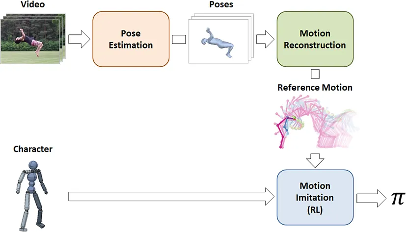
VideoMimic — 휴대폰 영상에서 사람과 장면을 함께 복원해, 높이 지도를 보는 G1 정책 하나가 계단을 오르고 의자에 앉는다(arXiv:2505.03729, CoRL 2025, UC Berkeley, 코드 MIT). 사람(VIMO SMPL, ViTPose 2D 관절, 발 접촉)과 장면(MegaSaM 또는 MonST3R)을 Levenberg–Marquardt로 함께 맞춘다. 300프레임 시퀀스 한 번에 A100에서 약 20 ms다(컴파일 뒤). 리타기팅은 PyRoki로 한 시퀀스 전체를 한 번에 푼다(300프레임 클립에 A100으로 약 10초). 복원 품질은 SLOPER4D 일부에서 WA-MPJPE 112.13 mm로 TRAM(149.48)보다 낮고, 장면 Chamfer 거리는 0.75로 10.66보다 작다(원문 표 2). 학습 데이터는 휴대폰 영상 123개다. 정책 입력은 11 × 11 높이 지도와 뿌리 명령이다. 카드는 Planner B.16.6에 있다.
travplan에 주는 의미. 복원 단계의 오차는 리타기팅과 추종이 떠안는다. VideoMimic 저자도 서로 부딪히는 연성 비용이 풀이기를 나쁜 국소 최솟값에 가두고, 그 뒷정리를 RL 추종기가 한다고 적는다. travplan에서 같은 구조는 "belief 지도로 만든 시연을 Planner D가 배운다"는 것이다. 지도 오차가 시연으로 들어가는 길을 따로 재야 한다(인식 A.13, TP-0146).
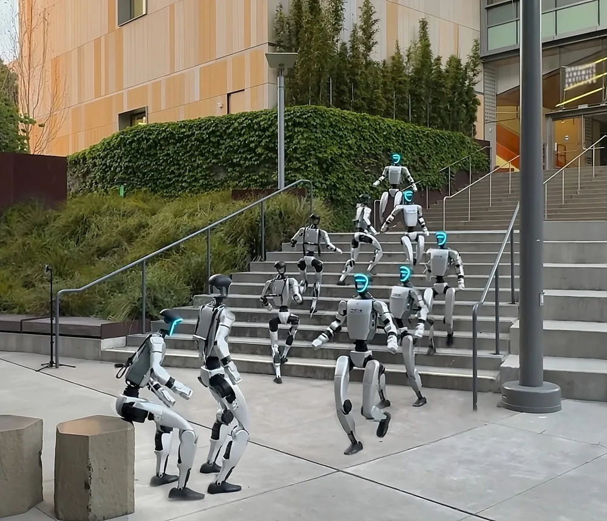
한 줄로. 리타기팅은 몸이 다른 로봇이 같은 동작을 하도록 관절 궤적을 푸는 최적화다. 관절각을 그대로 복사하면 발이 뜨거나 미끄러지고, 위치를 로봇 크기에 맞춰 줄인 뒤 IK로 풀어야 접촉이 지켜진다.
무엇이 다른가. GMR은 사람과 로봇의 차이를 뼈 길이, 관절 가동 범위, 운동학 구조, 몸 모양, 질량 분포, 구동기로 꼽는다. 사람의 어깨·엉덩이는 3자유도 구면 관절이고 로봇은 1자유도 회전 관절의 연쇄다. 그래서 관절 회전을 그대로 옮기면 뜨기, 땅 뚫기, 발 미끄러짐(foot skating), 끝점 이탈이 생긴다(GMR §II). 그 밖에 로봇이 아예 할 수 없는 동작이 있다. H2O는 옆돌기와 다리 길이보다 넓은 보폭을 예로 든다. 이런 동작은 리타기팅이 아니라 거르기(I.6)가 맡는다.
고전 해법 셋.
(1) 시공간 제약(Gleicher, SIGGRAPH 1998). 원 동작 $m_0(t)$에 변위 $d(t)$를 더한 $m(t) = m_0(t) + d(t)$를 찾는다. 발 디딤 같은 제약을 만족하면서 원 동작과의 차이를 가장 작게 한다. $d(t)$를 3차 B-스플라인으로 두어 고주파를 막는다. 중력과 균형은 다루지 않는다.
(2) 핵심점 IK(Peng 외, RSS 2020). 동물 동작을 사족보행 로봇으로 옮길 때 발과 엉덩이 핵심점을 짝지어 IK로 푼다. 프레임마다 기본 자세 $\bar q$ 쪽으로 당기는 정규화 항이 있다.
$$ \min_{q_{0:T}} \sum_t \Big[ \sum_i \| \hat x_i(t) - x_i(q_t) \|^2 + (\bar q - q_t)^\top W (\bar q - q_t) \Big] $$
(3) SMPL 체형 맞춤(H2O·PHC, 2023–2024). 먼저 SMPL 체형 $\beta'$와 축척을 경사하강으로 맞춰, SMPL의 기본 자세 관절 위치가 로봇의 관절 위치와 겹치게 한다. 다음으로 원 동작의 자세와 이동에 맞춘 체형을 넣고, 대응 관절(H2O 12개, PHC의 G1 설정 14개)의 위치 차이를 Adam으로 줄인다. 평균 체형을 쓰면 H1이 안짱걸음(in-toed)이 된다(H2O 그림 3). 약점은 접촉을 모른다는 것이다. 그래서 뜨기·미끄러짐·땅 뚫기가 남고, 느리고, 사람과 비율이 먼 로봇에는 맞지 않는다(GMR §II, OmniRetarget §II-A).
로봇 쪽 고전. 그래픽스의 리타기팅이 몸 비율과 제약을 다뤘다면, 로봇 쪽은 처음부터 관절·속도 한계와 균형을 함께 다뤘다. 이 시기 방법은 대개 정해진 동작 하나를 재생했고(Koenemann 2014는 실시간 모방), 외란에 대한 되먹임은 손으로 짠 안정화기가 맡았다. 학습 추종기가 그 안정화기 자리를 대신한 것이 2024년 이후의 변화다(I.8).
| 연구 | 로봇 | 무엇을 했나 |
|---|---|---|
| Pollard 외 (ICRA 2002) | Sarcos DB 상체 | 배우 7명의 동작 14개를 관절각 한계(국소 축척), 속도 한계 순서로 깎고 앞먹임 궤적 학습으로 따랐다. 자유도마다 따로 축척한다는 한계를 스스로 적었다 |
| Nakaoka 외 (ICRA 2003, IJRR 2007) | HRP-1S(2003), HRP-2 30자유도(2007) | 민요 춤의 다리 동작을 STAND·STEP·SQUAT 과제로 인식해 로봇에서 다시 만들고, 상체는 Pollard의 속도 한계를 쓰고, ZMP(zero moment point) 안정화기로 균형을 잡았다. 모션 캡처한 춤을 다리까지 재현한 이족 휴머노이드의 초기 사례다 |
| 연구 | 로봇 | 무엇을 했나 |
|---|---|---|
| Koenemann 외 (ICRA 2014) | Nao (25자유도) | 관성 모션 캡처 슈트의 끝점과 질량 중심을 실시간으로 따르며, 매 프레임 정적으로 안정한 자세를 풀었다. 한 프레임 평균 3.3 ms(표 I) |
| Ayusawa·Yoshida (T-RO 2017) | HRP-4 | 사람 모델에서 로봇 모델로의 변형 파라미터 추정, 로봇 동작 계획, 모션 캡처 IK를 함께 풀었다(초록 기준). SMPL 체형 맞춤(3)의 로봇 쪽 짝으로 볼 수 있다 |
장난감 문제로 본 축척. 사람 다리(넓적다리 0.45 m, 정강이 0.45 m, 엉덩이 높이 0.84 m)의 걸음을 짧고 비율이 다른 로봇 다리(0.30 m, 0.38 m)로 옮겼다. 다리 길이 비는 0.756이다.
| 방법 | 디딤 중 발끝 높이 | 디딤 중 발 수평 속도(평균 절댓값) | 디딤 동안 미끄러진 거리 |
|---|---|---|---|
| A. 관절각과 뿌리(높이·이동)를 그대로 복사 | 20.0–21.1 cm(뜬다) | 0.24 m/s | 14.6 cm |
| B. 관절각은 그대로, 뿌리만 다리 길이 비로 축소 | −0.5–0.5 cm | 0.06 m/s | 3.7 cm |
| C. 발 위치를 다리 길이 비로 축소(뿌리 포함)하고 IK로 다시 풂 | 0.0–0.0 cm | 0.00 m/s | 0.0 cm |
A와 B의 차이는 뿌리를 줄인 효과다. B에서도 발이 미끄러지는 이유는 넓적다리와 정강이의 비율이 달라서다. 같은 관절각이 로봇에서는 다른 보폭을 만든다. C의 0은 구성상 정확하다. 뿌리와 발을 같은 비로 줄이면 땅에 멈춘 사람 발은 로봇에서도 멈춘 목표가 되고, IK는 그 목표에 닿기만 하면 된다. GMR이 관절각을 복사하지 않고 위치를 축척해 IK로 푸는 이유가 이것이다(I.4). 이 장난감은 몸 부위가 발 하나라 GMR의 몸체별 축척은 보여 주지 않는다.
travplan에 주는 의미. 같은 문제가 바퀴 로봇에도 있다. 사람이 조종한 궤적이나 보행자 궤적을 스워브 로봇 궤적으로 옮길 때, 축척과 기구학 한계(조향 각 한계, TP-0163)를 무시하면 바퀴가 옆으로 미끄러지는 궤적이 나온다. 발 미끄러짐과 바퀴 옆 미끄러짐은 같은 종류의 오류다. 둘 다 "접촉점이 땅에 대해 움직이지 않아야 하는 순간에 움직인다".
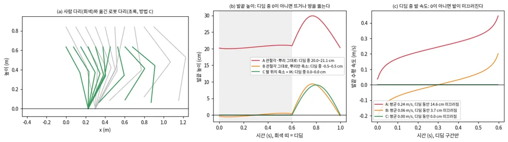
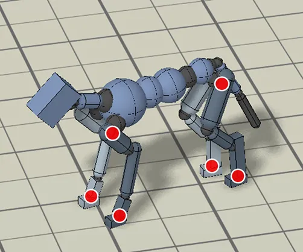
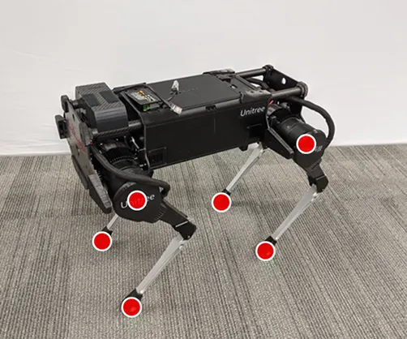
GMR(General Motion Retargeting) — 추종기를 고정하고 리타기팅만 바꿔 보니, 리타기팅의 결함이 곧 추종 실패였다(Retargeting Matters, arXiv:2510.02252, Araújo·Ze·Xu·Wu·Liu, Stanford, 2025-10 기술 보고서, 코드 MIT).
한 줄 요약. 보상을 동작마다 다듬지 않는 추종기(BeyondMimic)를 고정하면, 리타기팅 방법만 바꿔도 같은 동작의 성공률이 0 %에서 100 %까지 갈린다.
동작 방식. 다섯 단계다.
(1) 사람과 로봇의 핵심 몸체(몸통, 머리, 다리, 발, 팔, 손)를 짝짓고 위치·자세 가중치를 정한다.
(2) 기본 자세에서 둘의 몸체 자세가 같아지도록 회전 오프셋을 둔다. 안짱걸음 같은 결함을 줄인다.
(3) 비균일 국소 축척. 로봇 몸체 $b$마다 축척 $s_b$를 따로 두고, 뿌리 이동은 균일 축척 $s_{root}$로 줄인다. $i(b)$는 로봇 몸체 $b$에 짝지은 사람 몸체이고, $h/h_{ref}$는 실제 키를 가정 키로 나눈 비다(코드 그대로).
$$ p_b^{target} = \frac{h}{h_{ref}}\, s_b \left(p_{i(b)}^{src} - p_{root}^{src}\right) + \frac{h}{h_{ref}}\, s_{root}\, p_{root}^{src} $$
저자는 "다른 방법의 결함 대부분은 원 동작을 축척하는 단계에서 생긴다"고 진단한다. 식을 정리하면 디딤 발의 목표는 $\frac{h}{h_{ref}}\left(s_b\, p_{i(b)}^{src} + (s_{root} - s_b)\, p_{root}^{src}\right)$다. 사람 발이 멈춰 있어도 $s_b \ne s_{root}$이면 목표가 뿌리 속도의 $\frac{h}{h_{ref}}(s_{root} - s_b)$배로 움직인다. 그래서 GMR의 G1 설정은 골반·엉덩이·무릎·발의 축척을 모두 0.9로 두고 팔만 0.8로 줄인다. 뿌리를 줄이는 것 자체의 효과는 I.3의 A와 B 차이다.
(4) 1단계 IK. 회전은 모든 핵심 몸체, 위치는 끝점만 맞춘다. MuJoCo 미분 IK 라이브러리 Mink로 관절 한계 안에서 푼다. 뿌리 초기값은 축척한 뿌리 위치와 사람의 yaw다. $\ominus$는 두 회전 사이의 차이(축-각 벡터)다.
$$ \min_q \sum_{b} w_b^R \| R_{i(b)}^{src} \ominus R_b(q) \|^2 + \sum_{b \in \text{끝점}} w_b^p \| p_b^{target} - p_b(q) \|^2 \quad \text{s.t. } q^- \le q \le q^+ $$
(5) 2단계 미세 조정. 같은 꼴에 가중치를 바꾸고 모든 핵심 몸체의 위치를 넣는다. 프레임마다 앞 프레임에서 출발해 풀고, 끝에 가장 낮은 몸체 높이를 빼 땅에 맞춘다.
결과. LAFAN1 21개 동작을 G1로 옮겨 BeyondMimic으로 학습했다. 성공은 동작 전체를 끝까지 따라 해야 인정한다.
| 동작(성공 %) | PHC | GMR | ProtoMotions | Unitree |
|---|---|---|---|---|
| 춤 1·2, sim2sim(MuJoCo) | 0 · 0 | 100 · 100 | 100 · 100 | 100 · 100 |
| 달리다 서기, sim(Isaac Sim) | 17 | 98 | 20 | 100 |
| 달리다 서기, sim2sim | 74 | 100 | 26 | 100 |
| 춤 5, sim2sim | 100 | 51 | 100 | 100 |
| 평균 추종 오차(21개, sim) | PHC | GMR | ProtoMotions | Unitree |
|---|---|---|---|---|
| 전역 몸체 위치 오차 E_g-mpbpe (mm) | 247.8 | 104.1 | 139.7 | 77.2 |
| 국소 몸체 위치 오차 E_mpbpe (mm) | 40.2 | 28.1 | 33.2 | 23.2 |
| 관절각 오차 E_mpjpe (10⁻³ rad) | 778.5 | 561.7 | 641.8 | 483.0 |
표는 원문 표 I(성공률)과 표 II(오차)에서 옮겼다. 실패의 원인은 리타기팅 결함이었다. PHC의 춤 1·2는 땅을 뚫었고(한 경우 60 cm), ProtoMotions의 달리다 서기는 두 다리가 서로 파고들었다. GMR의 약점인 춤 5는 허리 roll이 갑자기 튀는 10초 구간이다(전체 데이터의 2 % 미만). Unitree의 비공개 리타기팅이 가장 좋았고, 사람 20명의 평가에서도 GMR과 구별이 어려웠다. 첫 기준 프레임도 결과를 바꿨다. GMR로 옮긴 '걷기 2'는 sim2sim에서 0번 프레임에서 시작하면 64 %, 7번에서 시작하면 100 %였고, Unitree의 '회전 1'도 47 %에서 100 %로 바뀌었다(표 III).
한계. 저자가 밝힌 것: 원 데이터는 LAFAN1, 로봇은 G1 하나이고, 물체·장면 상호작용이 없다. 정식 학회 발표는 확인하지 못했다(arXiv 기술 보고서).
공개 코드. GMR은 TWIST·TWIST2의 실시간 원격조종이 쓴다. SMPL-X(AMASS, OMOMO), BVH(LAFAN1), FBX, GVHMR 영상 입력을 받고, Threadripper 7960X에서 초당 60–70프레임을 낸다(README). SONIC도 원본 700시간을 GMR과 PyRoki로 G1에 옮겼다.
travplan에 주는 의미. GMR의 실험 설계가 핵심이다. 추종기와 보상을 고정하고 입력 데이터만 바꿔, 데이터의 결함이 성능에 주는 몫을 따로 쟀다. Planner D도 같은 질문을 할 수 있다. Controller(MPPI)를 고정하고 시연을 만든 방법(Guidance + MPPI 시연, 걸러 낸 시연, DAgger 시연)만 바꿔 짝 비교로 재면 시연 품질의 몫이 나온다.
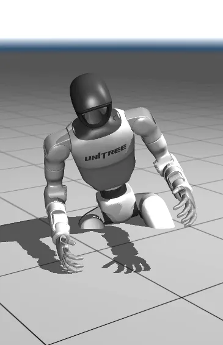
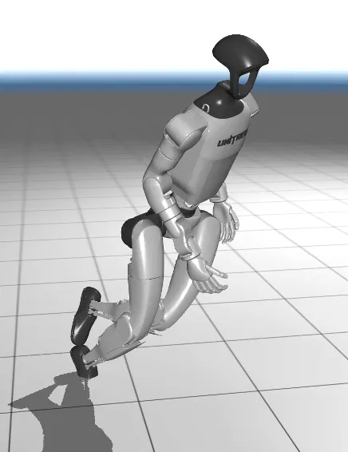
한 줄로. 핵심점 맞춤(PHC, GMR)은 로봇 몸만 보고 물체와 지형을 모른다. 상호작용 메시는 몸·물체·지형 점 사이의 상대 배치를 보존하는 비용을 두고, OmniRetarget은 여기에 충돌·관절·속도·디딤 발을 hard 제약으로 더했다.
상호작용 메시(Ho·Komura·Tai, SIGGRAPH 2010). 몸의 관절점과 물체·환경 위의 점을 Delaunay 사면체로 잇는다. 각 점의 Laplacian 좌표는 이웃 점들의 가중 평균에서 얼마나 떨어져 있는지다. 원 동작과 옮긴 동작의 Laplacian 좌표 차이(변형 에너지)를 줄이면 상대 배치가 지켜지고 관통이 준다. 춤, 레슬링, 칼싸움, 차에 타기를 예로 실시간 캐릭터 제어를 보였다. 로봇에는 IMMA(Nakaoka·Komura, Humanoids 2012)가 처음 옮겼다. 다만 관절·속도 한계가 없었고, 코드는 공개되지 않았으며 물체·환경 상호작용도 다루지 않았다(OmniRetarget 부록 VI-B4). 아래 식은 OmniRetarget §III-A의 표기다.
$$ L(p_i) = p_i - \sum_{j \in N(i)} w_{ij}\, p_j, \qquad E_L = \sum_i \| L(p_i^{src}) - L(p_i^{tgt}) \|^2 $$
OmniRetarget — 상호작용 메시 비용에 hard 제약을 더해 프레임마다 볼록 근사 문제를 풀고, 같은 동작을 물체·지형·로봇을 바꿔 다시 풀어 데이터를 늘린다(arXiv:2509.26633, Yang·Huang·Wu 외, Amazon FAR·MIT·UC Berkeley·Stanford·CMU, 프로젝트 페이지 표기 ICRA 2026 최우수 논문상, 코드 Apache-2.0, 데이터 MIT).
동작 방식. 프레임 $t$마다 아래 문제를 푼다. 디딤 발은 원 동작에서 수평 속도가 1 cm/s 아래인 발이다.
$$ q_t^\star = \arg\min_{q_t} \sum_i \| L(p^{src}_{t,i}) - L(p^{tgt}_{t,i}(q_t)) \|^2 + \| q_t - q_{t-1} \|_Q^2 $$
제약은 넷이다. 부호 거리 $\phi_j(q_t) \ge 0$(충돌), 관절 한계, 속도 한계 $v_{min}\,dt \le q_t - q_{t-1} \le v_{max}\,dt$, 디딤 발 고정 $p_t^F = p_{t-1}^F$다. 제약을 선형화하고 신뢰 영역 $\|dq\|_2 \le 0.2$를 더한 2차 원뿔 계획(SOCP, second-order cone program)을 최대 10번 반복한다. 축척은 SMPL 맞춤 대신 키 비율 $\alpha = h_{robot}/h_{demo}$ 하나다. 증강은 물체의 자세·모양, 지형 높이, 로봇 몸(G1·H1·T1)을 바꿔 같은 문제를 다시 푼다. 하체가 원 동작에서 멀어지지 않도록 앵커 비용을 둔다. 추종 학습은 고유감각만 보고, 보상 다섯 항과 로봇 무작위화 네 항(물체 물성은 따로)에 BeyondMimic 하이퍼파라미터를 그대로 썼다.
결과(원문 표 II). 같은 추종 학습으로 리타기팅 방법만 바꿨다. 어려운 동작 39개로 평가했다.
| 과제 | PHC | GMR | VideoMimic | OmniRetarget |
|---|---|---|---|---|
| 로봇–물체(OMOMO): 추종 성공 % | 71.28 | 50.83 | 3.85 | 82.20 |
| 로봇–물체: 최대 관통 깊이 (cm) | 5.11 | 8.50 | 7.48 | 1.34 |
| 로봇–지형(자체 모션 캡처): 추종 성공 % | 52.63 | 78.94 | 51.75 | 94.73 |
LAFAN1에서는 Unitree 리타기팅과 둘 다 100 % 성공했고, 최대 관통 깊이는 3.22 대 1.07 cm였다. 증강한 전체 셋으로 학습·평가하면 성공률이 79.1 %로, 원 동작만 쓴 82.2 %와 가깝다. 실물 G1은 키의 70 %인 0.9 m 단에 오르고, 4.6 kg 의자를 옮겨 디딤대로 쓰는 30초 동작을 했다. 벽 차고 공중제비(최고 15 rad/s, 3.5 m/s)는 5번 중 5번 성공했다. 공개 데이터는 OMOMO 상자 나르기 2.78시간, 자체 모션 캡처 1시간, LAFAN1 4.6시간이다.
한계. 저자가 밝힌 것: 선형화 때문에 작은 관통이 남는다. 궤적 전체가 아니라 프레임마다 풀어, 잡음이 많은 영상 원천에 대비해 궤적 전체를 함께 최적화하는 것을 앞으로의 과제로 꼽았다.
2026년 하반기의 후속 둘.
$$ \tilde g^k = \left(I - J^{<k\top}\left(J^{<k} J^{<k\top} + \lambda I\right)^{-1} J^{<k}\right) g^k $$
travplan에 주는 의미. 두 가지를 옮길 수 있다. 첫째, "꼭 지킬 것은 hard 제약으로, 닮음은 비용으로" 나누는 원칙이다. travplan의 NMPC(hard 제약)와 MPPI(비용) 갈래가 같은 선택을 다르게 한 것이다. 둘째, OmniRetarget의 증강은 시연 하나에서 지형을 바꿔 여러 시연을 만든다. travplan은 시연을 시뮬레이터에서 바로 만들 수 있어 이 증강이 덜 필요하다. 시연 생성이 비싼 실물 로그(MIMIC식)를 쓰게 되면 그때 필요해진다.
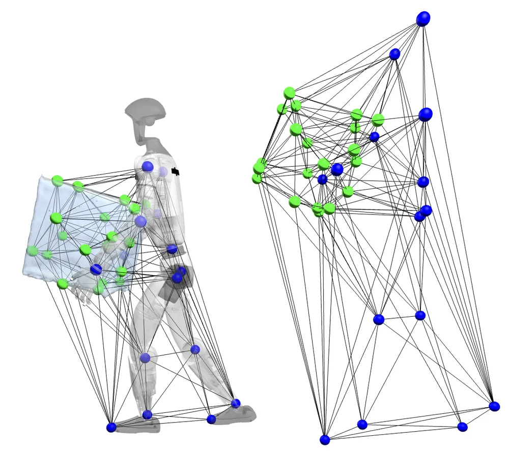
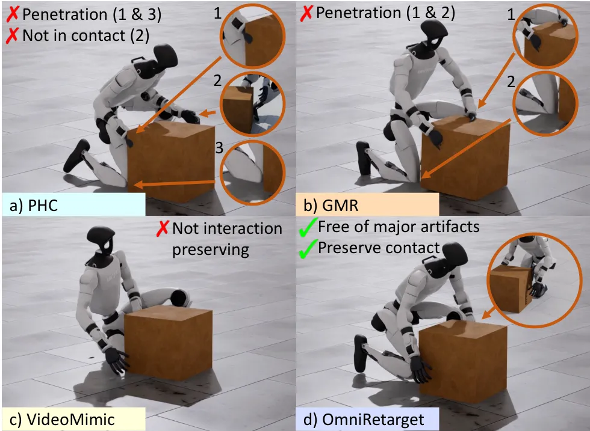
한 줄로. 운동학 리타기팅이 놓친 물리(균형·접촉·동역학)는 세 방법으로 메운다. 실행할 수 없는 동작을 거르거나, 시뮬레이터 안에서 궤적을 최적화하거나, 리타기팅 자체를 학습한다.
1. 거르기. 리타기팅한 동작을 실행할 수 있는지 보고 버린다. 방법마다 기준이 다르다.
| 방법 | 기준 | 결과 |
|---|---|---|
| H2O sim-to-data | 특권 정보를 보는 모방 정책이 실패한 동작을 뺀다 | AMASS 13k에서 리타기팅 10k, 그중 약 8.5k가 H1에 실행 가능 |
| ExBody2 | 기본 정책의 추종 오차로 동작마다 점수를 매기고, 거르는 문턱을 성능이 가장 좋아지는 값으로 찾는다 | 상체 다양성은 남기고 극단적 하체 동작만 거른다 |
| KungfuBot | 질량 중심과 압력 중심의 거리로 프레임별 안정성을 보고, 불안정 구간이 길면 버린다. 발목 변위·높이로 접촉 마스크를 추정하고, 그 마스크로 뜬 프레임의 높이를 바로잡는다 | 10개 중 4개를 버렸고, 버린 동작은 에피소드 길이 비가 54 % 이하였다 |
| SONIC | 계단 오르기·앉은 동작처럼 G1이 할 수 없는 동작을 이름과 내용으로 거른다 | 약 700시간에서 611시간 |
| SuperMimic | SONIC 공개 코드의 키워드 목록으로 이름을 거르고, MuJoCo 순기구학으로 높은 지지면·관통·뜬 발을 거른다 | BONES-SEED 142,220개에서 129,667개, 다시 129,514개(264.56시간) |
PHUMA(arXiv:2510.26236, CoRL 2026, KAIST·KRAFTON·Holiday Robotics, 코드 Apache-2.0)는 거르기와 리타기팅을 함께 바꿨다. 영상 기반 Humanoid-X를 jerk, 발 접촉, 높이, 지지 다각형 네 기준으로 거르고 LAFAN1·LocoMuJoCo·자체 영상을 더했다. 옮기기는 체형 적응 IK에 관절 한계·접지·미끄러짐 손실을 더한 PhySINK다. 접지 손실은 접촉 중인 뒤꿈치·발가락 높이의 제곱합이고, 미끄러짐 손실은 접촉 중 수평 속도의 크기다. 결과는 73.0시간(클립 7.6만 개, AMASS의 3.5배)이다. G1 프레임 비율로 GMR과 비교하면 충실도 56.3 대 94.8 %, 관절 한계 준수 81.8 대 100.0 %, 뜨지 않음 14.7 대 99.9 %, 미끄러지지 않음 67.7 대 89.7 %다. 관통 없음은 100.0 대 96.8 %로 GMR이 낫다(원문 표 1). 같은 MaskedMimic 추종기를 PHUMA 시험 셋에서 재면, LAFAN1로 학습하면 46.1 %, AMASS 76.2 %, Humanoid-X 50.6 %, PHUMA 92.7 %가 성공한다(표 4). 평지만 다룬다.
2. 물리로 옮기기. 시뮬레이터 안에서 궤적을 최적화해, 옮긴 결과가 처음부터 동역학적으로 가능하게 한다.
$$ U^{i+1} = U^i + \frac{\sum_j e^{-\mathcal C(U^i + W_j)/\lambda}\, W_j}{\sum_j e^{-\mathcal C(U^i + W_j)/\lambda}} $$
3. 배워서 옮기기. 리타기팅을 망 하나로 근사해 빠르게, 또는 짝 데이터 없이 한다.
그래픽스의 뿌리. NKN(arXiv:1804.05653, CVPR 2018)은 순기구학 층을 망 안에 두고 순환 일관 적대 학습으로, 짝 데이터 없이 캐릭터 사이의 동작을 옮겼다. Skeleton-Aware Networks(arXiv:2005.05732, SIGGRAPH 2020, 코드 BSD-2-Clause)는 관절 수가 다르지만 위상이 같은 골격들을 골격 풀링으로 공통의 원시 골격(primal skeleton)에 모은다. Mixamo 캐릭터에서 같은 구조 사이의 오차(키로 정규화, ×10³)는 NKN 6.24, SAN 2.76이다. 구조가 다른 골격 사이에서는 SAN이 2.25로, 이 설정에 맞춰 고친 CycleGAN(8.97)과 NKN(243, 복원 손실을 빼야 했다)보다 작았다(표 2). 짝 없는 순환 일관성은 아래 Human2Humanoid가 로봇에 다시 쓴다.
NMR(arXiv:2603.22201, 2026-03). PHUMA식 거르기, GMR, 군집별 RL 전문가로 만든 약 3만 쌍으로 1D-ResNet + Transformer를 학습한다. 관절 급변이 GMR 56, PHUMA 12, NMR 0회이고, 자기 충돌 프레임은 1.91, 4.95, 0.87 %다.
4. 속도. 데이터가 수백 시간이 되자 리타기팅 시간이 병목이 됐다. Fast Motion Retargeting(arXiv:2610.28470, 2026-10, UMass)은 실시간 반복 SQP(sequential quadratic programming)와 구간 병렬 처리로, CPU 한 대(Threadripper 9960X)의 워커 20개에서 LAFAN1을 초당 9,156프레임에 옮겼다. 같은 표에서 GMR은 48, ProtoMotions 67, OmniRetarget 2프레임이다. AMASS 전체(13,662개)는 초당 약 4,324프레임으로 1.08시간이 걸렸다(표 II). 저장소는 2026-10-22에 공개되지 않았다(404). NVIDIA는 Newton·Warp 기반 soma-retargeter(Apache-2.0)를 공개했다.
리타기팅 품질을 재는 법. 지표가 논문마다 달라 표끼리 숫자를 비교할 수 없다. 묶으면 넷이다.
| 지표 묶음 | 예 | 쓰는 논문 |
|---|---|---|
| 운동학 결함 | 관통 시간·최대 깊이, 발 미끄러짐 시간·최대 속도, 접촉 유지 비율, 관절 한계 위반 프레임, 관절 급변 횟수 | OmniRetarget, PHUMA, NMR, HOI-Retarget |
| 추종 결과(결정적 시험) | 추종기와 보상을 고정한 성공률, 추종 오차 | GMR, OmniRetarget, PHUMA, ReActor, UMR |
| 물리 가능성 | 시뮬레이터 개루프 재생 오차, 착지 비율 | SPIDER, DSMS |
| 사람 평가와 속도 | 충실도 설문(GMR 20명), 초당 프레임·클립당 시간 | GMR, Fast Motion Retargeting |
travplan에 주는 의미. SPIDER의 갱신식은 travplan MPPI의 가중 평균(Controller E.1)과 같은 꼴이다. 리타기팅도 "비용으로 표본을 가중해 궤적을 민다"는 같은 도구로 풀린다. 거르기 쪽은 Planner D 시연에 그대로 옮길 수 있다. 시연을 Controller로 다시 굴려 치명 셀에 들어가거나 시간이 넘는 것을 빼는 것이 H2O의 sim-to-data와 같은 절차다(Planner B.16.6의 H2O 카드).
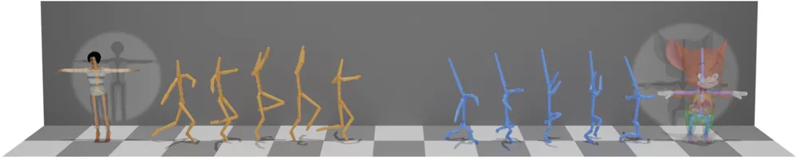
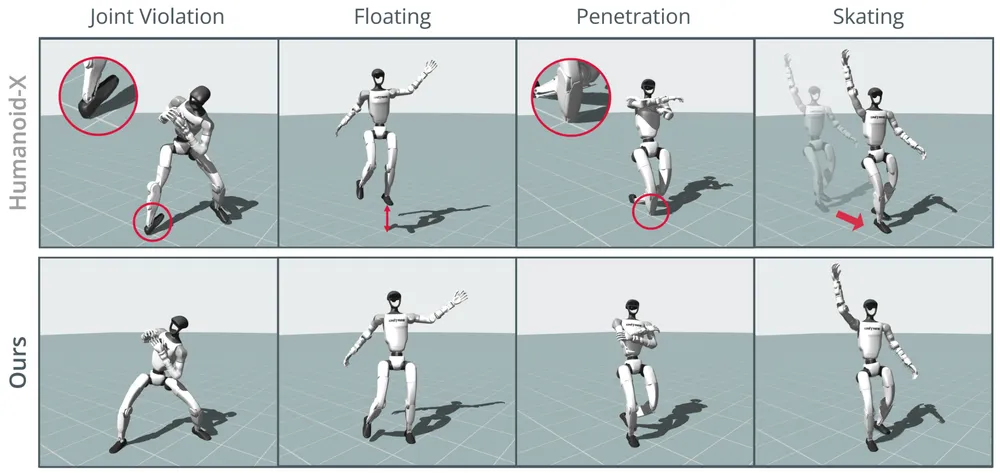
I.7 캐릭터 애니메이션의 뿌리: DeepMimic에서 MaskedMimic까지
I.8 실물 휴머노이드 추종기, 2024–2025: G1과 BeyondMimic 설정으로 모였다
I.9 공통 설계와 평가 지표: 무엇이 표준이고, 무엇이 아직 갈리나
한 줄로. 시뮬레이션 캐릭터가 모션 캡처를 따라 하게 만든 컴퓨터 그래픽스 연구가 휴머노이드 추종기의 부품 대부분을 만들었다. 보상의 꼴(지수 추종 보상), 시작 상태 표집, 조기 종료, 대규모 범용 추종과 그 증류다. 특권 정보를 보는 교사를 학생으로 옮기는 증류는 다리 로봇 RL(Lee 외 2020, Planner B.14)에서 먼저 자리 잡았다.
DeepMimic — 위상으로 색인한 기준 동작과의 차이를 지수 보상으로 바꿔 PPO로 학습한다(arXiv:1804.02717, Peng·Abbeel·Levine·van de Panne, SIGGRAPH 2018, 코드 MIT). 보상은 모방 항과 과제 항의 합 $r = \omega^I r^I + \omega^G r^G$이고, 모방 항은 관절 회전·관절 속도·끝점·질량 중심 넷의 가중합 $r^I = 0.65\, r^p + 0.1\, r^v + 0.15\, r^e + 0.1\, r^c$다. 회전 항이 대표다. $\ominus$는 두 회전 사이의 차이(회전각)다.
$$ r^p_t = \exp\left[ -2 \sum_j \| \hat q_j \ominus q_j \|^2 \right] $$
두 장치. RSI(reference state initialization)는 에피소드를 기준 동작의 무작위 위상에서 시작한다. 뒤공중제비의 착지처럼 처음부터 가기 어려운 구간도 학습이 본다. ET(early termination)는 몸통이나 머리가 땅에 닿으면 끝내고 남은 보상을 0으로 둔다. 추종 보상은 모두 0과 1 사이의 양수라, 일찍 끝나면 받을 보상을 잃는 것 자체가 벌점이 된다. 절제 실험에서 둘 다 역동적 기술에 결정적이었다. 정책은 30 Hz로 PD 목표를 낸다. 정규화한 수익은 걷기 0.985, 뒤공중제비 0.729, 앞공중제비 0.485였다(표 2).
AMP — 기준 동작을 프레임마다 맞추지 않고, 상태 전이가 데이터 같은지를 판별기로 채점한다(arXiv:2104.02180, SIGGRAPH 2021). 최소제곱 GAN(generative adversarial network) 판별기 $D(s, s')$의 출력을 스타일 보상으로 바꿔 과제 보상과 더한다. 위상도 클립 선택도 필요 없어 정리되지 않은 데이터에 쓴다. 카드는 I.16에 있다. 한 클립 자세 오차는 동작에 따라 다르다. 뒤공중제비에서는 0.150 m로 DeepMimic식 추종(0.076 m)의 두 배였고, 옆 공중제비(0.124 대 0.191 m)와 회전(0.047 대 0.063 m)에서는 AMP 쪽이 작았다(표 3). 옆돌기에서는 0.067 대 0.039 m로 추종 쪽이 작았다.
$$ r^S_t = \max\left[0,\; 1 - 0.25\,\left(D(s_t, s_{t+1}) - 1\right)^2\right] $$
ASE, PHC, PULSE, MaskedMimic. 카드는 Planner B.16.1에 있다. 여기서는 추종기 설계에 남긴 것만 적는다.
계보: 지금 추종기의 부품은 어디서 왔나. 휴머노이드 추종기의 부품 대부분은 2010–2022년 그래픽스·DeepMind 연구에서 이미 나왔다. 아래 표는 각 연구가 남긴 것만 적는다.
| 연구 | 무엇을 했나 | 지금 추종기에 남은 것 |
|---|---|---|
| SAMCON (SIGGRAPH 2010, DOI 10.1145/1778765.1778865) | PD 목표의 변위를 표본으로 뽑아 앞으로 시뮬레이션하고, 좋은 표본만 남겨 모션 캡처를 따랐다. 미분이 필요 없다. 반복마다 표본 1,400개를 80코어 클러스터에서 돌렸다(§4) | 표본 기반 궤적 최적화. SPIDER(I.6)와 travplan MPPI가 같은 갈래다 |
| DReCon (SIGGRAPH Asia 2019, DOI 10.1145/3355089.3356536) | 모션 매칭(운동학 Planner)이 다음 자세를 고르고, RL 정책이 일부 관절의 PD 목표에 오프셋을 더한다. 위상 입력이 없다(§6.3). 정책 질의 30 Hz(표 2), 한 프레임 전체 340 µs 중 정책 평가 60 µs(표 4) | 운동학 Planner와 추종기의 분리. 추종기를 Planner가 내는 동작의 분포로 학습한다. SONIC Planner(I.10)와 I.13의 원형이다 |
| NPMP (arXiv:1811.11711, ICLR 2019) | CMU 동작 조각마다 전문가 2,707개를 학습하고, 60차원 잠재를 받는 학생 하나로 증류했다. 그 디코더를 위 층의 행동 공간으로 다시 쓴다 | 전문가 → 잠재 조건 학생 → 디코더 재사용. PULSE·MaskedMimic, 군집 전문가를 증류하는 Humanoid-GPT의 원형이다 |
| CoMic (ICML 2020, PMLR) | 증류 없이 정책 하나(V-MPO)가 CMU 최대 3.5시간을 추종한다. 미래 기준 5프레임을 보고, 몸체 위치·관절 오차가 문턱을 넘으면 끝낸다(§4) | 다중 클립 추종 환경(dm_control의 reference_pose)과 오차 문턱 종료 |
| ScaDiver (SIGGRAPH 2020, DOI 10.1145/3386569.3392381) | CMU 동작을 동작 그래프 위 무작위 걷기로 10초짜리 기준 8,192개(약 23시간)로 늘리고, 군집 8개의 전문가를 softmax 게이트로 묶었다 | 군집별 전문가와 MoE. 작은 군집은 군집마다 같은 비율로 뽑아야 배워진다(§5.3, 근거는 §6.3 그림 8). GMT의 MoE, Humanoid-GPT의 군집 전문가로 이어진다 |
| UHC (arXiv:2106.05969, NeurIPS 2021) | SMPL 평균 체형 휴머노이드가 물체 상호작용을 뺀 AMASS 약 1.1만 동작을 추종한다. 같은 학습 동작에서 성공 97.0 %(저자가 재구현한 DeepMimic 24.0 %, 부록 표 7). 몸에 잔차 힘(RFC, arXiv:2006.07364)을 더했다 | SMPL 휴머노이드, 관절 평균 0.5 m 이탈 종료(코드 기본값)와 성공 정의, 어려운 구간 우선 표집. PHC가 이어받되(종료 판정에서 발목·발가락은 뺐다) 잔차 힘을 없앴다 |
| 연구 | 무엇을 했나 | 지금 추종기에 남은 것 |
|---|---|---|
| MoCapAct (arXiv:2208.07363, NeurIPS 2022 데이터·벤치마크) | CMU 3.5시간을 조각 2,589개로 나눠 조각마다 PPO 전문가를 학습하고, 전문가 롤아웃과 증류 정책을 공개했다. 전문가 학습에 계산 시간을 합쳐 약 50년이 들었다(§4.1) | 전문가 롤아웃을 공개 학습 셋으로. 증류한 다중 클립 정책은 전문가 성능의 80–84 %다(표 2) |
| Imitate and Repurpose (arXiv:2203.17138, DeepMind 2022, Planner B.16.2) | CMU 보행을 OP3 휴머노이드로, 개 동작을 ANYmal로 옮겨 NPMP식 잠재로 추종하고 재사용했다. 실물로 영 샷 이전 | 그래픽스 계보가 실물 로봇으로 넘어간 초기 사례다 |
UHC. 휴머노이드는 SMPL의 기구학 구조와 평균 체형으로 만든다(§3). 정책은 기본 단위 8개를 섞는 MCP(multiplicative compositional policy)이고, 행동은 뿌리를 뺀 23관절 × 3의 PD 목표와 6차원 잔차 뿌리 힘이다(부록 C.1).
에피소드는 무작위 300프레임 창에서 시작하고, 프레임을 가치 $v_j$에 대해 $P \propto \exp(-v_j/\tau)$로 뽑아 어려운 프레임을 더 자주 본다(§3.1, 부록 표 6의 온도 2). BeyondMimic·GMT의 적응 표집(I.8)과 같은 생각이다.
종료 문턱 0.5 m는 논문에 숫자가 없고 공개 코드(uhc/envs/humanoid_im.py의 body_diff_thresh)에 있다. 관절 위치 거리의 관절 평균이 0.5 m를 넘으면 끝난다. 성공은 끝까지 넘어지지 않고 따라간 경우다.
NPMP. 6초가 넘는 클립을 잘라 2–6초 조각 약 3,000개를 만들고 전문가 2,707개를 학습했다(§2.1). 증류는 전문가마다 잡음 섞인 롤아웃 100개의 행동 복제로 했다. 대안으로 명목 궤적 하나를 따라 행동–상태 야코비안을 기록하는 LFPC(linear-feedback policy cloning)를 제안했다. 단일 기술에서는 LFPC 궤적 하나가 수백 궤적의 행동 복제와 비슷했지만(§3.1, 그림 3), 전문가 2,707개 전체에서는 행동 복제가 더 나았다(§3.2, 그림 4). LFPC는 학생이 전문가의 되먹임까지 배우게 하는 장치이고, DAgger는 같은 문제를 학생이 방문한 상태에서 교사를 다시 불러 푼다.
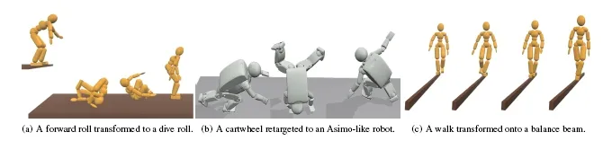
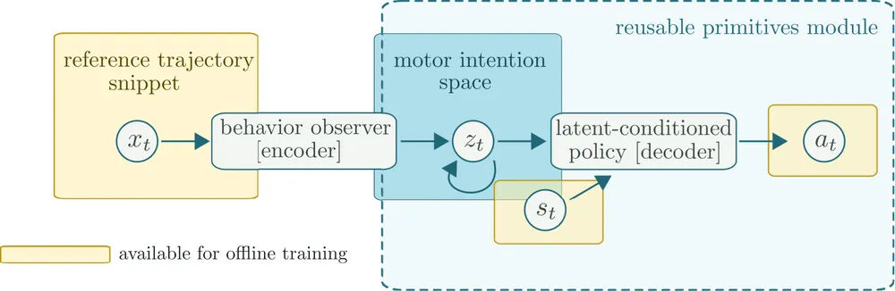
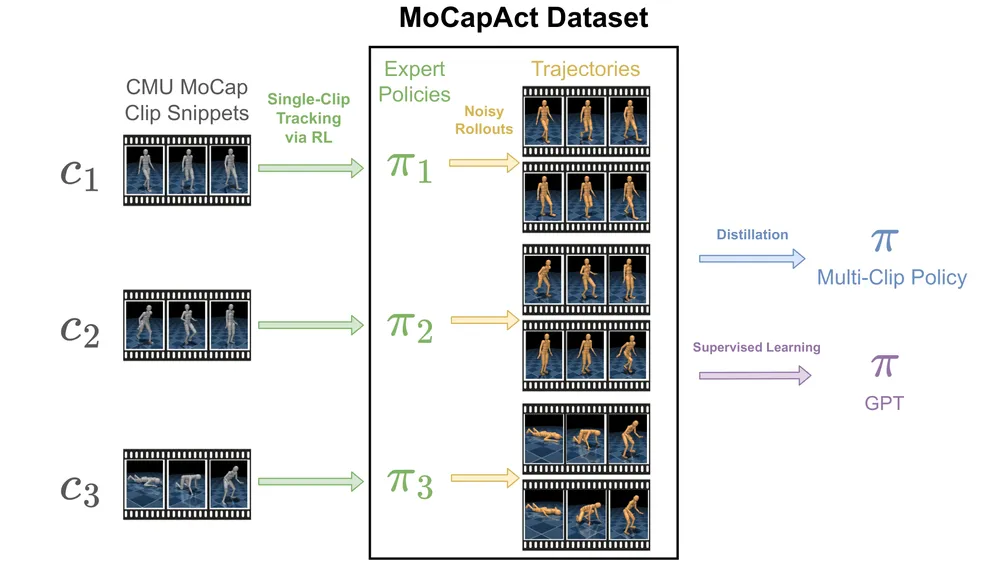
왜 추종이 주류가 됐나. AMP 계열은 "사람 같음"을 유도할 뿐 특정 동작을 정확히 재현하도록 학습하지 않는다. 범용 추종기는 원격조종처럼 "이 동작을 지금 해라"는 명령을 받아야 한다. 그래서 2024년 이후 실물 휴머노이드 연구는 DeepMimic식 추종 보상과 PHC식 범용 추종을 기본으로 삼았다(I.8). 판별기 보상은 사라지지 않았고, PHC처럼 보조 항으로 남았다. 적대적 모방의 일반론은 강화학습 문서 R.17에, 동작 사전의 계보는 I.15에 있다. 추종이 아닌 갈래도 있다. Meta Motivo(arXiv:2504.11054, ICLR 2025)와 BFM-Zero(arXiv:2511.04131)는 비지도 RL로 행동 기반 모델을 만들고, 보상·목표 자세·추종을 같은 잠재 공간에서 영 샷으로 푼다.
그래픽스 쪽의 최근 부품(2025–2026). 휴머노이드 추종기가 다음에 가져올 후보다. 수치는 넷 다 시뮬레이션에서 쟀고, ADD와 SMP는 MimicKit에 구현이 있다(I.19).
| 연구 | 무엇이 새로운가 | 대표 수치 |
|---|---|---|
| ADD (arXiv:2505.04961, SIGGRAPH Asia 2025, 카드는 I.17) | 손으로 가중한 추종 보상 대신, 추종 오차 벡터만 보는 판별기를 둔다. 양성 표본은 영벡터 하나이고 기울기 벌점을 더한다 | 파쿠르 이중 콩 볼트(Double Kong) 위치 오차 0.030 m(DeepMimic 0.223 m, 넘지 못함, 표 1, 학습 클립에서 잼). 달리기는 0.165 대 0.013 m로 나빴고, 옆 공중제비(sideflip)는 끝까지 돌지 않고 서는 쪽으로 수렴했다(§6.4) |
| SMP (arXiv:2512.03028, ACM TOG·SIGGRAPH 2026, 카드는 I.18) | 고정한 동작 diffusion 모델의 점수(score)를 보상으로 쓴다. 판별기를 과제마다 다시 학습하지 않아 동작 사전을 재사용한다 | 피구 과제 0.733(AMP 0.233, 판별기를 고정한 AMP 0.204, 표 2). 한 클립 모방 여섯 기술의 평균 위치 오차는 AMP와 같은 0.046 m(표 4) |
| 연구 | 무엇이 새로운가 | 대표 수치 |
|---|---|---|
| GPC (arXiv:2606.29148, SIGGRAPH 2026, NVIDIA·SFU, ProtoMotions에 구현) | 이산 토큰(40개 × 9수준)을 거치는 추종기를 RL로 끝까지 학습하고, 그 토큰 위에 GPT식 생성 제어기를 얹는다 | Bones 전체(약 680시간, 공개된 BONES-SEED보다 큰 원본)에서 성공 99.98 %, 관절 위치 오차 34.9 mm(같은 성공의 MLP는 25.6 mm, 표 1). SONIC 토큰의 그래픽스 쪽 짝이다 |
| InterMimic (arXiv:2502.20390, CVPR 2025, 코드 MIT) | 피험자별 교사 17개를 RL과 DAgger를 섞어 학생 하나로 증류해 사람–물체 상호작용(OMOMO)을 추종한다 | 보지 않은 피험자 한 명에서 성공 98.1 %(MLP 학생 95.5 %). 원 모션 캡처에 PPO만 쓰면 9.6 %, 교사가 다듬은 기준에 PPO만 91.6 %, DAgger만 54.3 %(표 2). 성공 정의가 "한 번이라도 따라 함"이라 느슨하다 |
ADD가 겨냥한 것은 I.9의 보상 꼴 행이다. 지수 추종 보상의 항별 계수를 동작마다 맞추는 일을 판별기 하나로 바꾼다. 다만 한 클립 사람 달리기와 로봇 걷기에서는 뿌리 위치를 덜 따라가 DeepMimic이 더 정확했다. 저자는 뿌리 위치가 오차 벡터의 세 성분뿐이고 기울기 벌점이 그 성분에 큰 가중을 막기 때문이라고 본다(가설, §6.4). PARC(지형 조건 동작 생성기와 추종기를 번갈아 키우는 데이터 증강)와 MaskedManipulator(MaskedMimic의 증류를 전신 물체 조작으로)는 Planner B.16.1에 카드가 있다.
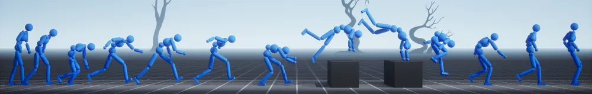
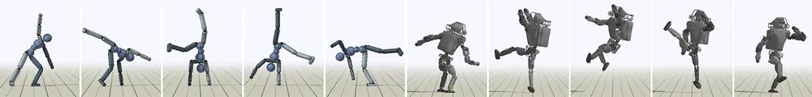
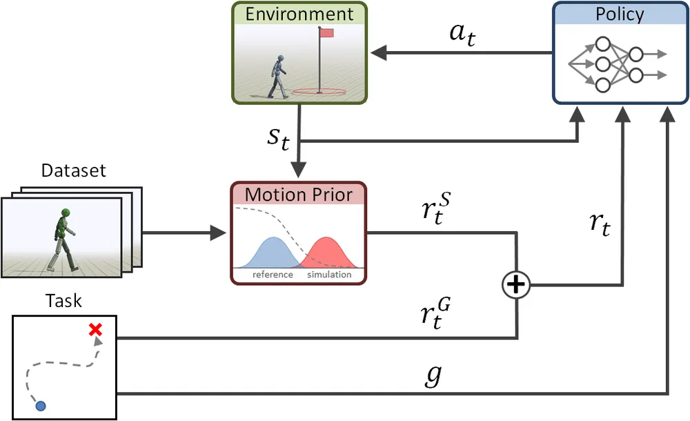
한 줄로. 2024년의 실물 추종기는 원격조종을 목표로 시작했고(H2O, OmniH2O, HumanPlus), 2025년에는 Unitree G1과 BeyondMimic의 한 설정이 사실상 표준이 되어 방법끼리 비교할 수 있게 됐다.
| 이름 | 연·발표 | 핵심 | 대표 수치 | 코드 |
|---|---|---|---|---|
| H2O | 2024.03 | RGB 원격조종, 특권 모방 정책으로 실행 못 할 동작을 거름(sim-to-data) | 거르지 않은 AMASS 1만 개 평가 성공 72.5 %(거르지 않은 데이터로 학습하면 67.9 %) | human2humanoid |
| OmniH2O | 2024.06 · CoRL 2024 | 머리·두 손 세 점, 25스텝 이력 학생을 DAgger로 증류 | 94.10 %(같은 이력 학생을 RL만으로 학습하면 47.11 %) | 같은 저장소 |
| HumanPlus | 2024.06 · CoRL 2024 | 40시간 사람 동작으로 RGB 그림자 원격조종, 그 위에 행동 복제 | 시연 40개 이하로 자율 과제 60–100 % | humanplus |
| ExBody | 2024.02 · RSS 2024 | 상체만 동작 추종, 하체는 몸통 속도 목표 | CMU 780클립, H1 | expressive-humanoid |
| ExBody2 | 2024.12 | 추종 오차로 데이터 거르기, 국소 핵심점 추종과 전역 속도 분리 | G1 CMU 국소 핵심점 오차 0.1000(ExBody 0.1339) | — |
| HOVER | 2024.10 · ICRA 2025 | 전신 교사를 마스크 명령 학생 하나로 증류 | ExBody 모드 국소 몸체 위치 오차 63.9 mm(전용 정책 83.1 mm) | HOVER |
| ASAP | 2025.02 · RSS 2025 | 실물 기록으로 행동 보정 모델을 배워 시뮬레이터를 실물에 맞춤 | IsaacGym에서 IsaacSim으로 0.5 s 개루프 전역 오차 26.8 mm(SysID 32.1) | ASAP |
| KungfuBot | 2025.06 · NeurIPS 2025 | 영상 동작 물리 거르기, 추종 오차로 보상 허용폭을 조절, 동작마다 정책 | 쉬운 동작 몸체 오차 28.16 mm | PBHC |
| GMT | 2025.06 | 적응 표집과 동작 MoE로 정책 하나가 AMASS·LAFAN1을 따름 | LAFAN1 핵심점 오차 45.16 mm(교사 기준, 재구현 ExBody2 58.36) | GMT |
| TWIST | 2025.05 · CoRL 2025 | 실시간 모션 캡처를 GMR로 리타기팅, RL과 행동 복제를 함께 쓴 학생 | 오프라인 1.5만 클립 + 자체 온라인 캡처 150클립 | TWIST |
| HuB | 2025.05 · CoRL 2025 | 극단적 균형 동작(한 발 서기, 높은 차기)을 위해 기준 동작을 다듬고(SMPL 초기화 리타기팅, 두 발 디딤 연장) 추종 허용폭을 넓힘. 동작마다 정책 | 실물 G1 제비 균형 4/5, 이소룡 차기 5/5(OmniH2O 0/5) | 확인 못 함 |
| BumbleBee | 2025.06 | 다리 특징과 글 설명으로 동작을 군집으로 나누고, 군집 전문가를 일반 정책 하나로 증류 | MuJoCo 성공 66.84 %(재구현 ExBody2 50.19 %, 무작위로 나눈 군집 35.36 %) | — |
| 이름 | 연·발표 | 핵심 | 대표 수치 | 코드 |
|---|---|---|---|---|
| BeyondMimic | 2025.08 · Science Robotics 2026 | 한 설정의 동작 추종, 잠재 diffusion으로 과제 유도 | 옆돌기 하나(MuJoCo): 잠재 인코딩 없는 diffusion 5 %, 잠재 diffusion 95 % | whole_body_tracking |
| UniTracker | 2025.07 | 특권 교사, 부분 관측 CVAE 학생, 어려운 동작 빠른 적응 | AMASS 학습 셋 91.82 %(ExBody2 86.39 %) | 확인 못 함 |
| Any2Track | 2025.09 | 이력으로 동역학을 온라인 추정하는 적응기를 더함 | 외란 없는 추종 89.23 %(재구현 ExBody2 79.68 %), 지형 외란 아래 83.2 %(PPO 73.0 %) | OpenTrack |
| KungfuBot2 (VMS) | 2025.09 | 국소 자세와 전역 drift를 함께 보는 혼합 추종 목표, 기술 표현을 나누는 직교 MoE | 시험 셋 성공 92.68 %(재구현 GMT 90.07 %, ExBody2 90.97 %). 전역 뿌리 위치 오차 학습 48.15 mm(GMT 292.1 mm), 시험 57.92 mm(397.1 mm, 표 III) | 확인 못 함 |
| CLONE | 2025.06 · CoRL 2025 | MR 헤드셋의 머리·손만으로, MoE와 전역 drift 보정 | 핵심점 오차 87.84(MLP 113.97) | CLONE |
| TWIST2 | 2025.11 | 모션 캡처 없이 PICO4U VR과 2자유도 목(약 250달러)으로 원격조종 데이터 | 양손 과제 98회를 18.5분에 수집, 100 % | TWIST2 |
| AMS | 2025.11 · ICRA 2026 | 사람 동작에 생성한 한 발 균형 동작을 섞은 이질 데이터와 성능 기반 적응 표집으로, 역동 추종과 극단 균형을 정책 하나에 | 전체 데이터 성공 99.78 %(OmniH2O 98.93 %, 재구현 HuB 77.23 %) | AMS(균형 동작 생성기·데이터만) |
| HDMI | 2025.09 | 단안 영상의 사람·물체 궤적으로 로봇과 물체를 함께 추종 | 문 통과 연속 67회 | HDMI |
| ResMimic | 2025.10 | 자체 학습한 범용 추종 기본 정책에 물체 점군 보상의 잔차 정책 | MuJoCo 평균 92.5 %(기본 정책 10 %) | ResMimic |
숫자는 각 논문의 표에서 옮겼고 평가 셋과 성공 정의가 서로 다르다. 같은 행 안의 비교만 의미가 있다. H2O·OmniH2O·HumanPlus·ExBody·ExBody2·ASAP·BeyondMimic의 자세한 카드는 Planner B.16.6에 있다.
표준이 된 설정: BeyondMimic. 2025–2026년 연구 다수가 BeyondMimic의 보상·종료·무작위화를 그대로 가져온다(OmniRetarget, Scaling BFM, SceneBot, SuperMimic). 핵심은 넷이다.
BeyondMimic(원문 표 S1·S2·S5와 보충 S1). 위치·자세·선속도·각속도 항은 가중 1.0이고, 앵커 위치·자세 항(선택)은 가중 0.5다. 벌점은 행동 변화율 −0.1, 관절 한계 −10, 자기 접촉 −0.1이다. 종료는 앵커나 끝점의 높이 오차가 0.25 m를 넘거나, 앵커 자세 오차가 0.8을 넘을 때다(논문은 0.8 rad로 적고, 공개 코드는 골반 좌표계에서 본 중력 방향 z 성분의 차를 쓴다). 적응 표집은 실패율을 $\bar f \leftarrow 0.999 \bar f + 0.001 f$로 갱신하고, 실패율에 $0.1/S$를 더해 실패가 고르게 낮으면 균등 표집으로 돌아가게 한다. 논문은 실패 직전 구간으로 0.8 비율로 퍼뜨리고, 공개 코드의 기본값은 퍼뜨리지 않는다. 무작위화는 정지 마찰 U[0.3, 1.6], 운동 마찰 U[0.3, 1.2], 반발 U[0, 0.5], 기본 관절 오프셋, 몸통 질량 중심 오프셋, 뿌리 속도 밀기다. 행동 축척은 $0.25\,\tau_{max}/k_p$이고 망은 MLP [512, 256, 128]이다.
GMT 적응 표집(원문 §3.1). 10초보다 긴 동작은 최대 10초 하위 클립으로 자르되, 경계에 최대 2초의 무작위 오프셋을 주고 주기적으로 다시 자른다. 동작마다 완료 수준 $c_i$를 10에서 시작해, 끝까지 따라 할 때마다 0.99배 한다(최소 1). 종료 문턱은 $c_i$에 따라 0.25에서 0.6 m 사이로 바뀐다.
$$ E_i = 0.25 \exp\left(\frac{c_i - 1}{9} \log\frac{0.6}{0.25}\right) $$
$c_i = 1$이 된 동작은 핵심 몸체 최대 오차 $E^{max}$로 표집 수준 $s_i = (\min(E^{max}/0.15, 1))^5$를 정한다. 아니면 $s_i = c_i$다. MoE를 빼면 LAFAN1 오차가 45.16에서 48.26 mm로, 적응 표집을 빼면 49.61 mm로 늘었다(표 2).
travplan에 주는 것. Planner D의 행동 복제와 DAgger는 지형 레벨을 고르게 뽑는다(TP-0073·0075). RL 후학습에는 손으로 고른 집중이 이미 있다. curb_ramp 레벨 3만 굴리는 라운드(TP-0138)와, 경사로를 지나친 곳에서 시작하는 리셋(TP-0143)이다. 리셋은 RSI와 같은 생각이다. GMT·BeyondMimic에서 더 가져올 것은 실패율의 이동 평균으로 시작 장면을 자동으로 고르는 부분이다. 가설이고 재지 않았다.
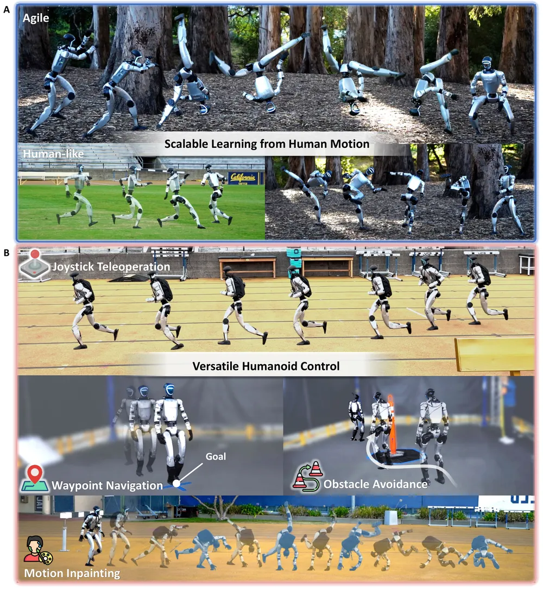
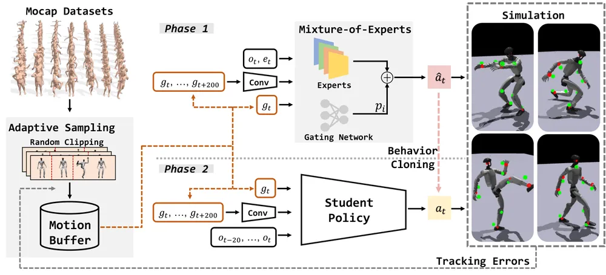
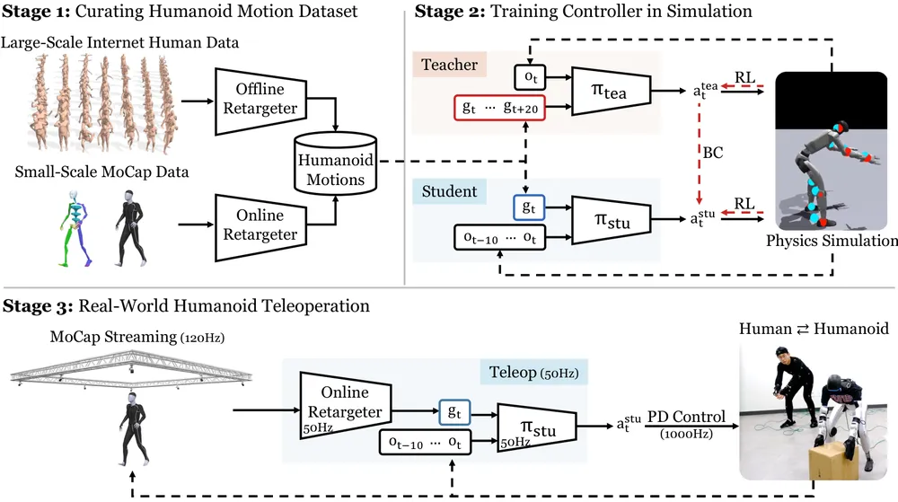
travplan에 주는 의미. OmniH2O의 절제는 학습법보다 입력의 몫을 보여 준다. 같은 25스텝 이력 학생을 RL만으로 학습하면 47.11 %, DAgger로는 94.10 %였다. 이력이 없으면 RL도 90.62 %라, 차이는 긴 이력 입력을 RL이 소화하지 못한 데서 온다(원문 표 1).
travplan의 Planner D는 이미 Guidance + MPPI 교사의 DAgger로 학습한다(TP-0075). TinyPolicy는 pure pursuit 회귀 뒤 진화 전략으로 다듬는다(Controller E.12). 그 입력에 이력을 넣게 되면 RL·ES보다 교사 증류가 먼저다(Planner B.16.1의 HOVER 카드와 같은 결론).
한 줄로. 추종기 설계는 지수 추종 보상, 시작 위상 무작위화, 조기 종료, 특권 교사와 이력 학생, 50 Hz PD 목표로 모였다. 평가 지표는 아직 갈려서 논문 사이의 숫자를 그대로 비교할 수 없다.
| 요소 | 지금의 대표 설정 | 근거 |
|---|---|---|
| 보상 꼴 | 항마다 지수 점수. DeepMimic은 회전 2, 속도 0.1, 끝점 40, 질량 중심 10의 계수, BeyondMimic은 σ 0.3·0.4·1.0·3.14 | DeepMimic §5, BeyondMimic 표 S1 |
| 추종 좌표 | 앵커(몸통) 기준 국소 + 선택적 전역 앵커 항. 전역 추종을 따로 고르는 연구도 있다 | BeyondMimic, Scaling BFM |
| 시작 상태 | 기준 동작의 무작위 위상(RSI) | DeepMimic 이후 거의 전부 |
| 조기 종료 | 머리·몸통 접지, 관절 평균 0.5 m 이탈(발목·발가락 제외), 앵커·끝점 높이 0.25 m 또는 앵커 자세 0.8, 동작별 0.25–0.6 m | DeepMimic, PHC, BeyondMimic, GMT |
| 어려운 구간 | 1초 구간 실패율 표집, 동작별 완료 수준, 오차로 보상 허용폭 조절 | BeyondMimic, GMT, KungfuBot |
| 교사–학생 | 특권 교사를 이력 학생으로 증류(DAgger 또는 RL과 행동 복제) | OmniH2O, GMT, MaskedMimic(DAgger), TWIST(RL과 행동 복제) |
| 관측 이력 | 10–25스텝. 이력을 빼면 뿌리 위치 오차 +38 %(시뮬레이션), 실물 전역 오차 47.9에서 83.3 mm. 반례가 있다. ZEST의 15동작 다중 기술 정책(시뮬레이션, 같은 학습 시간)에서는 이력 20스텝이나 미래 20스텝이 학습을 늦추거나 막았고, 다음 한 스텝 기준이 가장 나았다. 저자는 자기 설정(MLP·하이퍼파라미터)에 한정된 결과일 수 있다고 적었다 | YAHMP 표 II, OmniH2O 표 2(b), ZEST 그림 3e–f·S3 |
| 미래 참조 | 현재 프레임과 미래 창(SONIC 10프레임, SuperMimic 10프레임) | GMT, SONIC, SuperMimic |
| 망 | MLP [512, 256, 128]에서 MoE, CVAE, FSQ(finite scalar quantization) 토큰, Transformer까지 | BeyondMimic, GMT, UniTracker, SONIC, Humanoid-GPT |
| 행동과 주기 | 관절 PD 목표, 정책 50 Hz, 물리 200–500 Hz | GMT, SONIC, YAHMP |
지표. 많이 쓰는 지표와, 표를 읽을 때의 함정이다.
$$ E_{\text{mpjpe}} = \frac{1}{T N_J} \sum_{t=1}^{T} \sum_{j=1}^{N_J} \| \hat p_{t,j} - p_{t,j} \|_2 $$
travplan에 주는 의미. "성공률의 정의가 숫자를 정한다"는 travplan의 평가에도 같다. travplan은 성공과 치명 실패를 따로 세고, 혼돈 조건에서는 짝 비교와 잡음 바닥으로 판정한다(CLAUDE.md의 2층 게이트). 추종 연구가 단일 실행의 1–2 % 차이로 순위를 매기는 표는 잡음 바닥을 적지 않은 경우가 많다. 읽을 때 같은 기준을 댄다.
I.15 동작 사전의 계보: 정책마다 다시 배우던 판별기가 한 번 배워 고정해 다시 쓰는 diffusion 사전으로 이어졌다
I.16 AMP: 과제는 보상 식으로, 스타일은 동작 데이터로 학습한 판별기로 정한다
I.17 ADD: 오차 벡터를 보는 판별기가 추종 보상의 가중을 대신 정한다
I.18 SMP: 고정한 동작 diffusion 모델이 판별기 대신 보상을 주어, 과제와 스타일이 바뀌어도 사전을 다시 학습하지 않는다
I.19 MimicKit: 동작 모방 일곱 방법을 한 틀에서 같은 설정 체계로 돌리는 기준 구현
한 줄 요약. 동작 사전은 정해진 동작을 재현하지 않아도 되는 과제에 "데이터 같은 움직임"이라는 보상을 더하는 도구이고, 실물 휴머노이드에서는 추종이 기본이라 보조 항으로 남았다.
동작 사전이란. 동작 사전(motion prior)은 정책이 낸 움직임이 동작 데이터와 닮았는지 채점해 보상으로 주는 모델이다. 추종 보상(I.7의 DeepMimic 식)은 지금 프레임의 기준 자세와의 거리를 잰다. 동작 사전은 기준 프레임 없이 데이터와의 닮음을 재고, 과제 보상은 따로 더한다(I.16의 식). 계보는 적대적 모방에서 시작했다. GAIL(generative adversarial imitation learning)의 판별기를 상태 전이에 건 AMP(adversarial motion priors)가 바탕이 됐다. 그 뒤를 세 갈래가 이었다. ASE(adversarial skill embeddings)와 CALM(conditional adversarial latent models)은 적대적 잠재 기술을 배웠다. PHC(Perpetual Humanoid Control)는 판별기 보상을 추종의 보조 항으로 썼다. 로봇에서는 Multi-AMP와 AMP for hardware가 나왔다. 2025–2026년에는 두 갈래가 나왔다. ADD(adversarial differential discriminator)는 판별기를 추종 오차 벡터에 돌려 썼다. SMP(score-matching motion priors)는 판별기 대신 미리 학습해 고정한 diffusion 모델을 쓴다.
추종이 맞는 곳. I.0과 I.7의 결론과 같다.
사전이 맞는 곳.
둘을 섞는 쪽. 추종과 사전은 한 보상 안에서 함께 쓰인다. PHC는 추종 보상에 AMP 판별기 보상을 반씩 더했고(I.7), HumanX는 몸 추종 항에 AMP 항을 넣었다(Planner B.16.6). ADD는 추종 보상의 가중을 판별기가 정하게 했다(I.17). PDF-HR(Pose Distance Fields for Humanoid Robots)은 ADD 보상에 자세 사전의 보상을 더했다. PFM-HR(Pose Flow Matching for Humanoid Robots)은 자세 사전의 점수로 만든 계수를 추종 보상에 곱했다(I.17). 2024년 이후 실물 휴머노이드는 추종을 기본으로 삼았고, 판별기 보상은 보조 항으로 남았다(I.7). 이 탭의 연구도 그 결론을 바꾸지 않는다. ADD 논문에는 실물 결과가 없고, SMP 논문의 실물 G1은 정성 결과뿐이다(I.17, I.18). 이 탭이 다룬 연구 가운데 ADD 보상으로 학습한 정책을 실물 G1에 올린 것은 BCG(Bundled Contact Gradients)뿐이다(I.17).
계보. 아래 표는 각 연구의 사전이 무엇을 보고, 보상이 어떤 꼴이며, 과제마다 다시 학습하는지만 적는다. 행은 arXiv 첫 게재 순이고, 두 연구를 묶은 행은 앞 연구의 날짜에 놓았다.
| 연구(연·발표) | 사전이 보는 것 | 보상의 꼴 | 과제마다 다시 학습하나 | 절 |
|---|---|---|---|---|
| GAIL (2016.06 · NeurIPS 2016) | 상태–행동 쌍 | 판별기 출력의 로그 | 예. 수렴하면 판별기가 어디서나 0.5가 되어 다시 쓸 보상이 남지 않는다 | 강화학습 R.17 |
| AMP (2021.04 · SIGGRAPH 2021) | 연속한 두 상태의 특징(뿌리 속도, 관절 회전·속도, 끝점 위치). 과제 특징은 뺀다 | 최소제곱 판별기의 출력을 0–1로 옮긴 스타일 보상과 과제 보상을 0.5씩 | 예. 정책마다 처음부터 학습한다 | I.7, I.16 |
| Multi-AMP (2022.03 · ICRA 2023) | 연속한 두 상태의 서술자(상태마다 50차원, 둘을 이어 100차원). 스타일마다 판별기 하나 | 과제 보상과 스타일 보상의 합. 데이터가 없는 과제에서는 스타일 보상이 0 | 예. 정책과 함께 학습하고, one-hot 선택자로 스타일을 고른다 | Planner B.14.4 |
| AMP for hardware (2022.03 · IROS 2022) | AMP와 같다. 데이터는 개 모션 캡처 4.5초 | 스타일 보상이 손으로 짠 규제 항을 대신하고, 속도 추종 과제 보상은 남는다 | 예(AMP와 같다) | Controller F.6, Planner B.16.2 |
| ASE (2022.05 · SIGGRAPH 2022), CALM (2023.05 · SIGGRAPH 2023) | ASE는 AMP와 같은 상태 전이 판별기를 쓰고, 기술 잠재(64차원)는 정책 입력이다. CALM은 동작 인코더가 만든 잠재를 판별기 조건으로도 넣는다 | ASE는 판별기 보상과, 상태 전이에서 잠재를 되맞히는 인코더 보상의 합(MimicKit의 ASE 설정은 반씩). CALM은 잠재 조건 판별기의 로그 보상 | 아니다. 아래 층 정책을 한 번 사전학습하고 과제마다 위 층만 학습한다 | Planner B.16.1, I.7 |
| PHC (2023.05 · ICCV 2023), HumanX (2026.02 · CoRL 2026) | AMP 판별기 | 추종 보상에 더한 보조 항. PHC는 반씩 더했다 | 추종기와 함께 학습한다 | I.7, Planner B.16.1, B.16.6 |
| SMILING (2024.10 · ICLR 2025) | 상태를 배운 diffusion 모델 | VSD(variational score distillation)와 비슷한 score matching 목적 | 예. 과제마다 diffusion 모델을 학습한다 | I.18 |
| 연구(연·발표) | 사전이 보는 것 | 보상의 꼴 | 과제마다 다시 학습하나 | 절 |
|---|---|---|---|---|
| ADD (2025.05 · SIGGRAPH Asia 2025) | 기준 상태와 정책 상태의 특징 차이 벡터. 양성 표본은 영벡터 하나 | 판별기 출력의 로그 보상. 과제 목적은 같은 벡터 끝에 붙인다 | 예. 판별기를 정책과 함께 학습하고, 기준 동작이 프레임마다 있어야 한다 | I.7, I.17 |
| MimicKit (2025.10 · arXiv 안내서) | AMP 판별기는 최근 10프레임, ADD는 차이 벡터, SMP는 10프레임 창 | AMP·ADD는 교차 엔트로피 판별기의 로그 보상에 2를 곱한다. 기본 과제 설정은 과제 보상과 0.5씩 섞는다 | 방법을 따른다 | I.19 |
| SMP (2025.12 · ACM TOG 45(4)·SIGGRAPH 2026) | 정책의 최근 10프레임 창에 고정 단계의 잡음을 더한 것. 스타일 라벨은 선택 | 정규화한 잡음 예측 오차의 지수 보상과 과제 보상의 가중합 | 아니다. 한 번 학습해 고정하고, 스타일은 조건과 합성으로 바꾼다 | I.7, I.18 |
| PDF-HR (2026.02), PFM-HR (2026.08), 둘 다 arXiv | 자세 사전. PDF-HR은 자세 하나를 거리장으로 채점한다. PFM-HR은 순서 없는 자세로 배운 flow matching 사전으로, 연속한 두 자세 사이의 관절 변화를 채점한다 | PDF-HR은 ADD 추종 보상에 자세 사전의 보상을 더한다. PFM-HR은 자세 사전 점수로 만든 계수(0.61–1)를 추종 보상에 곱한다 | 아니다. 둘 다 미리 학습한 사전을 고정한다 | I.17, I.18 |
| Context-Aware Motion Priors (2026.08 · arXiv) | 바탕 사전(주 설정은 AMP 판별기, 확장은 고정한 SMP denoiser)에 과제 상황을 받는 작은 잔차 어댑터를 더한다 | 상황에 맞는 기준 동작에 가중을 준 사전 보상 | 예. 관련도 모델과 어댑터를 과제 학습 중에 기준 동작 데이터로 배운다. SMP 판도 denoiser만 고정한다 | I.18 |
세 사전의 비교. AMP와 그 뒤의 두 꼴(ADD, SMP)을 나란히 둔다. 계산 행의 숫자는 논문마다 하드웨어와 기준이 달라 서로 비교하지 않는다.
| AMP: 상태 전이 판별기 (I.16) | ADD: 오차 벡터 판별기 (I.17) | SMP: 고정 diffusion 점수 (I.18) | |
|---|---|---|---|
| 보는 것 | 연속한 두 상태의 특징 | 기준과 정책의 특징 차이 | 정책의 최근 10프레임 창에 잡음 단계 22·15·8의 잡음을 더한 것 |
| 기준 동작 | 프레임마다 맞출 기준은 필요 없다. 위상과 클립 선택 없이 정리되지 않은 클립을 쓰지만, 판별기를 학습하는 동안 그 데이터를 계속 들고 있어야 한다 | 프레임마다 필요하다. 기준 동작이 없는 Walker·Go1은 과제 목표값과의 차이를 쓴다 | 필요 없다. 생성 시작 상태(GSI, generative state initialization)를 쓰면 사전을 만든 뒤 원 데이터를 버려도 된다 |
| 과제마다 다시 학습 | 예. 판별기를 고정한 AMP는 조향 0.243(다시 학습하면 0.634), 목표 위치 0.101(0.737)로 무너졌다(SMP 표 2) | 예. 판별기를 정책과 함께 학습한다 | 아니다. 고정한 채 과제와 스타일을 바꾼다 |
| AMP: 상태 전이 판별기 (I.16) | ADD: 오차 벡터 판별기 (I.17) | SMP: 고정 diffusion 점수 (I.18) | |
|---|---|---|---|
| 안정 장치 | 최소제곱 판별기, 데이터 표본의 기울기 벌점(가중 10), 지난 정책 전이의 재생 버퍼(10⁵), 속도 특징 | 정책 쪽 음성 표본의 기울기 벌점. 벌점 없이 학습한 모델은 대개 쓸 만한 정책을 배우지 못했다 | 잡음 단계 셋을 고정해 평균(ESM, ensemble score-matching)하고, 단계별 오차를 누적 평균으로 나눈다(AdaNorm). 고정 단계 평균은 SDS(score distillation sampling) 오차의 분산을 1.140에서 9.964×10⁻⁶으로 줄였다 |
| 알려진 실패 | 모드 붕괴, 앞공중제비의 국소 최적. 휴머노이드 로봇의 비교 둘(ExBody, PHP(Perceptive Humanoid Parkour))에서 불리했다 | 역동 동작의 국소 최적, 앞으로 가는 이동의 뿌리 위치(달리기 0.165 대 0.013 m), 재구현에서 판별기 포화(Llobera 외) | 모드를 좇는 목적의 모드 붕괴, GSI가 만든 자기 충돌, 먼 스타일을 합성하면 묽어짐 |
| 계산 | 정책 하나에 표본 1억–3억 개, CPU 16코어로 약 30–140시간(원 논문) | A100 한 클립 약 9시간(DeepMimic 6.5, AMP 12). 벽시계가 DeepMimic의 1.2–1.4배 | 사전은 RTX 4090 한 장에서 대개 5시간 안에 수렴. 정책 학습은 AMP보다 길다(11.5 대 6.2시간) |
읽는 법. 세 사전은 보상의 목표를 얻는 곳이 다르다. AMP는 데이터 분포 전체에서, ADD는 지금 프레임의 기준 동작에서, SMP는 고정한 모델이 매 스텝 만드는 가짜 목표에서 얻는다. 그래서 ADD는 기준 동작이 있어야 하는 추종이고, 위의 "추종이 맞는 곳"에 쓰인다. 가중을 손으로 맞추는 일만 판별기에 넘겼다. SMP 보상은 DeepMimic의 지수 추종 보상과 같은 꼴이고, 목표만 고정한 모델이 매 스텝 새로 만든다(I.18의 항등식). 추종과 사전의 차이는 보상의 꼴보다 목표를 어디서 얻느냐에 있다.
travplan이 가져갈 것. travplan에는 사람 동작 데이터가 없고, 시연은 Guidance + MPPI가 만든다. 그래서 동작 사전이 들어갈 자리는 사람다움이 아니라 학습 쪽 보상이다. 네 카드의 "travplan에 주는 의미"가 같은 자리를 다르게 채운다. AMP는 RL 후학습(TP-0066)의 부드러움 항 자리에 판별기 점수를 넣는다(I.16). ADD는 안전과 무관한 항만 오차 벡터로 모은다(I.17). SMP식 오차는 고정한 Planner D DAgger 체크포인트로 잰다(I.18). MimicKit에서는 끝남 표지, AWR(advantage-weighted regression) 가중, LCP(Lipschitz-constrained policies) 벌점, Newton 엔진 경로를 읽는다(I.19). 세 사전 카드(I.16–I.18)의 공통 규칙은 하나다. 치명 cost는 학습한 보상에 맡기지 않고 고정 벌점과 종료로 남기며, 채택은 CLAUDE.md의 2층 게이트와 치명 실패 규칙으로 판정한다(강화학습 R.17과 같은 결론). 제안은 모두 가설이고 재지 않았다. 대응표는 I.14에 있다.
AMP — 상태 전이가 동작 데이터에서 왔는지 가리는 판별기의 점수를 스타일 보상으로 써서, 정리되지 않은 클립만으로 캐릭터가 과제에 맞는 기술을 스스로 골라 잇는다(arXiv:2104.02180, 원제 "AMP: Adversarial Motion Priors for Stylized Physics-Based Character Control", Peng·Ma(공동 1저자)·Abbeel·Levine·Kanazawa, UC Berkeley·상하이 자오퉁 대학교, ACM TOG 40(4) 144, SIGGRAPH 2021, 프로젝트, 영상, 보충 영상, 코드 MIT(TensorFlow 원 구현이고, README가 2025-11부터 MimicKit을 권한다), MimicKit 구현 Apache-2.0).
한 줄 요약. AMP는 "무엇을 하나"는 단순한 과제 보상에, "어떻게 움직이나"는 동작 데이터로 학습한 판별기의 스타일 보상에 맡겨, 클립 선택이나 동작 Planner 없이 기술의 전환과 조합이 학습에서 저절로 나오게 했다.
왜 중요한가. 저자의 출발점은 추종 기반 방법의 두 부담이다(§1, §2). 하나는 자세 오차 척도를 손으로 짜야 하고, 모든 기술에 통하는 척도를 맞추기 어렵다는 것이다. 다른 하나는 데이터가 커지면 지금 따라 할 클립을 고르는 동작 Planner가 따로 있어야 한다는 것이다(DeepLoco, DReCon, Park 외 2019). 앞선 적대적 모방(Merel 외 2017, Wang 외 2017)은 학습이 불안정했고, 동작 품질도 추종에 크게 못 미쳤다. 같은 1저자의 VDB(variational discriminator bottleneck, arXiv:1810.00821)는 판별기에 정보 병목을 걸어 품질을 올렸지만, 위상 변수로 기준 동작과 시간을 맞춰야 해서 정책 하나가 동작 하나만 배웠다. 잠재 공간 모델(Merel 외 2019, Peng 외 2019a)은 위 층이 사전학습 때 보지 못한 잠재를 고르면 부자연스러운 동작을 낸다. AMP는 판별기로 캐릭터의 동작 자체를 채점하고, 사전학습 없이 정책과 함께 학습한다. 저자는 AMP를 물리 캐릭터의 고품질 전신 동작을 만든 초기 적대적 학습 시스템 가운데 하나로 적는다(§1). DeepMimic(I.7)의 1저자가 3년 뒤 낸 연구다. 기준 상태 초기화와 조기 종료는 그대로 두고, 추종 보상은 판별기로 바꾸고 위상 입력은 뺐다(§6.1, §6.3). 이름은 시각 기반 자세 추정에서 쓰던 적대적 자세 사전(Kanazawa 외 2018)을 본떴다(§5).
초록 번역. (arXiv v2 PDF, 2022-05-12) 물리 시뮬레이션 캐릭터에 우아하고 생명체다운 행동을 합성하는 일은 컴퓨터 애니메이션의 근본 과제였다. 동작 추종을 활용하는 데이터 기반 방법은 폭넓은 행동에서 충실도 높은 동작을 만드는 대표적인 기법군이다. 그러나 이런 추종 기반 방법의 효과는 공들여 설계한 목적 함수에 달린 경우가 많다. 그리고 크고 다양한 동작 데이터에 적용하면, 주어진 상황에서 캐릭터가 따라 할 알맞은 동작을 고르는 상당한 추가 장치가 필요하다. 이 연구에서 우리는 적대적 모방 학습에 기반한 완전 자동 접근으로, 모방 목적과 동작 선택 장치를 손으로 설계할 필요를 없애자고 제안한다. 캐릭터가 수행할 상위 과제 목표는 비교적 단순한 보상 함수로 지정하고, 캐릭터 행동의 하위 스타일은 정리되지 않은 동작 클립 데이터로 지정할 수 있다. 이때 명시적인 클립 선택이나 순서 정하기는 필요 없다. 예를 들어 장애물 코스를 지나는 캐릭터는 앞으로 나아간 정도만 보는 과제 보상을 쓰고, 데이터에는 달리기, 점프, 구르기 같은 관련 행동의 클립을 담을 수 있다. 이 동작 클립으로 적대적 동작 사전을 학습하고, 이 사전이 강화학습(RL, reinforcement learning)으로 캐릭터를 학습할 때 쓰는 스타일 보상을 정한다. 적대적 RL 절차는 어떤 동작을 할지 자동으로 고르며, 데이터를 동적으로 보간하고 일반화한다. 우리 시스템은 최신 추종 기반 기법에 견줄 만한 고품질 동작을 만들고, 정리되지 않은 큰 동작 클립 데이터도 쉽게 받아들인다. 서로 다른 기술의 조합은 동작 사전에서 자동으로 나타나며, 상위 동작 Planner나 동작 클립의 과제별 주석이 필요 없다. 우리는 다양한 복잡한 시뮬레이션 캐릭터와 어려운 운동 제어 과제 모음에서 이 틀의 효과를 보인다.
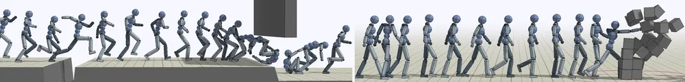
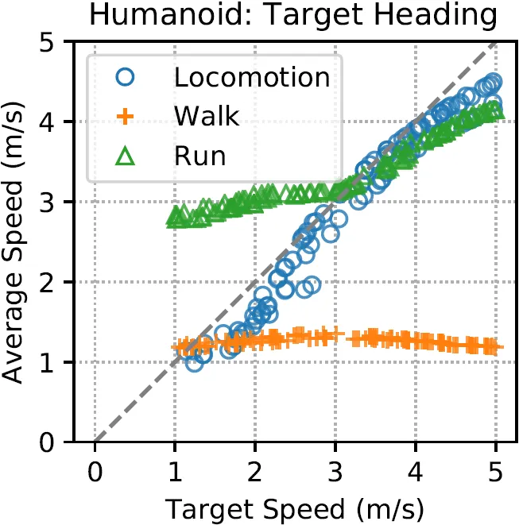
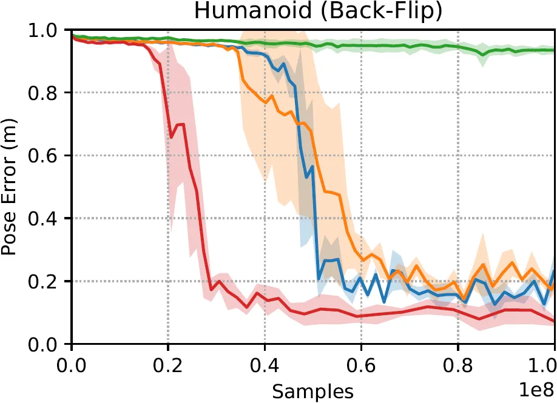
동작 방식. 한 스텝의 보상은 과제 보상과 스타일 보상의 선형 합이고, 모든 과제에서 두 가중치는 0.5다(식 4, §8.2). 과제 보상 $r^G$는 목표 $g$를 보고, 스타일 보상 $r^S$는 상태 전이만 본다.
$$ r_t = w^G\, r^G(s_t, a_t, s_{t+1}, g) + w^S\, r^S(s_t, s_{t+1}) $$
(1) 관찰만으로 하는 모방. 모션 캡처에는 행동이 없다. 그래서 판별기는 상태–행동 쌍 $D(s, a)$ 대신 상태 전이 $D(s, s')$를 본다(§5.1). 이 변형은 Torabi 외(arXiv:1807.06158)를 따른 것이고, 바탕인 GAIL(generative adversarial imitation learning)은 강화학습 R.17에 있다. 시연자가 사람처럼 캐릭터와 다른 몸이면, 캐릭터가 똑같이 낼 수 없는 전이가 데이터에 섞일 수 있다. 저자는 그래도 판별기가 효과적인 목적이 된다고 보였다.
(2) 최소제곱 판별기. 교차 엔트로피 판별기는 시그모이드가 포화하면 기울기가 사라져 정책 학습을 방해한다(§5.2). 그래서 AMP는 최소제곱 GAN(LSGAN, least-squares generative adversarial network)을 따른다(arXiv:1611.04076). 데이터 전이에는 +1을, 정책 전이에는 −1을 최소제곱으로 회귀한다. 이 목적은 두 전이 분포 사이의 Pearson $\chi^2$ 발산을 줄이고, GAIL의 교차 엔트로피 목적은 Jensen–Shannon 발산을 줄인다(§4.2, §5.2). 스타일 보상(I.7의 식)은 판별기 출력을 0과 1 사이로 옮긴 것이다. $D = 1$에서 1로 가장 크고, $D \le -1$이거나 $D \ge 3$이면 0이다.
(3) 기울기 벌점. 판별기가 데이터 위에서 0이 아닌 기울기를 내면, 정책이 데이터 다양체에 수렴하지 않고 지나쳐 진동한다(§5.4, Mescheder 외 2018). 그래서 데이터 표본에서 판별기 입력에 대한 기울기 크기를 벌한다. 판별기 목적 전체는 아래와 같고(식 8), $w^{gp} = 10$이다(§8.1). 벌점은 전체 상태가 아니라 판별기 특징 $\phi$에 대해 계산한다.
$$ \min_D\; \mathbb E_{\mathcal M}\big[(D(\phi) - 1)^2\big] + \mathbb E_{\pi}\big[(D(\phi) + 1)^2\big] + \frac{w^{gp}}{2}\, \mathbb E_{\mathcal M}\big[\|\nabla_\phi D(\phi)\|^2\big], \quad \phi = (\Phi(s), \Phi(s')) $$
(4) 판별기 특징. 특징 사상 $\Phi(s)$에는 뿌리의 선속도와 각속도, 관절별 국소 회전과 속도, 손발 끝점의 3D 위치가 들어간다(§5.3). 뿌리는 골반이다. 뿌리 속도와 끝점 위치는 캐릭터 국소 좌표에서 잰다. 원점은 뿌리이고, x축은 몸이 향한 방향, y축은 위쪽이다. 과제 특징은 넣지 않으므로, 같은 데이터로 학습한 사전을 다른 과제에도 쓸 수 있다.
(5) 정책과 학습. 정책은 위상 변수나 목표 자세 없이 몸 상태와 목표 $g$만 보고, 관절 PD(proportional-derivative) 목표를 낸다(§6.1). 정책과 가치 함수는 PPO로 갱신한다. 판별기는 데이터와 재생 버퍼에서 전이를 256개씩 뽑아 갱신한다(알고리즘 1, 표 4). 재생 버퍼(크기 10⁵)에는 지난 반복의 정책 궤적이 쌓이고, 저자는 이것이 판별기의 최신 정책 과적합을 막는다고 적는다(§6.3). 기준 상태 초기화는 데이터의 모든 클립에서 시작 상태를 뽑는다. 조기 종료는 발 외의 몸이 땅에 닿으면 걸고, 구르기와 일어나기처럼 접촉이 많은 과제에서는 끈다.
(6) 캐릭터와 과제. 캐릭터는 34자유도 휴머노이드, 59자유도 T-Rex, 64자유도 개다(§7). 과제는 목표 방향(1–5 m/s)·목표 위치·축구공 드리블·표적 치기·장애물 통과의 다섯이다. 장애물 통과는 장애물 코스와 디딤돌의 두 환경에서 학습했다(§7). 장애물 과제의 정책은 앞 10 m를 100점으로 잰 1D 높이 지도를 더 본다(부록 A). 시뮬레이터는 Bullet(1.2 kHz)이고 정책은 30 Hz로 돈다(§8.1).
결과. 과제 수익은 에피소드의 최소를 0, 최대를 1로 정규화했고, seed 3개 × 에피소드 32개의 평균이다(원문 표 1). ± 뒤 값의 정의는 원문에 없다. 데이터 크기는 원문 표 2에서 옮겨 합쳤다.
| 과제 | 데이터 (길이 s · 클립 · 사람) | 과제 수익 |
|---|---|---|
| 휴머노이드 목표 방향 | Locomotion (434.1 · 56 · 8) | 0.90 ± 0.01 |
| 휴머노이드 목표 방향 | Walk (229.6 · 9 · 5) | 0.46 ± 0.01 |
| 휴머노이드 목표 방향 | Run (204.4 · 47 · 3) | 0.63 ± 0.01 |
| 과제 | 데이터 (길이 s · 클립 · 사람) | 과제 수익 |
|---|---|---|
| 휴머노이드 목표 방향 | Stealthy (136.5 · 3 · 1) | 0.89 ± 0.02 |
| 휴머노이드 목표 방향 | Zombie (18.3 · 1 · 1) | 0.94 ± 0.00 |
| 휴머노이드 목표 위치 | Locomotion | 0.63 ± 0.01 |
| 휴머노이드 목표 위치 | Zombie | 0.50 ± 0.00 |
| 휴머노이드 장애물 | Run + Leap + Roll (22.1 · 10 · 7) | 0.27 ± 0.10 |
| 휴머노이드 디딤돌 | Cartwheel (13.6 · 3 · 1) | 0.43 ± 0.03 |
| 휴머노이드 디딤돌 | Jump (28.6 · 10 · 4) | 0.56 ± 0.12 |
| 휴머노이드 드리블 | Locomotion | 0.78 ± 0.05 |
| 휴머노이드 드리블 | Zombie | 0.60 ± 0.04 |
| 휴머노이드 치기 | Walk + Punch (247.8 · 15 · 9) | 0.73 ± 0.02 |
| T-Rex 목표 위치 | Locomotion (10.5 · 5 · 1) | 0.36 ± 0.03 |
같은 과제도 데이터만 바꾸면 스타일이 바뀐다. 목표 방향의 수익 차이에는 스타일과 함께 과제 조건의 차이가 섞여 있다. Stealthy와 Zombie는 목표 속도를 1 m/s로 고정했고(§7), Walk만이나 Run만 담은 데이터로는 목표 속도 범위의 한쪽을 따르지 못했다(그림 4). Locomotion 데이터로 학습한 정책은 약 1 m/s에서 걷고, 약 2.5 m/s에서 조깅으로, 약 4.5 m/s에서 빠른 달리기로 바꾼다. 회전할 때 몸을 안쪽으로 기울이고, 크게 방향을 틀기 전에 속도를 줄이는 행동도 저절로 나왔다(§8.2). 치기 데이터에는 걷는 클립과 치는 클립만 있고 걸어가 치는 클립은 없다. 정책은 멀면 걷고 가까우면 치는 순서를 스스로 익혔다. 일어나기 클립을 더하면 넘어진 뒤 일어나 과제를 이었고, 앞으로 넘어질 때는 데이터에 없는 구르기로 몸을 말아 더 빨리 일어났다(§8.2).
한 클립 모방(원문 표 3)은 과제 보상 없이 스타일 보상만으로 클립 하나를 따라 한다. 자세 오차는 뿌리 기준 관절 위치 오차의 관절 평균(m)이다(식 10). AMP는 기준과 시간이 맞지 않으므로, 두 방법 모두 DTW(dynamic time warping)로 시간을 맞춘 뒤 쟀다. 에피소드는 최대 20 s이고, seed 3개 × 에피소드 32개의 평균이다.
| 휴머노이드 동작 | 데이터 길이 (s) | DeepMimic식 추종 (m) | AMP (m) |
|---|---|---|---|
| 뒤공중제비 | 1.75 | 0.076 ± 0.021 | 0.150 ± 0.028 |
| 옆돌기 | 2.72 | 0.039 ± 0.011 | 0.067 ± 0.014 |
| 기어가기 | 2.93 | 0.044 ± 0.001 | 0.049 ± 0.007 |
| 춤 | 1.62 | 0.038 ± 0.001 | 0.055 ± 0.015 |
| 앞공중제비 | 1.65 | 0.278 ± 0.040 | 0.425 ± 0.010 |
| 조깅 | 0.83 | 0.029 ± 0.001 | 0.056 ± 0.001 |
| 점프 | 1.77 | 0.033 ± 0.001 | 0.083 ± 0.022 |
| 구르기 | 2.02 | 0.072 ± 0.018 | 0.088 ± 0.008 |
| 달리기 | 0.80 | 0.028 ± 0.002 | 0.075 ± 0.015 |
| 회전 | 1.00 | 0.063 ± 0.022 | 0.047 ± 0.002 |
| 옆 공중제비 | 2.44 | 0.191 ± 0.043 | 0.124 ± 0.012 |
| 회전 발차기 | 1.28 | 0.042 ± 0.001 | 0.058 ± 0.012 |
| 걷기 | 1.30 | 0.018 ± 0.005 | 0.030 ± 0.001 |
| 좀비 걸음 | 1.68 | 0.049 ± 0.013 | 0.058 ± 0.014 |
같은 표의 T-Rex 두 동작과 개 네 동작(구보·측대보·회전·속보)도 모두 추종의 오차가 작다. 이 여섯 가운데 추종 대비 AMP의 오차가 가장 크게 벌어진 것은 T-Rex 방향 바꾸기(0.098 대 0.284 m)와 개 회전(0.026 대 0.086 m)이다. 스무 동작 가운데 AMP의 오차가 더 작은 것은 휴머노이드의 회전과 옆 공중제비 둘뿐이다. 앞공중제비에서 AMP는 도는 대신 앞으로 발을 끌며 넘어지지 않는 국소 최적에 빠졌다(§8.4). 저자가 내세우는 결과는 수치가 아니라, 동작마다 보상을 짜지 않고도 비슷한 품질을 냈다는 점이다.
한계. 저자가 밝힌 것은 넷이다(§9, §8.4). 첫째, 많은 GAN 기법처럼 모드 붕괴에 취약하다. 다양한 클립을 주면 정책이 일부 행동만 따라 하고, 과제에 더 나은 다른 행동을 무시하기 쉽다. 둘째, 동작 사전을 정책마다 처음부터 학습한다. 판별기 입력에 과제 정보는 없지만, 판별기가 보는 정책 표본이 한 과제에서 나오므로 과제 의존성이 스며들 수 있다. 셋째, 실험이 시간 순서의 조합(걸어간 뒤 치기)에 치우쳤다. 두 기술을 동시에 쓰는 공간 조합은 부록 D에서 일부만 보였다. 넷째, 앞공중제비처럼 국소 최적에 빠지는 동작이 있다. 기준과 시간이 맞지 않아, 추종처럼 기준에서 벗어나면 끝내는 조기 종료로 막을 수 없다(§8.4). 데이터를 키울 때의 모드 붕괴는 SONIC 서론의 지적으로 I.0에 있다. ASE는 과제마다 처음부터 학습해 걷기 같은 공통 행동을 매번 다시 배우는 것을 이 계열의 약점으로 꼽았다(ASE §2). 휴머노이드 로봇에서 AMP를 비교한 두 보고는 AMP에 불리하다. ExBody와 PHP(Perceptive Humanoid Parkour)의 AMP 비교는 Planner B.16.6의 두 카드에 있다. ExBody 카드에 없는 결과가 둘 있다. AMP 보상을 더하면 에피소드 길이와 몸통 기울기 추종은 나아졌지만 선속도 추종이 크게 나빠졌다. AMP 보상만으로 정규화 항을 대신한 판은 실물에 옮길 수 없는 고주파 떨림이 생겼다(ExBody §IV, 표 IV). PHP 저자는 AMP의 성적이 구현 세부와 조정에 크게 좌우될 수 있다고 덧붙였다(PHP 부록 C2).
travplan에 주는 의미. AMP의 보상 분해로 보면 TP-0066 후보 채점의 어느 항이 손으로 짠 스타일인지 드러난다. scripts/rl_finetune_planner_d.py의 과제 쪽 항은 진행·GT(ground truth) cost·치명이고, 가중은 차례로 1.0·2.0·5.0이다. 스타일 쪽은 정규화한 twist 가속의 제곱 평균에 0.02를 곱한 부드러움 항과, 시연 쪽으로 당기는 모방 손실(λ = 0.5)이다(Planner B.15.3).
AMP식으로 바꾸면 부드러움 항 자리에 판별기 점수가 들어간다. 데이터는 Planner D가 이미 쓰는 시연, 곧 Guidance + MPPI가 최적화한 4초 제어열이다(Planner B.8.3). 다만 그 판별기가 배우는 스타일은 사람다운 주행이 아니라 MPPI가 낸 twist의 모양이다. 승차감이나 보행자가 읽기 쉬운 움직임을 바란다면, 사람이 조종한 배달로봇 로그(Planner B.6d의 MIMIC)가 먼저 있어야 한다.
판별기를 들인다면 AMP의 설계 둘을 따른다. 특징에는 twist와 그 변화율을 넣는다. AMP에서는 속도 특징을 빼자 구르기를 배우지 못했다(§8.5). TravMap 같은 과제 특징은 뺀다(§5.3). 지형을 보는 판별기는 시연이 어디로 갔는지까지 배워, 스타일 점수가 치명 셀 판정과 섞인다. 학습한 비용을 안전 판정과 떼어 두라는 강화학습 R.17의 결론과 같은 이유다.
TP-0066은 4초 후보를 통째로 채점하므로, 판별기도 전이 한 쌍보다 후보 구간 전체를 보는 편이 맞는다. MimicKit의 AMP 기본 설정이 판별기에 10프레임을 주는 것과 같은 방향이다. 여기까지는 가설이고 재지 않았다.
그림 5는 채택 판정의 함정을 보인다. 동작 데이터 없이 과제 보상만 쓴 정책이 장애물 과제에서 AMP보다 높은 수익을 냈다(아래 토글). 스타일 항이 과제를 깎을 수 있으므로, CLAUDE.md의 2층 게이트와 치명 실패 규칙(하나라도 늘면 기본값으로 채택하지 않는다)으로 판정한다.
버전 주의. arXiv v1(2021-04-05)과 v2(2022-05-12)는 키워드 줄만 다르다. arXiv 목록 페이지의 초록에는 본문 초록의 장애물 코스 예시 문장이 빠져 있다.
표 4·5의 PPO 자르기 문턱은 arXiv판이 0.02, 프로젝트 페이지의 학회지판 PDF가 0.2다. 원 코드의 AMP 설정(data/agents/ct_agent_humanoid_amp*.txt의 RatioClip)도 0.2다.
상태·행동·망(§6.1, §6.2). 정책 상태는 뿌리 기준 링크별 상대 위치, 링크 회전, 링크 선속도와 각속도이고, 모두 캐릭터 국소 좌표에서 잰다. 회전은 법선과 접선 두 3D 벡터로 쓰는 6D 표현이다. 행동은 관절 PD 목표다. 구면 관절은 3D 지수 사상 $q$로 내고(회전축 $q / \|q\|$, 회전각 $\|q\|$), 회전 관절은 각 하나로 낸다. 정책 평균은 은닉층 1024·512개의 완전 연결망이고, 대각 공분산은 손으로 정해 학습 내내 고정한다. 가치 함수와 판별기도 같은 꼴의 별도 망이다.
하이퍼파라미터(표 4, 부록 B). SGD는 stochastic gradient descent, GAE는 generalized advantage estimation, TD는 temporal difference다.
| 항목 | 값 | 항목 | 값 |
|---|---|---|---|
| 과제 · 스타일 · 기울기 벌점 가중 | 0.5 · 0.5 · 10 | 할인율 (한 클립 · 과제) | 0.95 · 0.99 |
| 갱신당 표본 · 묶음 · 판별기 묶음 | 4,096 · 256 · 256 | SGD 모멘텀 · GAE(λ) · TD(λ) | 0.9 · 0.95 · 0.95 |
| 정책 학습률 (한 클립 · 과제) | 2×10⁻⁶ · 4×10⁻⁶ | 판별기 학습률 · 재생 버퍼 | 10⁻⁵ · 10⁵ |
| 가치 학습률 (한 클립 · 과제) | 10⁻⁴ · 2×10⁻⁵ | PPO 자르기 문턱 | arXiv판 0.02, 학회지판 0.2 |
저자는 한 클립 모방에서 할인율을 0.95로 낮추면 기준 동작을 더 가깝게 따른다고 적는다. 과제가 있는 실험에는 모두 0.99를 쓴다. 드리블과 치기처럼 긴 계획이 필요할 수 있어서다.
과제 보상(부록 A). 과제 보상은 과제마다 짧은 식이다. 목표 방향은 질량 중심 속도를 목표 방향 $d^*$에 투영해 목표 속도 $v^*$와 비교한다.
$$ r^G_t = \exp\left(-0.25\,\left(v^* - d^* \cdot \dot x^{com}_t\right)^2\right) $$
목표 위치는 거리 항(0.7)과 1 m/s 이상으로 다가가는 속도 항(0.3)의 합이다. 드리블은 공에 다가가기·공 곁에 있기·공을 목표 쪽으로 굴리기·공을 목표에 두기의 합이고, 가중은 차례로 0.1·0.1·0.3·0.5다. 치기는 맞힌 뒤에는 1이다. 표적 1.375 m 안에서는 끝점 위치와 끝점 속도 항을, 그 밖에서는 목표 위치 꼴 항을 준다. 장애물은 목표 방향 보상을 앞 방향으로 고정해 쓴다.
… 이 토글의 나머지 블록 8개(문단·식·그림)는 대시보드 리서치 탭의 "자세히: AMP의 방법과 수식" 토글에 있다.
이어진 연구. 둘째 한계(과제마다 처음부터 학습)는 같은 1저자의 ASE가 겨냥했다. 카드는 Planner B.16.1에 있고, 같은 소절에 CALM과 PACER(Trace and Pace)가 있다. 추종 보상의 보조 항으로 남은 예는 PHC(I.7)와 HumanX(Planner B.16.6)다. 로봇 쪽 갈래는 셋이다. AMP for hardware는 Controller F.6과 Planner B.16.2에, 스타일마다 판별기를 둔 Multi-AMP는 Planner B.14.4에 있다. 인식 휴머노이드의 스타일 보상은 인식 A.8에 있다. 판별기의 다른 약점을 고친 그래픽스 후속은 이 탭에 있다. ADD(I.17)는 손으로 가중한 추종 보상을 오차 벡터만 보는 판별기로 바꾸고, SMP(I.18)는 과제마다 다시 학습하는 판별기 대신 고정한 동작 diffusion 모델의 점수를 보상으로 쓴다. MimicKit(I.19)이 AMP와 두 후속을 한 틀로 다시 구현했고, G1·Go2·HighTorque Pi Plus용 AMP 설정도 담았다.
ADD(Adversarial Differential Discriminator) — 기준 동작과의 오차를 쌓은 벡터를 영벡터 하나와 가려내는 판별기가, 항별 가중을 손으로 맞추던 추종 보상을 대신한다(arXiv:2505.04961, 원제 "Physics-Based Motion Imitation with Adversarial Differential Discriminators"(v1 제목은 앞에 "ADD:"가 붙었다), Zhang·Bashkirov(공동 1저자)·Yang·Shi·Taylor·Peng, Simon Fraser University·Sony PlayStation·NVIDIA, SIGGRAPH Asia 2025 Conference Papers(홍콩, 2025-12, DOI 10.1145/3757377.3763819), 프로젝트, 영상, 코드 Apache-2.0).
한 줄 요약. 추종 보상을 항별 가중합으로 짜는 대신 오차 벡터와 영벡터를 가려내는 판별기의 출력을 보상으로 쓰면, 가중을 손으로 맞추지 않고도 DeepMimic 수준으로 동작을 따라 한다. 이중 콩 볼트(Double Kong)에서는 DeepMimic이 넘지 못한 상자를 넘었다(위치 오차 0.030 대 0.223 m, 표 1).
왜 중요한가. 강화학습 추종 보상은 관절 회전, 뿌리 위치 같은 특징마다 지수 오차 항을 두고 가중합한다(원문 식 6, 7). 저자는 항마다 가중 $w^i$와 척도 $\alpha^i$를 맞추는 일이 고되고, 동작 종류에 따라 다시 맞춰야 할 수 있다고 적는다(§5). 이 논문의 DeepMimic 기준선도 보상 매개변수가 24개다(가중 5, 척도 5, 관절 가중 14, 표 7). 저자는 Sony EVAL 로봇으로 옮길 때 이 값을 다시 맞췄다(표 10). 데이터에서 보상을 배우는 적대적 모방은 이 수작업을 던다. GAIL(generative adversarial imitation learning)과 AMP(adversarial motion priors)가 그 예이고, 둘 다 데이터 전체의 분포만 맞춘다. 그래서 정책이 동작 조각의 순서를 바꾸거나 모드를 빠뜨릴 수 있다. 사이 동작 채우기나 키프레임 후처리처럼 클립을 정확히 재현해야 하는 응용에는 이것이 약점이다(§2). 저자는 다목적 최적화의 다른 해법에도 부담이 있다고 본다. 진화 알고리즘은 해의 집단을 유지하느라 비싸다. 선호 벡터를 받는 메타 정책은 그 선호를 사람이 정해야 한다. 목적마다 비평가를 두는 방법은 척도 차이를 풀지만 비평가를 목적 수만큼 둔다. 저자는 ADD가 선호 지정과 여러 비평가 없이 균형을 잡는다고 적는다(§2). ADD는 AMP 판별기(I.16)를 분포 맞추기에서 프레임별 추종으로 돌려 쓴다. 저자는 양성 표본 하나로 학습한 판별기도 최적화를 이끈다는 것을 이 논문의 핵심 발견으로 꼽는다(§1).
초록 번역. (arXiv v2, 2025-10-04) 여러 목적을 동시에 최적화해야 하는 다목적 최적화 문제는 수많은 응용에 널리 퍼져 있다. 기존 다목적 최적화 방법은 하나의 결합 목적을 세우려고 손으로 조정한 집계 함수에 기대는 경우가 많다. 손으로 조정하는 이런 방법의 성능은 신중한 가중치 선택에 크게 좌우되고, 그 선택은 시간이 많이 드는 고된 과정이다. 같은 한계가 물리 시뮬레이션 캐릭터를 위한 강화학습 기반 동작 추종에서도 나타난다. 이 분야는 충실도 높은 결과를 얻으려고 정교하게 짠 보상 함수를 흔히 쓴다. 이런 해법은 분야 지식과 상당한 수동 조정을 요구할 뿐 아니라, 만들어진 보상 함수를 다양한 기술에 쓰는 것도 제한한다. 이 간극을 메우려고, 우리는 동작 추종을 포함한 여러 다목적 강화학습 과제에 폭넓게 쓸 수 있는 새로운 적대적 다목적 최적화 기법을 제시한다. 우리가 제안하는 적대적 차분 판별기(ADD)는 양성 표본을 하나만 받는데도 최적화 과정을 효과적으로 이끈다. 우리는 이 기법이 손으로 설계한 보상 함수 없이도 캐릭터가 여러 곡예적이고 민첩한 행동을 가깝게 재현하게 하며, 최신 동작 추종 방법과 견줄 만한 품질을 낸다는 것을 보인다. 코드와 결과는 프로젝트 페이지에 있다.
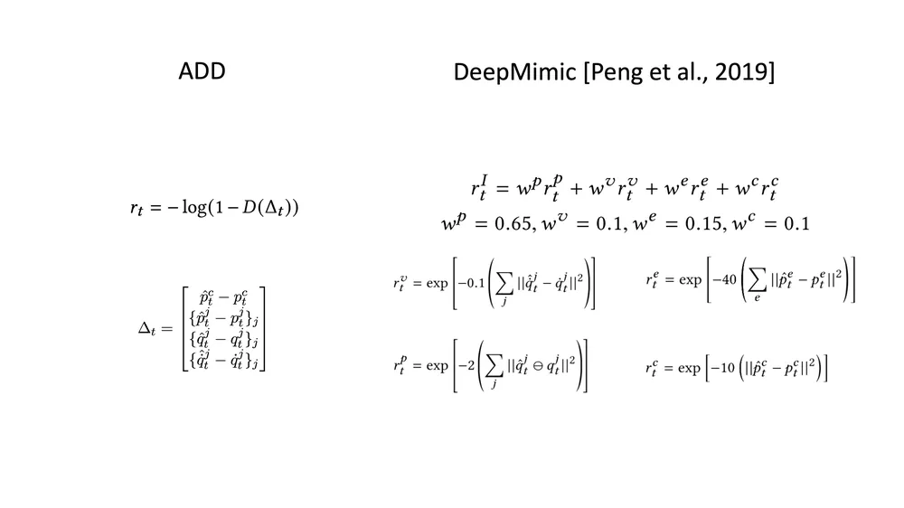
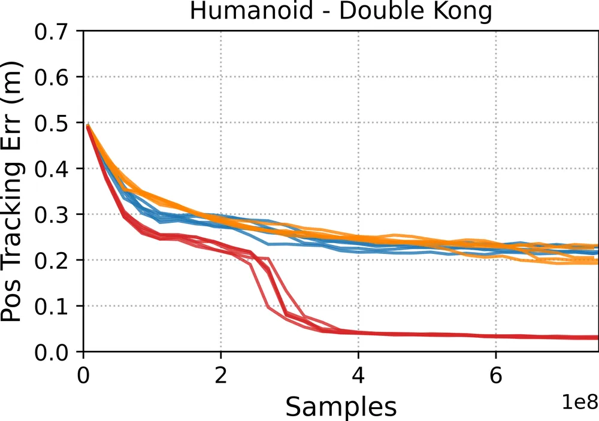
동작 방식. 세 단계다.
(1) 오차를 벡터로 모은다. 손실 $n$개를 가중합하지 않고 차분 벡터 $\Delta = (l^1(\theta), \dots, l^n(\theta))$로 이어 붙인다(§4). 동작 추종에서는 기준 상태와 정책 상태에서 같은 특징을 뽑아 뺀 $\Delta_t = \phi(\hat s_t) \ominus \phi(s_t)$가 이 벡터다(§5.1). 특징은 뿌리의 위치·회전·속도와 관절의 위치·회전·속도다(토글).
(2) 영벡터와 가려낸다. 판별기 $D(\Delta)$는 영벡터를 양성, 정책이 만든 $\Delta$를 음성으로 가린다. AMP(I.16)의 최소제곱 손실 대신 표준 GAN(generative adversarial network)의 로그 손실을 쓴다(식 8). 그대로 두면 $D$가 영점에서만 1이고 나머지에서 0인 델타 함수로 수렴할 수 있고, 그러면 정책이 받는 기울기가 정보를 잃는다(§4). 그래서 정책 상태 분포 $p(s \mid \pi)$에서 뽑은 음성 표본 위에 기울기 벌점(GP, gradient penalty)을 건다(식 9). AMP는 같은 벌점을 데이터 쪽 양성 표본에 걸었는데, ADD의 양성은 점 하나라 음성 쪽으로 옮겼다(§5).
$$ \max_D \; \log D(\mathbf 0) + \mathbb E_{p(s \mid \pi)}\big[\log(1 - D(\Delta))\big] - \lambda^{GP}\, \mathbb E_{p(s \mid \pi)}\Big[\big\| \nabla_\phi D(\phi)\big|_{\phi = \Delta} \big\|_2^2\Big] $$
(3) 판별기 출력이 보상이다. 정책 보상은 $r_t = -\log(1 - D(\Delta_t))$이다(식 10). 정책은 PPO로, 가치 함수는 시간차 목표 TD(λ)로 학습한다. 판별기는 같은 경험 버퍼에서 뽑은 미니배치로 함께 갱신한다(§6.3, 알고리즘 1). 정책은 $\Delta$를 0으로 밀어 판별기를 속이려 한다. 판별기는 정책이 아직 줄이지 못한 목적의 조합으로 주의를 옮긴다(§4). 기울기 $\nabla_\Delta D$가 목적별 가중 노릇을 한다(부록 A.2, 토글의 그림 11).
과제 목적도 같은 벡터에 넣는다. 조향 과제는 목표 속도·방향 오차를 $\Delta$ 끝에 붙인다(부록 B.6). Walker와 Go1은 기준 동작 없이, 과제가 정한 목표값과의 차이로 $\Delta$를 만든다(§7.1). Walker의 $\Delta$는 몸통 높이, 몸통 각의 코사인, 수평 속도가 목표값(1.2, 1, 8.0)에서 벗어난 세 성분이다. 저자는 이 값이 조정할 매개변수가 아니라 문제 정의라고 적는다(부록 C.1).
결과. 동작 추종 평가는 모두 Isaac Gym 시뮬레이션이다(부록 B.1). 위치 오차는 뿌리 기준 관절 위치 오차와 뿌리 전역 위치 오차를 (관절 수 + 1)로 평균한 값이다(식 12, m). 관절 속도 오차는 떨림의 지표로 쓴다(§6.4). 공정한 비교를 위해 DeepMimic의 자세 오차 종료를 끄고, 몸이 땅에 잘못 닿을 때만 에피소드를 끝냈다. 두 기준선은 DeepMimic·AMP 원저자가 공개하고 조정한 코드로 돌렸다. AMP는 추종용이 아니지만 ADD와 같은 적대적 틀이라 함께 비교했다(§6.4).
표 1(원문 표 1, v2). 대상은 28자유도 사람 캐릭터다. seed 5개의 평균 ± 표준편차이고(LAFAN1 부분집합은 계산 비용 때문에 1개), 모델마다 시험 에피소드 4,096개다.
| 기술 | 길이 (s) | 위치 오차 AMP (m) | DeepMimic (m) | ADD (m) | 관절 속도 오차 AMP (rad/s) | DeepMimic (rad/s) | ADD (rad/s) |
|---|---|---|---|---|---|---|---|
| 달리기(Run) | 0.80 | 0.163 ± 0.008 | 0.013 ± 0.002 | 0.165 ± 0.017 | 2.811 ± 0.048 | 0.584 ± 0.054 | 0.478 ± 0.007 |
| 조깅(Jog) | 0.83 | 0.120 ± 0.007 | 0.021 ± 0.000 | 0.024 ± 0.004 | 2.017 ± 0.052 | 0.575 ± 0.007 | 0.507 ± 0.010 |
| 옆 공중제비(Sideflip) | 2.44 | 0.387 ± 0.011 | 0.138 ± 0.004 | 0.145 ± 0.006 | 2.276 ± 0.014 | 1.118 ± 0.034 | 1.350 ± 0.049 |
| 기어가기(Crawl) | 2.93 | 0.050 ± 0.006 | 0.027 ± 0.000 | 0.028 ± 0.002 | 0.646 ± 0.089 | 0.430 ± 0.006 | 0.283 ± 0.002 |
| 구르기(Roll) | 2.00 | 0.141 ± 0.031 | 0.115 ± 0.132 | 0.152 ± 0.005 | 1.576 ± 0.318 | 0.994 ± 0.051 | 1.330 ± 0.101 |
| 이중 콩 볼트(Double Kong) | 5.17 | 0.214 ± 0.014 | 0.223 ± 0.006 | 0.030 ± 0.001 | 1.309 ± 0.043 | 0.784 ± 0.013 | 0.473 ± 0.004 |
| 엎드려 일어나기(Getup Facedown) | 3.03 | 0.096 ± 0.018 | 0.023 ± 0.001 | 0.022 ± 0.001 | 0.838 ± 0.029 | 0.433 ± 0.008 | 0.325 ± 0.005 |
| 회전 발차기(Spinkick) | 1.28 | 0.064 ± 0.010 | 0.078 ± 0.062 | 0.025 ± 0.000 | 1.453 ± 0.327 | 1.222 ± 0.233 | 0.774 ± 0.007 |
| 기술 | 길이 (s) | 위치 오차 AMP (m) | DeepMimic (m) | ADD (m) | 관절 속도 오차 AMP (rad/s) | DeepMimic (rad/s) | ADD (rad/s) |
|---|---|---|---|---|---|---|---|
| 옆돌기(Cartwheel) | 2.71 | 0.076 ± 0.006 | 0.144 ± 0.153 | 0.017 ± 0.000 | 0.722 ± 0.020 | 0.659 ± 0.160 | 0.317 ± 0.002 |
| 뒤공중제비(Backflip) | 1.75 | 0.267 ± 0.015 | 0.111 ± 0.054 | 0.062 ± 0.001 | 2.243 ± 0.113 | 1.103 ± 0.024 | 0.878 ± 0.013 |
| 오르기(Climb) | 9.97 | 0.185 ± 0.021 | 0.066 ± 0.004 | 0.046 ± 0.031 | 1.190 ± 0.012 | 0.567 ± 0.015 | 0.374 ± 0.071 |
| 춤 A(Dance A) | 1.62 | 0.065 ± 0.009 | 0.065 ± 0.029 | 0.028 ± 0.007 | 0.895 ± 0.108 | 0.830 ± 0.090 | 0.428 ± 0.014 |
| 걷기(Walk) | 0.96 | 0.132 ± 0.021 | 0.009 ± 0.001 | 0.009 ± 0.001 | 1.394 ± 0.123 | 0.286 ± 0.005 | 0.213 ± 0.003 |
| AMASS DanceDB | 2,804 | 0.299 ± 0.001 | 0.045 ± 0.002 | 0.044 ± 0.001 | 1.156 ± 0.009 | 0.504 ± 0.019 | 0.387 ± 0.010 |
| LAFAN1 부분집합 | 5,470 | 0.438 ± 0.000 | 0.029 ± 0.000 | 0.028 ± 0.000 | 1.302 ± 0.000 | 0.511 ± 0.000 | 0.393 ± 0.000 |
한 클립 13개 중 위치 오차는 ADD가 8개에서 가장 작거나 같았고(걷기는 0.009 m로 같다), DeepMimic은 달리기·조깅·옆 공중제비·기어가기·구르기 5개에서 작았다. 큰 데이터 둘에서는 두 방법의 위치 오차 차이가 0.001 m다. 관절 속도 오차는 15행 중 13행에서 ADD가 가장 작다.
표 2(원문 표 2). Sony EVAL 로봇(26자유도, 시뮬레이션)의 위치 오차(m). seed 3개 × 시험 에피소드 4,096개의 평균 ± 표준편차다.
| 기술 | AMP | DeepMimic | ADD |
|---|---|---|---|
| 걷기 | 0.020 ± 0.001 | 0.013 ± 0.002 | 0.036 ± 0.002 |
| 차기 | 0.030 ± 0.00 | 0.012 ± 0.000 | 0.008 ± 0.000 |
| 주먹 지르기 | 0.020 ± 0.003 | 0.007 ± 0.000 | 0.005 ± 0.000 |
로봇 걷기에서 ADD 오차는 DeepMimic의 약 2.8배였다. 저자는 이것을 사람 달리기와 같은 뿌리 위치 문제로 본다(§6.4).
표 3(원문 표 3). 기준 동작을 따르면서 목표 방향으로 목표 속도를 내는 조향 과제다. 목표 속도 오차는 뿌리 2차원 속도와 목표 속도 벡터의 차이 노름이다. ADD는 과제 목적을 $\Delta$에 붙이고, AMP와 DeepMimic은 추종 보상과 과제 보상을 0.5씩 더했다(부록 B.6).
| 방법 | 위치 오차 달리기 (m) | 위치 오차 걷기 (m) | 목표 속도 오차 달리기 (m/s) | 목표 속도 오차 걷기 (m/s) |
|---|---|---|---|---|
| AMP | 0.188 ± 0.001 | 0.117 ± 0.001 | 0.810 ± 0.015 | 0.374 ± 0.042 |
| DeepMimic | 0.048 ± 0.000 | 0.034 ± 0.003 | 0.882 ± 0.038 | 0.411 ± 0.049 |
| ADD | 0.029 ± 0.001 | 0.024 ± 0.001 | 0.803 ± 0.009 | 0.274 ± 0.003 |
조향을 섞으면 ADD가 네 칸 모두에서 가장 낮다. 달리기 위치 오차의 순위가 한 클립 추종(표 1)과 뒤집힌 이유는 논문이 설명하지 않고, 이 표의 seed 수도 적혀 있지 않다.
추종 밖의 과제(§7.2). DeepMind Control Suite의 2차원 Walker에서 정규화한 최종 수익은 ADD 0.691 ± 0.053, 손으로 짠 보상 0.705 ± 0.051이다(seed 10개, 그림 7). Go1 보행(legged_gym 보상, Rudin 외, 보행 갤러리 G.4)에서는 선속도 명령 추종이 조금 나빴다. 몸통 roll·pitch 각속도와 관절 가속은 더 낮았다(seed 5개, 그림 8). 정성적으로는 발을 더 들고 보폭이 긴 걸음이 나왔다고 적는다(그림 6). 조향 과제 정책에 학습 때 없던 최대 300 N의 무작위 외력을 뿌리에 주면, ADD의 성능 저하는 DeepMimic과 비슷했다(부록 B.7, 그림 15).
한계. 저자가 밝힌 것(§6.4, §9):
우리가 보기에:
뒤 연구가 보고한 것:
travplan에 주는 의미. ADD가 들어갈 자리는 travplan의 학습 쪽 보상 둘이고, 치명 항은 그 밖에 남겨야 한다.
Planner D의 강화학습 후학습(TP-0066)은 후보 궤적을 진행 1.0, 비용 2.0, 치명 5.0, 부드러움 0.02의 가중합으로 채점하고 모방 정규화 0.5를 더한다(scripts/rl_finetune_planner_d.py 기본값). 학습 Controller TinyPolicy(TP-0128)는 진화 전략(ES, evolution strategies)으로 다듬는다. 그 스텝 보상은 진행 10, cost −0.5(시간 간격을 곱함), 시간 −0.02의 가중합이다. 치명·넘어짐에는 −10, 도달에는 +10을 준다(scripts/train_playground_policy.py).
ADD로 바꾼다면 진행 부족분, 국소 cost, 제어 변화율처럼 안전과 무관한 항만 $\Delta$로 모으고 양성은 영벡터로 둔다. 사람 동작 데이터는 필요 없다. Walker와 Go1처럼 과제 목표값과의 차이로 $\Delta$를 만들면 되고, Guidance + MPPI 시연과의 차이를 성분으로 더할 수도 있다. 가설이고 재지 않았다.
치명 항은 $\Delta$에 넣지 않고 고정 벌점과 종료로 남긴다. 그림 11의 반복 30,000에서 원점 쪽 쉬운 영역(x < 1.9)의 판별기 기울기는 0이었다. 치명 셀을 드물게만 밟는 정책에서는 치명 성분의 가중도 같은 식으로 0 근처로 떨어질 수 있다(가설이고 재지 않았다). travplan 게이트는 치명 실패가 하나라도 늘면 채택하지 않으므로(CLAUDE.md), 안전을 학습한 집계에 맡길 수 없다. 학습한 비용을 안전 판정과 분리하라는 강화학습 R.17의 결론과 같다.
성분 수도 설계 변수다. 저자는 사람 달리기의 부진을 뿌리 위치(성분 셋)가 고차원 $\Delta$에 묻힌 탓으로 보았다(§6.4). 같은 식으로 스칼라 하나인 진행 성분이 여러 개의 부드러움 성분 사이에서 묻힐 수 있다. 가설이고 재지 않았다.
I.11은 TinyPolicy를 학습 시뮬로 그대로 BPTT하는 길을 제안했다. ADD 보상은 $\Delta$로 미분할 수 있고, 기울기 벌점이 판별기의 경계를 매끄럽게 만든다(프로젝트 페이지). 아래 BCG는 이 보상을 미분 가능 시뮬레이션의 경로 미분에 그대로 넣었다. travplan에서도 비안전 항을 이 보상으로 바꾸면 미분 경로에 넣을 수 있지만, 치명 종료의 뜀은 여전히 경로 미분에 들어가지 않는다(I.11 장난감 (b)). 가설이고 재지 않았다.
MPPI 비용에는 쓰지 않는 쪽으로 본다. 판별기는 학습하는 정책의 오차 분포를 따라 함께 움직이는 보상이라, 매 주기 최적화만 하는 MPPI에는 짝이 없다. 가설이고 재지 않았다. 잰다면 보상만 바꾼 두 팔을 1층 스모크로 거르고, 2층 짝 비교(seed 0–9 × 오프셋 3판)로 성공과 치명을 센다. seed 사이 일관성(그림 4)은 학습 seed만 바꾼 정책 여럿의 성공률 퍼짐으로 따로 잰다.
판별기가 보는 것(§5.1). 특징 $\phi$는 뿌리의 전역 위치와 회전, 캐릭터 좌표의 관절 위치, 관절의 전역 회전, 캐릭터 좌표의 뿌리 선속도·각속도, 관절의 국소 속도다. 캐릭터 좌표는 골반이 원점이고 x축이 몸통 정면, y축이 위다. 판별기는 이 특징의 차이만 보고, 정책 상태나 기준 상태를 따로 보지 않는다.
정책(§6.1, §6.2). 상태는 뿌리 기준 링크 위치, 6차원(법선·접선) 링크 회전, 링크 선속도·각속도이고 모두 캐릭터 좌표다. 기준 동작의 목표 자세도 받아 시점을 맞춘다. 행동은 관절 PD(비례·미분) 목표이고, 구면 관절은 3차원 지수 사상, 회전 관절은 각 하나로 낸다. 정책 평균은 은닉층 1024, 512의 MLP(multilayer perceptron)이고 공분산은 손으로 정한 대각 고정값이다. 가치 함수와 판별기도 같은 구조에 출력만 하나다.
학습 설정(표 6–11). 에피소드는 기준 동작의 무작위 시점에서 시작한다(RSI(reference state initialization), I.7). 사람 캐릭터의 ADD 설정은 아래와 같다(표 6). GAE는 generalized advantage estimation이다. AMP는 벌점 계수 5.0을 쓴다(표 8).
| 항목 | 값 | 항목 | 값 |
|---|---|---|---|
| 기울기 벌점 계수 | 1 (오르기만 0.1) | 미니배치 | 4,096 × 4 |
| 학습률 (정책·가치 · 판별기) | 1×10⁻⁴ · 5×10⁻⁴ | 경험 버퍼 | 4,096 × 32 |
| 할인율 | 0.99 | GAE와 TD의 λ | 0.95 |
| PPO 자르기 | 0.2 |
DeepMimic 보상은 다섯 항마다 가중과 척도가 따로 있고, 관절 가중 14개가 더 있다(표 7). EVAL 로봇으로 옮길 때 가중과 척도를 다시 맞췄다(표 10).
| 항 | 자세 | 관절 속도 | 뿌리 속도 | 끝점 | 질량 중심 |
|---|---|---|---|---|---|
| 가중 (사람) | 0.5 | 0.1 | 0.15 | 0.1 | 0.15 |
| 척도 (사람) | 0.25 | 0.01 | 5 | 1 | 10 |
| 가중 (EVAL) | 0.5 | 0.05 | 0.5 | 0.15 | 0.1 |
| 척도 (EVAL) | 1 | 0.01 | 10 | 1 | 10 |
… 이 토글의 나머지 블록 17개(문단·식·그림)는 대시보드 리서치 탭의 "자세히: ADD의 방법과 수식" 토글에 있다.
이어진 연구.
SMP — 동작 데이터로 한 번 학습해 고정한 diffusion 모델이, 정책의 최근 동작에 더한 잡음을 얼마나 맞히는지로 스타일 보상을 매긴다(arXiv:2512.03028, 원제 "SMP: Reusable Score-Matching Motion Priors for Physics-Based Character Control", Mu·Zhang·Shi(공동 1저자)·Yang·Matsumoto·Imamura·Tevet·Guo·Taylor·Shu·Xi·Peng, Simon Fraser University·Sony Interactive Entertainment·Stanford University·Snap Inc.·National Research Council Canada·NVIDIA, ACM TOG 45(4)·SIGGRAPH 2026(DOI), 프로젝트, 영상, 코드 MimicKit, Apache-2.0).
한 줄 요약. SMP(Score-Matching Motion Priors)는 판별기 대신 고정한 동작 diffusion 모델의 잡음 예측 오차를 스타일 보상으로 써서, 한 번 만든 동작 사전을 원 데이터 없이 여러 과제와 스타일에 다시 쓴다. LAFAN1 달리기 데이터로 만든 사전 하나로 피구 정책을 학습하면 과제 수익이 0.733이었다. AMP는 0.233, 판별기를 고정한 AMP는 0.204였다(표 2).
왜 중요한가. AMP(adversarial motion priors, I.7, 카드는 I.16)는 판별기를 정책과 함께 학습한다. 새 정책마다 판별기를 다시 학습해야 하고, 그러려면 기준 동작 데이터를 계속 들고 있어야 한다(§1). AMP 논문도 사전을 정책마다 처음부터 학습한 것을 한계로 적었다. 사전이 대체로 과제와 무관하니 원리상 다른 정책과 과제에 옮겨 쓸 수 있어야 한다는 것이다(AMP §9). SMP는 이 재사용을 목표로 두 조건을 세웠다. 사전은 원 데이터 없이 보상 노릇을 해야 한다(모듈성). 그리고 다시 학습하지 않고 여러 과제와 정책에 쓰여야 한다(재사용성, §1). 적대적 모방의 판별기가 수렴하면 다시 쓸 보상을 남기지 않는다는 일반론은 강화학습 R.17에 있다. §2는 diffusion 모델을 제어에 쓴 연구를 둘로 나눈다. 운동학 Planner로 쓰는 쪽(CLoSD는 I.13, PARC는 Planner B.16.1)과 정책 자체로 쓰는 쪽(Diffusion Policy는 딥러닝 L.10)이다. SMP는 diffusion 모델을 보상 모델로 쓴다는 점에서 둘과 다르다(§2, §4). 가까운 선행 연구는 세 갈래다(§2). 첫째는 diffusion 모델을 GAIL(generative adversarial imitation learning)의 판별기 자리에 넣은 DiffAIL(arXiv:2312.06348)과 DRAIL(arXiv:2405.16194)이다. DIFO(arXiv:2410.05429)도 같은 갈래다. 이들은 여전히 적대적으로 학습하고, 대개 정책을 학습하는 동안 diffusion 모델을 계속 고친다. 둘째는 글 조건의 이미지·영상 diffusion 모델로 정책을 이끈 Text-Aware Diffusion for Policy Learning(arXiv:2407.01903)이다. SMP 저자는 그 동작이 자주 부자연스러웠다고 적는다. 셋째이자 가장 닮은 연구는 ICLR 2025의 SMILING(arXiv:2410.13855)이다. SMILING은 VSD(variational score distillation, arXiv:2305.16213)와 비슷한 score matching 목적을 쓰지만 과제마다 diffusion 모델을 학습한다.
초록 번역. (arXiv v3, 2026-04-24) 에이전트가 자연스러운 행동을 내도록 이끄는 데이터 기반 동작 사전은 살아 있는 듯한 가상 캐릭터를 만드는 데 핵심 역할을 한다. 적대적 모방 학습은 기준 동작 데이터에서 동작 사전을 배우는 매우 효과적인 방법이었다. 그러나 적대적 사전은 몇몇 예외를 빼면 새 제어기마다 다시 학습해야 한다. 그래서 재사용성이 떨어지고, 하위 과제에 적용할 때 기준 동작 데이터를 계속 보관해야 한다. 이 연구에서 우리는 Score-Matching Motion Priors(SMP)를 제시한다. SMP는 사전학습한 동작 diffusion 모델과 SDS(score distillation sampling)를 써서, 재사용할 수 있고 과제와 무관한 동작 사전을 만든다. SMP는 어떤 제어 정책이나 과제와도 독립적으로 동작 데이터셋에서 사전학습할 수 있다. 학습이 끝난 SMP는 고정한 채, 하위 과제에서 자연스러운 행동을 내는 새 정책을 학습시키는 범용 보상 함수로 다시 쓸 수 있다. 우리는 대규모 데이터셋으로 학습한 범용 동작 사전을 여러 스타일 전용 사전으로 바꿔 쓸 수 있음을 보인다. 나아가 SMP는 서로 다른 스타일을 합성해 원 데이터셋에 없는 새 스타일을 만들 수 있다. 우리 방법은 최신 적대적 모방 학습 방법에 견줄 만한 고품질 동작을 내는, 재사용할 수 있고 모듈화된 동작 사전을 만들 수 있다. 실험에서 우리는 물리 시뮬레이션 휴머노이드 캐릭터의 다양한 제어 과제에서 SMP의 효과를 보인다. 영상은 youtu.be/jBA2tWk6vzU에 있다.
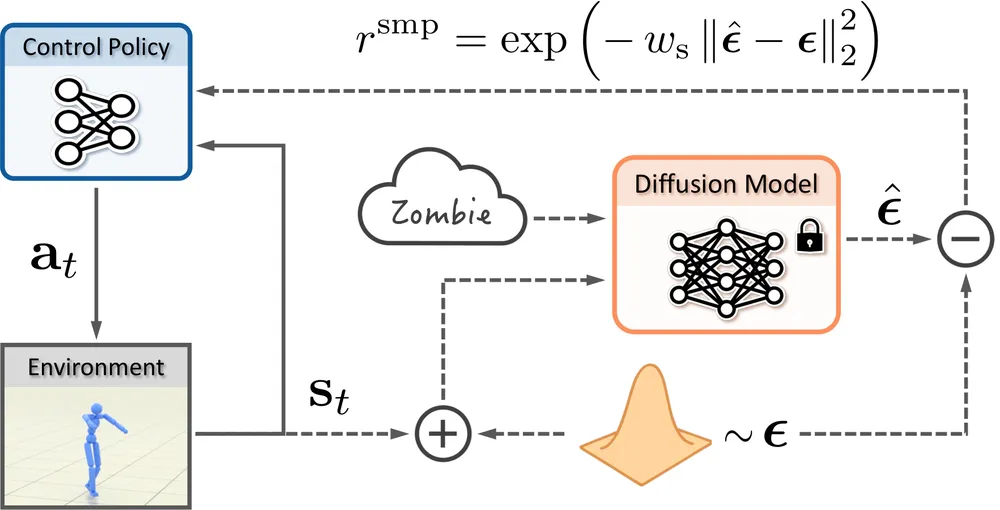
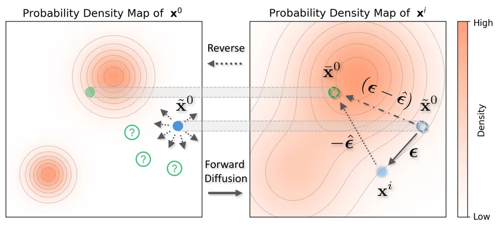
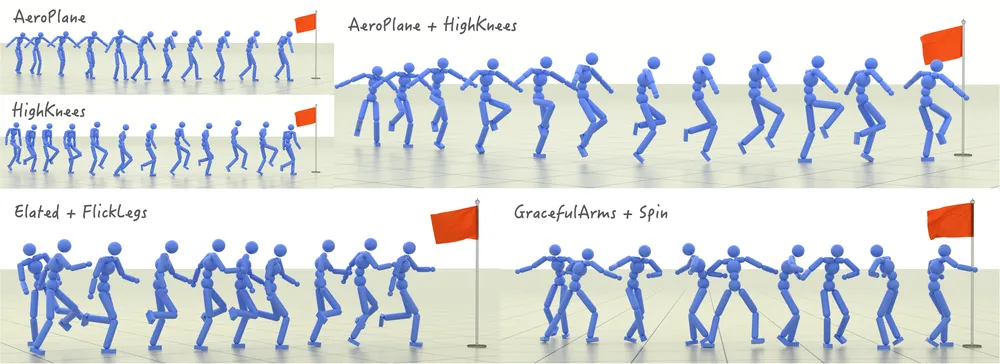
동작 방식. 이 절에서는 원문 표기를 따라 모자 $\hat\epsilon$가 diffusion 모델이 예측한 잡음이다(I.11처럼 문서 표기의 예외). 물결 $\tilde x$는 정책이 시뮬레이션에서 낸 동작이고, $\bar\alpha_i$는 잡음 단계 $i$에서 남은 신호의 분산 비율이다(배경 0.5).
(1) 사전 학습. 동작 데이터의 연속 10프레임 창 $x = (s_{t-8}, \dots, s_{t+1})$을 diffusion 모델 $f$로 배운다(§5, 부록 A). 프레임 특징은 뿌리의 선속도와 각속도, 관절 국소 회전(구면 관절은 6D), 손발 끝점의 3차원 위치다. 뿌리 속도와 끝점 위치는 캐릭터 국소 좌표로 적는다(§6.1). 잡음 단계는 50개이고 모델은 더한 잡음 $\epsilon$을 맞힌다. 정책도 과제도 보지 않는다.
(2) 보상. 정책을 학습하는 동안 매 스텝 에이전트의 최근 창 $\tilde x$에, 정해 둔 단계 $\mathbb K = \{22, 15, 8\}$마다 잡음을 더해 고정한 $f$에 넣는다. 단계마다 잡음 예측 오차를 그 단계 오차의 누적 평균 $\mu_i$로 나누고(AdaNorm, 적응 정규화), 평균해 지수로 바꾼다.
아래 식은 식 (8)에 §5.1의 정규화를 넣은 것이고, MimicKit smp_agent.py도 이렇게 계산한다. $c$는 선택적인 스타일 라벨이고, 크기 $w_s$는 과제마다 4–8이다(부록 D).
$$ r^{smp}_t = \exp\left( -\frac{w_s}{|\mathbb K|} \sum_{i \in \mathbb K} \frac{\| \hat\epsilon_i - \epsilon_i \|^2}{\mu_i} \right), \qquad \hat\epsilon_i = f\left( \sqrt{\bar\alpha_i}\, \tilde x + \sqrt{1 - \bar\alpha_i}\, \epsilon_i ,\ c \right) $$
(3) 과제와 합치기. 과제 보상과 선형으로 더한 $r_t = w^{prior} r^{smp}_t + w^{g} r^{g}_t$(식 9)를 PPO로 최대화한다. diffusion 모델은 끝까지 고정한다.
(4) 생성 시작 상태. 기준 동작의 무작위 프레임에서 시작하는 RSI(reference state initialization, I.7) 대신 같은 diffusion 모델에서 뽑은 창으로 에피소드를 시작한다. 이것이 GSI(generative state initialization)다(§5.2). 그래서 사전을 만든 뒤에는 원 데이터를 버려도 된다.
점수가 보상이 되는 길. 아래 항등식과 그 읽기는 이 문서의 정리다(원문 식 (3)과 그림 3에서 바로 나온다). 식 (3)의 잡음 섞인 표본 $x^i$와, 예측 잡음으로 되돌린 깨끗한 동작 $\bar x^0_i = (x^i - \sqrt{1-\bar\alpha_i}\,\hat\epsilon_i)/\sqrt{\bar\alpha_i}$를 함께 쓰면 다음 항등식이 나온다.
$$ \hat\epsilon_i - \epsilon_i = \sqrt{\frac{\bar\alpha_i}{1 - \bar\alpha_i}}\, \left( \tilde x - \bar x^0_i \right) $$
$\bar x^0_i$는 고정한 모델이 에이전트 동작을 데이터 쪽으로 옮겨 내놓는 가짜 목표다(그림 3의 초록 원). 그래서 SMP 보상은 DeepMimic의 지수 추종 보상(I.7)과 같은 꼴이다. 다른 점은 추종 목표가 기준 동작의 프레임이 아니라, 고정한 모델이 매 스텝 새로 만든 동작이라는 것이다. 계수 $\bar\alpha_i/(1-\bar\alpha_i)$는 신호 대 잡음비라 잡음이 작은 단계에서 크다. 그림 4에서도 잡음이 작은 단계일수록 오차가 크고, AdaNorm의 $\mu_i$가 이 크기 차이를 지운다.
SDS와 다른 점. DreamFusion(arXiv:2209.14988)의 SDS는 잔차 벡터 $w(i)(\hat\epsilon - \epsilon)$를 미분 가능한 렌더러로 역전파해 3차원 장면의 파라미터를 고친다(식 5). SMP가 쓰는 물리 시뮬레이터(Isaac Gym)는 미분하지 않는다. SMP는 잔차의 크기만 보상으로 쓰고, 원문은 그 이유를 적지 않는다. 미분하지 않는 시뮬레이터에서는 잔차의 방향을 정책까지 전할 수 없으니, 그 크기를 줄이는 행동을 PPO가 표본으로 찾는다고 읽을 수 있다. 시각 분야의 SDS는 잡음 단계를 매번 무작위로 뽑는데, RL에서는 그 무작위가 보상 분산이 되어 가치와 이점 추정을 흔든다. 그래서 단계를 고정해 평균한다. 저자는 이를 ESM(ensemble score-matching)이라 부른다(§5.1).
판별기와 다른 점. 저자의 설명은 이렇다(§3.2, §4, §8.2). 판별기는 데이터와 그때의 정책 표본만 보고 배우므로, 고정해 새 정책에 쓰면 처음 보는 입력에 엉뚱한 보상을 준다. denoiser는 모든 잡음 수준에서 데이터만으로 배운다. 잡음이 크면 섞인 분포가 공간 전체를 덮으므로, 데이터에서 먼 동작에도 믿을 만한 점수가 나온다는 것이다. 보상 모델이 정책을 따라 움직이지 않아 보상이 정상(stationary)이고, 저자는 표본 효율이 AMP보다 나은 이유의 일부를 여기서 찾는다(그림 7).
스타일 조정과 합성. 100STYLE(20시간 이상, §6.2. 데이터는 I.1)로 스타일 라벨을 조건으로 받는 모델 하나를 학습한다. 스타일 전용 사전은 CFG(classifier-free guidance, 배경 0.5)로 만든다. 식은 $f_{style} = f(x^i, \varnothing) + w_{cfg}\,(f(x^i, c) - f(x^i, \varnothing))$이다. 저자는 $w_{cfg} = 1.0$이면 대개 충분하다고 적었다(§8.1). $w_{cfg} = 1$이면 이 식은 조건부 예측 $f(x^i, c)$ 그 자체다. 새 스타일은 두 스타일의 예측을 상체와 하체 특징 마스크로 잘라 붙여 만들고(부록 E), 같은 합성 사전이 GSI의 시작 상태도 만든다.
$$ f_{comp} = M_{upper} \odot f(x^i, c_1) + M_{lower} \odot f(x^i, c_2) $$
결과. 수치와 그림 번호는 arXiv v3 기준이고, 표 2와 표 4의 값은 v1(2025-12-02)과 같다. 과제 수익은 0–1로 정규화했고, 캐릭터는 Isaac Gym의 시뮬레이션 휴머노이드다(부록 B). 한 클립 모방의 학습 곡선(그림 10)은 방법마다 seed 3개다.
| 과제 수익 (원문 표 2) | 사전 없음 | AMP | 판별기 고정 AMP | SMP |
|---|---|---|---|---|
| 조향 (LAFAN1 달리기 사전) | 0.901 ± 0.006 | 0.634 ± 0.019 | 0.243 ± 0.008 | 0.914 ± 0.006 |
| 목표 위치 (같은 사전) | 0.615 ± 0.268 | 0.737 ± 0.014 | 0.101 ± 0.012 | 0.793 ± 0.006 |
| 피구 (같은 사전) | 0.277 ± 0.046 | 0.233 ± 0.003 | 0.204 ± 0.004 | 0.733 ± 0.035 |
| 목표 속도 (걷기·조깅·달리기 3초 사전) | 0.905 ± 0.013 | 0.904 ± 0.002 | 0.158 ± 0.021 | 0.918 ± 0.002 |
| 목표 위치 과제, 100STYLE 12스타일 (원문 표 1) | AMP (스타일마다 따로 학습) | 판별기 고정 AMP | SMP (사전 하나 + CFG) |
|---|---|---|---|
| 과제 수익 평균 | 0.874 | 0.771 | 0.879 |
| 스타일 정확도 평균 | 0.962 | 0.205 | 0.962 |
| 스타일 정확도가 가장 낮은 스타일 | HandsBetweenLegs 0.690 | AeroPlane·HandsBetweenLegs 0.000 | Skip 0.646 |
| 한 클립 모방 위치 오차, m (원문 표 4) | DeepMimic | AMP | 판별기 고정 AMP | SMILING | SMP |
|---|---|---|---|---|---|
| 걷기 | 0.010 | 0.028 | 0.044 | 0.042 | 0.030 |
| 달리기 | 0.013 | 0.088 | 0.129 | 0.115 | 0.067 |
| 회전 발차기 | 0.073 | 0.049 | 0.324 | 0.088 | 0.059 |
| 옆돌기 | 0.243 | 0.043 | 0.419 | 0.104 | 0.043 |
| 뒤공중제비 | 0.073 | 0.058 | 0.272 | 0.144 | 0.069 |
| 기어가기 | 0.006 | 0.011 | 0.285 | 0.061 | 0.011 |
| 평균 | 0.070 | 0.046 | 0.246 | 0.092 | 0.046 |
물체 나르기는 과제 수익 0.909에 성공률 0.997이다. 일어나기는 0.897과 0.998이다(표 3, 비교군 없음). 스타일 정확도는 100STYLE로 학습한 스타일 분류기로 쟀다. 표 2는 과제만 잰다. 사전 없이 학습한 정책도 조향 0.901, 목표 속도 0.905로 SMP와 가깝고, 동작이 자연스러운지는 그림과 영상으로만 보였다. 과제가 있는 실험에서 동작 품질을 수치로 잰 것은 표 1의 스타일 정확도뿐이다. 피구에서 AMP는 사전 없는 정책보다도 낮았다. 저자는 기준 데이터(보행뿐)에서 먼 피하기 기술이 필요해 적대적 목적이 불안정해진 탓일 수 있다고 적었다(§8.2). AMP의 보상 가중은 0.5와 0.5로 고정했고, SMP의 가중은 과제마다 다르다(§8, 부록 D). 판별기 고정 AMP에서는 학습이 진행될수록 판별기 정확도가 떨어졌다. 저자는 정책이 판별기의 오류를 파고든 것으로 읽는다(§8.1). 표 4에서 SMP, AMP, SMILING은 DTW(dynamic time warping)로 시간을 맞춰 쟀고 DeepMimic은 자세 오차 종료를 끄고 학습했다. DeepMimic의 옆돌기 0.243 m는 종료를 끈 탓에 일부 학습이 나쁜 해로 갔기 때문이라고 저자가 적었다(§8.6). 같은 AMP의 뒤공중제비 오차가 AMP 논문 표 3에서는 0.150 m(I.7)이고 이 표에서는 0.058 m다. 두 평가가 같은 정의와 구현인지는 확인하지 못했다.
한계. 저자가 밝힌 것(§11). 모드를 좇는(mode-seeking) 목적이라 SMP로 학습한 정책도 모드 붕괴에 빠지기 쉽다. 과제에 쓸 수 있는 행동 전체가 아니라 일부 기술로 수렴하고, 데이터가 클수록 심하다. 저자는 생성 정책이나 더 세밀한 조건을 대안으로 든다. GSI가 자기 충돌 같은 잘못된 동작을 만들어 시뮬레이션을 불안정하게 할 수 있다. 잡음 단계 선택에는 정밀함과 믿음성의 맞교환이 남는다(§10). 서로 먼 스타일을 합성하면 스타일이 묽어지고, 이를 줄이는 다단계 점수 계산은 비싸다(부록 E). 그 밖에 원문 수치로 보이는 것. 학습이 AMP보다 오래 걸리고(§6.3), 실물 G1은 정성 결과뿐이다(§9). 뒤 연구가 보고한 것. Context-Aware Motion Priors(arXiv:2608.03234)는 과제와 무관한 사전을 학습 내내 똑같이 적용하는 것을 문제로 든다. 지금 상황에 맞지 않는 기준 동작이 감독을 흐리고, 기준 동작의 빈도가 치우치면 잦은 모드로 끌린다는 것이다(§1). MimicKit 저장소에 열린 SMP 보고 둘(이슈 #125, #115)은 I.19의 한계에 있다.
travplan에 주는 의미. SMP의 핵심은 시연으로 학습해 고정한 생성 모델이 지금 동작이 시연다운지를 채점하는 것이다. travplan에는 그런 모델이 이미 있다.
Planner D의 DAgger 체크포인트(planner_d_L0123_dagger.pt)는 Guidance + MPPI 시연의 4초 twist 변화율 120개를, 지도 조각과 하위 목표를 조건으로 배운 flow matching 모델이다(딥러닝 L.11). 속도장에서 데이터 예측을 얻는 환율 $\hat x_1 = x + (1-t)\,v$는 TP-0137이 Playground의 diffusion 샘플러에 이미 썼다(Planner B.15.1). 그래서 SMP식 오차를 고정한 $t$ 몇 개에서 같은 망으로 잴 수 있다.
쓸 자리는 RL 후학습(TP-0066)이다. 지금은 후보를 진행, cost, 치명, 부드러움으로 채점한다. 그리고 시연 데이터(planner_d_data_L0123.pt)에 모방 손실 λ = 0.5를 걸어 정책이 시연에서 멀어지지 않게 한다(Planner B.15.3). 고정한 DAgger 체크포인트의 SMP식 항이 손으로 짠 부드러움 항과 시연 데이터를 함께 대신할 수 있다. 가설이고 재지 않았다.
옮길 때 지킬 것이 둘이다. 첫째, 이런 사전은 시연이 어떻게 생겼는지만 안다. 시연이 가까이 가지 않은 치명 셀은 벌을 받지 않는다(강화학습 R.17의 최대 엔트로피 역강화학습 그림). 그래서 치명 cost는 손으로 정한 항으로 남기고, 채택은 CLAUDE.md의 치명 실패 규칙으로 판정한다.
둘째, 분포 맞춤은 잦은 모드로 끌린다. 급정지처럼 시연에 드문 행동일수록 사전 보상이 낮다. SMP가 물체 나르기에서 쓴 자르기 $\min(r^{smp}, \max(r^g, 0.3))$처럼 과제 보상이 사전 보상을 누르게 둔다. 이것도 가설이다.
ESM의 교훈은 TinyPolicy의 진화 전략(ES, TP-0128, Controller E.12)에 걸린다. 무작위 단계 하나로 잰 SDS 오차의 분산은 1.140, 고정 단계 평균은 9.964×10⁻⁶이었다(§10). ES는 한 세대 안의 섭동 정책들의 수익 차이로 기울기를 잰다. 그러니 확률적 보상 항을 더한다면 한 세대 안에서는 잡음 단계와 잡음 표본을 같게 둬야 한다(공통 난수). 가설이고 재지 않았다.
사람 주행 기록에서 비용을 배우게 되면(강화학습 R.17) 그 보상을 고정해 다시 쓰고 싶어진다. 그때의 꼴로는 판별기보다 여러 잡음 수준의 denoising 오차 쪽에 근거가 있다(표 1과 표 2의 판별기 고정 AMP). 원 데이터를 보관하지 않아도 된다는 장점은 travplan에서는 작다. 시연은 시뮬레이터에서 언제든 다시 만든다.
diffusion 모델(§6.2, 부록 A). Transformer 인코더 블록 2개, 머리 4개 × 64차원(내부 256차원), 파라미터 약 3M이다. 잡음 단계와 스타일 라벨은 적응 층 정규화로 넣는다. 잡음 단계는 50개이고 $\epsilon$을 예측하며, 가중치 EMA(exponential moving average)를 쓴다. 데이터에 따라 40만–80만 반복을 학습하고, RTX 4090 한 장에서 대개 5시간 안에 수렴한다.
논문은 프레임 간격을 적지 않았다. MimicKit 설정(control_freq: 30)으로는 10프레임 창이 프레임 간격 9개, 곧 0.3초를 덮는다. §3.2는 DDPM(denoising diffusion probabilistic model)의 제곱 오차 목적을 소개한다. 공개 설정의 손실은 L1(loss_type: 'l1')이다.
공개 설정의 반복 수는 40만–80만이 아니라 20만(여러 클립)과 5만(한 클립)이다. 구조는 DiT(diffusion transformer)이고 잡음 일정은 코사인(squaredcos_cap_v2)이다.
정책과 RL(§6.3, 부록 A, 표 8). 정책은 은닉 [1024, 512]의 MLP(multilayer perceptron)이고 공분산을 고정한 가우스 분포를 낸다. 상태는 링크의 위치·6D 회전·선속도·각속도(국소 좌표)이고, 위상이나 기준 상태는 넣지 않는다. 행동은 관절 PD(proportional-derivative) 목표다(구면 관절은 3차원 지수 사상). 버퍼는 1024 × 32, 미니배치는 1024 × 4다. 정책과 가치의 학습률은 1×10⁻⁴이고 γ = 0.99, SGD(stochastic gradient descent) 모멘텀은 0.9다. GAE(generalized advantage estimation)와 TD(temporal difference)의 λ는 0.95, PPO 자르기는 0.2다. Isaac Gym 환경 1,024개를 A100·H100·RTX 4090 가운데 한 장에서 돌렸고 대부분 12시간 안에 수렴했다(부록 B).
과제별 보상(부록 D).
| 과제 | 과제 보상 가중 | 사전 보상 가중 | w_s |
비고 |
|---|---|---|---|---|
| 목표 위치 | 0.7 | 0.9 | 4 | 목표까지 수평 거리의 지수 보상 |
| 조향 | 0.5 | 0.5 | 6 | 이동 방향·속도 추종과 몸 방향 |
| 피구 | 0.6 | 1.2 | 4 | 공은 8–10 m에서 20–25 m/s, 3초 창 안의 무작위 시각에 다시 쏜다. 맞으면 종료하고 남은 보상 0 |
| 물체 나르기 | 0.5 | 0.5 | 6 | 사전 보상을 min(사전, max(과제, 0.3))으로 자른다(HumanVLA를 따름) |
| 일어나기 | 0.2 | 0.8 | 8 | 시작 상태의 90 %는 기준 일어나기 동작, 10 %는 넘어진 상태 증강 |
| 계단 | 0.5 | 0.5 | 8 | 5단, 높이 0.175 m, 깊이 0.3 m, 폭 0.51 m, 목표 1.0 m/s |
일어나기는 시작 상태의 90 %를 기준 동작에서 뽑으므로 데이터 없이 학습한 과제가 아니다. 물체 나르기와 계단의 데이터는 저자들이 직접 모았다(부록 B).
… 이 토글의 나머지 블록 8개(문단·식·그림)는 대시보드 리서치 탭의 "자세히: SMP의 방법과 수식" 토글에 있다.
이어진 연구. Context-Aware Motion Priors(arXiv:2608.03234, 2026-08)는 AMP를 주 설정으로 두고 SMP로 넓혔다. SMP 판은 고정한 denoiser 위에 과제 상황을 조건으로 받는 작은 잔차 어댑터를 얹는다. 이점이 큰 롤아웃으로 상황과 기준 동작의 궁합을 배워 기준 동작에 가중을 준다. 어댑터는 정책 학습 중에 기준 동작 데이터로 배우므로, 이 판은 SMP와 달리 원 데이터를 버릴 수 없다. MimicKit이 배포하는 보행 기준 동작으로 잰 다섯 과제에서 SMP의 시험 수익이 목표 위치 376에서 437로, 피구 447에서 471로 올랐다. 오름폭은 다섯 과제 중 넷에서 AMP에 붙였을 때보다 작았다(표 1, seed 3개, 정규화하지 않은 수익). 목표 위치만 SMP 쪽 오름폭(+61)이 AMP 쪽(+59)보다 컸다. 같은 표에서 바탕 SMP는 다섯 과제 중 넷에서 바탕 AMP보다 높았고(조향 496 대 299), 목표 위치만 376 대 408로 낮았다. 피구에서 둘의 차이(447 대 424)는 SMP 논문 표 2의 차이(0.733 대 0.233)보다 훨씬 작다. 두 표는 수익의 척도와 설정이 다르다. SMP 저자 밖에서 같은 틀로 잰 비교다. DSD(Diffusion Skill Discovery, arXiv:2609.17682, Kim·Peng, 2026-09)는 diffusion 모델의 score matching으로 정책 상태 분포의 엔트로피 기울기를 어림해 다양한 기술을 찾는다. 보상은 SMP의 고정 단계 $\{8, 15, 22\}$에서 잰다(§5.4). 동작 사전으로는 AMP를 썼고 SMP로 바꿀 수 있다고 적었다(§6). PFM-HR(Pose Flow Matching for Humanoid Robots, arXiv:2608.03227, 2026-08)은 순서 없는 자세 데이터로 학습한 flow matching 사전을 추종 과제 내내 고정해 추종 보상을 조절한다. 같은 사전에 SMP식 다중 잡음 재구성 보상(잡음 수준을 SMP의 신호 대 잡음비에 맞춤)을 붙인 변형보다 역동 동작에서 나았다고 보고했다(표 III). 동작 사전의 계보는 I.15에 있다. 이 탭에서는 판별기 쪽 AMP가 I.16, 판별기 입력을 추종 오차로 바꾼 ADD가 I.17, SMP 구현이 들어 있는 MimicKit이 I.19다.
MimicKit — Peng 계열의 동작 모방 방법 다섯과 학습 기법 둘을 한 학습 틀에 다시 구현해, 설정 파일만 바꿔 방법·캐릭터·시뮬레이터를 갈아 끼운다(arXiv:2510.13794, 원제 "MimicKit: A Reinforcement Learning Framework for Motion Imitation and Control", Xue Bin Peng 단독 저자, Simon Fraser University·NVIDIA, arXiv 안내서(v1 2025-10-15, v4 2026-01-18), 코드 Apache-2.0, 별 2,406개(2026-10-29 확인)).
한 줄 요약. MimicKit은 동작 모방 방법 다섯과 학습 기법 둘을 같은 Agent·Model·Environment·Engine 틀에 다시 구현해, 설정 파일 세 개만 바꿔 방법과 캐릭터와 시뮬레이터를 갈아 끼우게 한 기준 구현이다. 평지 위 캐릭터 모방에 맞춘 틀이라 지형, 도메인 무작위화, 실물 배포 단계가 없다(2026-10-29 기준). README는 자신을 의존성이 적은 가벼운 틀로 두고, 기능이 더 많은 모듈형 틀로는 ProtoMotions(Planner B.16.1)를 권한다.
무엇이 들어 있나. README가 꼽는 방법은 일곱이다. 에이전트도 시각화용 Dummy를 빼면 일곱이지만 두 목록이 조금 다르다(mimickit/learning/agent_builder.py).
DeepMimic은 따로 된 에이전트가 아니라 PPO 에이전트에 deepmimic 환경을 붙인 조합이다. PPO는 README 목록에 없는 바탕 학습기이고, 안내서는 방법 대부분이 PPO 위에서 돈다고 적는다(§4).
| 방법 | 논문(연·발표) | 보상·목적의 꼴 | MimicKit 문서 | 이 문서의 절 |
|---|---|---|---|---|
| PPO | Schulman 외, 2017 · arXiv | 확률비를 자른 대리 목적과 λ 가중 시간차(TD(λ)) 이점 | 따로 없음(ppo_agent.py) |
강화학습 R.5 |
| DeepMimic | Peng 외, 2018 · ACM TOG 37(4)(SIGGRAPH 2018) | 관절 회전, 관절 속도, 뿌리 자세, 뿌리 속도, 핵심 몸체 위치의 오차를 지수로 바꾼 다섯 항의 가중합(0.5, 0.1, 0.15, 0.1, 0.15) | README_DeepMimic | I.7 |
| AMP(adversarial motion priors) | Peng 외, 2021 · ACM TOG 40(4)(SIGGRAPH 2021) | 판별기 출력으로 만든 스타일 보상과 과제 보상의 가중합. 기본 설정은 스타일 보상만 쓴다 | README_AMP | I.7, I.16 |
| ASE(adversarial skill embeddings) | Peng 외, 2022 · ACM TOG 41(4)(SIGGRAPH 2022) | 판별기 보상과, 기술 잠재(64차원)를 되맞히는 인코더 보상을 반씩 더한다. 다양성 손실 가중 0.01 | README_ASE | Planner B.16.1 |
| ADD(adversarial differential discriminator) | Zhang 외, 2025 · SIGGRAPH Asia 2025 | 기준 동작과 캐릭터의 차이 벡터만 보는 판별기의 보상. 양성 표본은 영벡터다 | README_ADD | I.7, I.17 |
| SMP(score-matching motion priors) | Mu 외, 2025 · ACM TOG(SIGGRAPH 2026) | 동작 창에 넣은 잡음을, 고정한 동작 diffusion 사전이 얼마나 맞히는지를 지수로 바꾼 보상 | README_SMP | I.7, I.18 |
| AWR(advantage-weighted regression) | Peng 외, 2019 · arXiv 프리프린트 | 이점의 지수로 가중한 행동 회귀. PPO 대신 쓰는 학습기 | README_AWR | 강화학습 R.10, 아래 |
| 방법 | 논문(연·발표) | 보상·목적의 꼴 | MimicKit 문서 | 이 문서의 절 |
|---|---|---|---|---|
| LCP(Lipschitz-constrained policies) | Chen 외, 2024 · IROS 2025 | PPO 목적에, 관측에 대한 로그 확률 기울기의 제곱 노름 벌점(가중 0.002)을 더한다 | README_LCP | 아래 |
계수는 data/envs/와 data/agents/의 휴머노이드 기본값이다(LCP는 G1 설정). 논문 구현과 다른 곳은 아래 토글에 모았다.
구조. 안내서 §3의 네 부품이 디렉터리 셋에 나뉘어 있다(그림 2). 코드는 mimickit/ 아래 Python 약 1만 4,800줄(빈 줄 포함)이다.
mimickit/learning/). 학습 알고리즘과 망이고, 에이전트마다 짝이 되는 모델이 있다. 기본 actor와 비평가는 은닉층 1024·512의 ReLU MLP(multilayer perceptron)다. SMP의 동작 사전은 2층 DiT(diffusion transformer)다(learning/tinymdm/).mimickit/envs/). 12종이다. 동작 모방 다섯(deepmimic, amp, ase, add, smp), 과제 셋, 정적 물체(파쿠르 상자), 동작 보기, 관절 시험, 기본 캐릭터다. 과제 셋은 목표 위치(location), 조향(steering, 목표 방향·속도 추종), 피구(dodgeball, 날아오는 공 피하기)다.mimickit/engines/). Isaac Gym, Isaac Lab, Newton이 같은 API를 구현하고, 환경은 이 API만 부른다. 기본은 PD(비례·미분) 위치 목표, 제어 30 Hz, 물리 120 Hz(Newton은 240 Hz)다(data/engines/).mimickit/anim/). MJCF(MuJoCo의 XML 모델 형식)·URDF(unified robot description format)·USD(Universal Scene Description) 캐릭터 모델, 순기구학, 동작 라이브러리다.설정. 한 번의 실행은 엔진, 환경, 에이전트의 YAML 파일 세 개로 정해진다. args/의 인자 파일 37개가 이 파일들을 묶는다. 동작 보기와 관절 시험의 7개는 에이전트 파일 없이 Dummy를 쓴다. 명령줄 인자가 인자 파일보다 앞선다(util/arg_parser.py, 안내서 §5.2). 환경 파일의 engine: 블록은 엔진 설정을 덮어쓴다. Go2의 지면 접촉 높이 0.15가 그 예다.
시뮬레이터. 고정한 판이 엔진마다 다르다. 엔진 자체의 배경은 시뮬레이션 S.1.1–S.1.3에 있다.
2ed331a에서 시험했다(README). 날짜로는 v2.3.0과 v2.3.1 출시 사이이고, 두 출시 태그의 계보에는 들지 않는다. 저자는 MimicKit을 아직 Isaac Lab 3.0으로 올리지 않았고, 이 커밋이 Isaac Sim 5.1과 Python 3.11을 지원할 것이라고 답했다(이슈 #97, 2026-03-30).engines/newton_engine.py). Newton은 2026-10-14에 v1.7.0이 나왔다.캐릭터. 휴머노이드(관절 자유도 28), 칼·방패를 든 휴머노이드(31, ASE 논문의 캐릭터), SMPL 휴머노이드(69), Unitree G1(29), Unitree Go2(12), HighTorque Pi Plus(22, 외부 기여)다. 자유도는 각 환경 설정의 init_pose 길이에서 뿌리 6을 뺀 값이다.
동작 데이터와 도구. 동작 한 개는 pickle 파일이다. 프레임마다 뿌리 위치 3, 뿌리 회전 3(지수 사상), 관절 회전을 MJCF의 관절 순서대로 담는다(안내서 §6). 여러 동작은 가중치를 단 데이터셋 YAML로 묶는다(data/datasets/).
변환 도구는 둘이다. tools/gmr_to_mimickit/은 GMR(General Motion Retargeting, I.4)의 출력을, tools/smpl_to_mimickit/은 AMASS의 SMPL 파일을 MimicKit 형식으로 바꾼다. 뒤의 것은 변환 논리 일부를 PHC에서 가져왔다. SMP 사전은 tools/diffusion_model/로 학습한다.
데이터와 공개 모델. 자산, 동작, 사전 학습 모델, 학습 기록은 저장소가 아니라 README가 가리키는 SFU OneDrive의 MimicKit_Data.zip(약 402 MB, 항목 602개)에 있다.
압축 파일 목록 기준(2026-10-29)으로 동작 387개, 정책 19개, SMP 사전 3개(LAFAN1, 보행, 회전 발차기), 학습 기록 19개다. 동작은 휴머노이드 단일 클립 23, SIE(Sony Interactive Entertainment) 50, parc 폴더의 파쿠르 181, 긴 보행 11, Reallusion 칼·방패 87, SMPL 20, G1 7, Go2 7, Pi Plus 1개다.
언제 무엇이 들어왔나. 커밋 197개(2025-10-08부터 2026-10-17까지)의 기록이다.
| 날짜 | 들어온 것 |
|---|---|
| 2025-10-08 | 첫 커밋. DeepMimic, AMP, ASE, ADD, AWR과 과제 둘(목표 위치, 조향). 휴머노이드, SMPL, G1, Go2. 엔진은 Isaac Gym 하나 |
| 2025-10-18 | GMR 출력 변환기. 파쿠르 상자 넘기 환경이 뒤따랐다(10-22 휴머노이드, 11-07 G1) |
| 2025-11-02 | 라이선스를 BSD-3-Clause에서 Apache-2.0으로 바꿈 |
| 2025-11-22, 11-24 | HighTorque Pi Plus 설정, Isaac Lab 엔진 |
| 2026-01-12 | Newton 엔진. 2026-03-30에 Newton v1.0.0으로 올림 |
| 2026-02-02 | AMASS의 SMPL 변환기, URDF·USD 캐릭터 모델 |
| 2026-02-26 | LCP. AWR 문서는 이틀 앞서 나왔고, AWR 에이전트는 첫 커밋부터 있었다 |
| 2026-04-27 | SMP와 피구 과제 |
| 2026-10-17 | 마지막 push(wandb 실행 이름) |
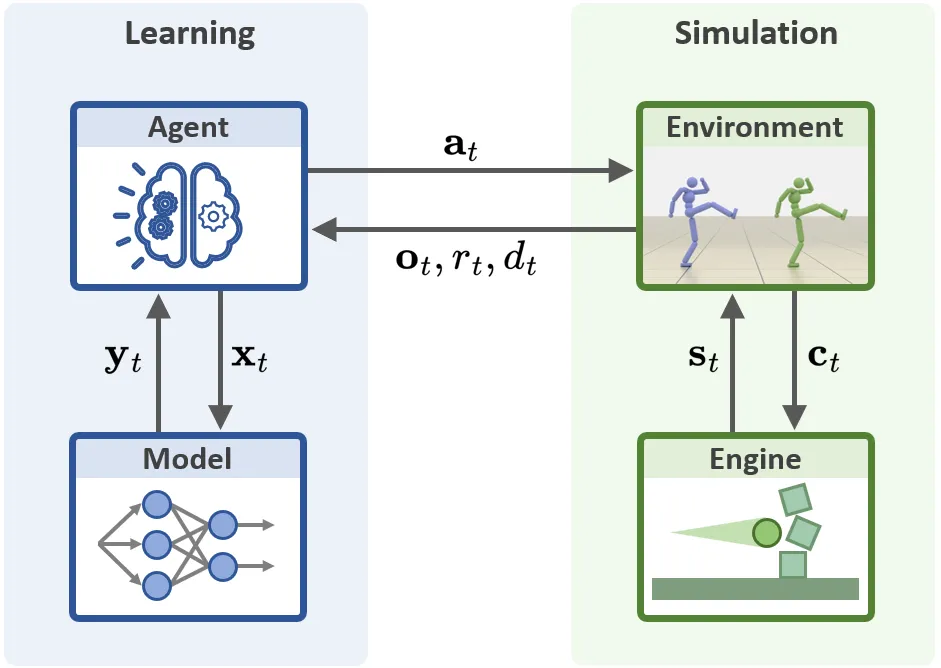
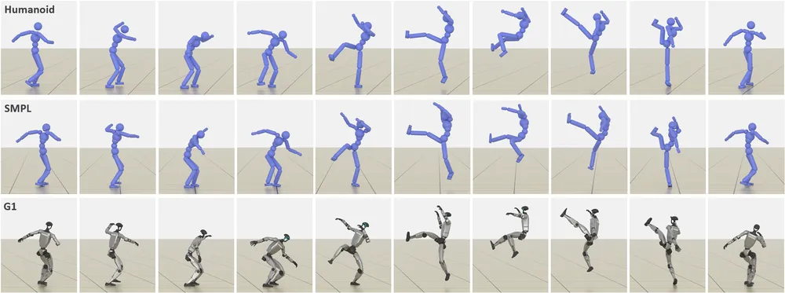
돌려 보기. README의 설치는 세 단계다. 시뮬레이터 하나를 깔고, requirements.txt를 깔고, 자산·동작 압축 파일을 받아 data/에 푼다. 아래 명령은 README에서 그대로 옮겼다.
pip install -r requirements.txt
# 학습: 엔진, 환경, 에이전트 설정을 직접 준다
python mimickit/run.py --mode train --num_envs 4096 --engine_config data/engines/isaac_gym_engine.yaml --env_config data/envs/deepmimic_humanoid_env.yaml --agent_config data/agents/deepmimic_humanoid_ppo_agent.yaml --visualize true --out_dir output/
# 같은 학습을 인자 파일로
python mimickit/run.py --arg_file args/deepmimic_humanoid_ppo_args.txt --visualize true
# 공개 모델 시험
python mimickit/run.py --arg_file args/deepmimic_humanoid_ppo_args.txt --num_envs 4 --visualize true --mode test --model_file data/models/deepmimic_humanoid_spinkick_model.pt
# 여러 GPU로 분산 학습
python mimickit/run.py --arg_file args/deepmimic_humanoid_ppo_args.txt --devices cuda:0 cuda:1
# 학습 기록 보기(TensorBoard 로거를 쓴 경우)
tensorboard --logdir=output/ --port=6006 --samples_per_plugin scalars=999999
# 동작 클립 보기
python mimickit/run.py --mode test --arg_file args/view_motion_humanoid_args.txt --visualize true
README는 GPU 사양을 적지 않는다. 엔진은 명령줄에 --engine_config data/engines/newton_engine.yaml을 더해 바꾸고, 인자 파일은 고치지 않아도 된다.
--devices에 장치를 여럿 주면 장치마다 프로세스를 띄우고 기울기를 평균한다(GPU는 NCCL(NVIDIA Collective Communications Library), CPU는 gloo, util/mp_util.py). 로거는 --logger로 텍스트(기본), TensorBoard, wandb 가운데 고르고, --video true는 화면 없이 영상을 기록한다. 빠르게 학습하려면 --visualize false로 그리기를 끈다.
AWR, LCP. MimicKit에 든 학습 기법 둘이다. AWR의 목적식과 유도는 강화학습 R.10에 있고, LCP는 travplan 문서에 아직 없다.
AWR — 가치 함수 회귀와 이점으로 가중한 행동 회귀, 지도학습 두 단계만으로 정책을 고치는 강화학습(arXiv:1910.00177, 원제 "Advantage-Weighted Regression: Simple and Scalable Off-Policy Reinforcement Learning", Xue Bin Peng·Aviral Kumar·Grace Zhang·Sergey Levine, UC Berkeley, arXiv 프리프린트(v3 2019-10-07), 프로젝트, 영상, 코드 MIT).
RWR(reward-weighted regression)의 수익 가중을 이점 가중으로 바꾸고, 재생 버퍼로 지난 정책들의 표본을 함께 쓴다(§3). 논문 설정은 반복마다 표본 약 2,000개를 최근 5만 개짜리 버퍼에 넣고, 가치 함수를 TD(λ) 수익에 200스텝, 정책을 가중 회귀로 1,000스텝 맞춘다. 온도 β는 0.05, 가중 상한은 20이다(§5, 부록 C).
OpenAI Gym 최종 수익(표 1, seed 5개)에서 Hopper 3,405와 Walker2d 5,813은 비교한 일곱 방법 가운데 평균이 가장 높았다. Humanoid는 4,996으로 SAC(soft actor-critic)의 8,048에 크게 뒤졌다.
동작 모방(표 2, 정규화 수익)에서는 DeepMimic의 PPO와 같거나 나았다. 휴머노이드 옆돌기 0.78 대 0.76, 회전 발차기 0.77 대 0.70, 개 캔터(canter) 0.86 대 0.76이다. RWR은 휴머노이드에서 0.03과 0.05에 그쳤다. 절제(그림 4)에서는 재생 버퍼나 기준선 $V(s)$를 빼면 크게 나빠졌다.
MimicKit에서는 DeepMimic 과제에 PPO 대신 쓴다(deepmimic_humanoid_awr_agent.yaml). 구현이 논문과 가장 크게 다른 곳은 둘이다(나머지는 아래 토글). 반복마다 버퍼를 비워 이번 반복의 표본(32스텝 × 환경 4,096개 = 131,072개)만 쓰고, 이점을 배치에서 표준화한 뒤 온도 1로 가중한다(awr_agent.py). $\mu_A$와 $\sigma_A$는 배치의 이점 평균과 표준편차다.
$$ w(s, a) = \min\left( \exp\left( \frac{A(s, a) - \mu_A}{\sigma_A} \right),\; 20 \right) $$
공개 학습 기록에서 휴머노이드 회전 발차기의 시험 수익(상한 300)은 같은 3억 1,470만 표본에서 PPO 272.4, AWR 275.8이었다(각 1회, 아래 토글).
LCP — 정책의 로그 확률이 관측에 따라 바뀌는 크기에 기울기 벌점을 걸어, 부드러움 보상이나 저역 통과 필터 없이 매끄러운 보행 정책을 얻는다(arXiv:2410.11825, 원제 "Learning Smooth Humanoid Locomotion through Lipschitz-Constrained Policies", Zixuan Chen·Xialin He·Yen-Jen Wang(공동 1저자)·Qiayuan Liao·Yanjie Ze·Zhongyu Li·S. Shankar Sastry·Jiajun Wu·Koushil Sreenath·Saurabh Gupta·Xue Bin Peng, SFU·UIUC·UC Berkeley·Stanford·NVIDIA, IROS 2025, 프로젝트, 영상, 코드 CC BY-NC 4.0). 저자들의 출발점은 부드러움 보상과 저역 통과 필터가 미분할 수 없고, 로봇마다 조정이 많이 든다는 것이다(§I). 기울기가 유계인 함수는 Lipschitz 연속이므로, 정책의 기울기를 상수로 묶는 제약을 표본 기댓값의 벌점으로 바꾼다(식 4–7). GAN(generative adversarial network) 판별기에 쓰던 기울기 벌점(AMP와 ASE도 쓴다)을 정책에 건 것이라고 적는다(§II).
$$ \max_\pi\; J(\pi) - \lambda_{gp}\, \mathbb E_{(s, a) \sim \mathcal D}\left[ \| \nabla_s \log \pi(a \mid s) \|^2 \right], \qquad \lambda_{gp} = 0.002 $$
학습은 PPO와 ROA(regularized online adaptation)이고, 과제는 속도 명령을 따르는 걷기다(§V). 시뮬레이션 절제(표 I, seed 3개, 환경 1,000개 × 500스텝)에서 행동 떨림(action jitter, rad/s³)은 LCP 3.21, 부드러움 보상 5.74, 저역 통과 필터 7.86, 없음 42.19였다. 과제 수익은 차례로 26.03, 26.56, 24.98, 28.87이다.
$\lambda_{gp}$를 0.01로 키우면 떨림은 0.17로 줄지만 과제 수익이 16.11로 떨어졌다. 벌점을 이력까지 포함한 관측 전체에 걸면 떨림이 3.21, 현재 관측에만 걸면 7.16이었다(표 I(c)). 실물은 Fourier GR1T1·GR1T2, Unitree H1, Berkeley Humanoid에 그대로 올렸다(표 III, 그림 7). 저자가 밝힌 한계는 기본 걷기만 보였고 달리기와 뛰기는 재지 않았다는 것이다(§VII).
MimicKit의 LCPAgent는 PPO 에이전트를 감싸는 43줄짜리 클래스이고, 같은 벌점을 가중 0.002로 actor 손실에 더한다. 기본 설정은 속도 명령이 아니라 G1이 걷기 클립을 따라 하는 DeepMimic 과제에 건다(lcp_g1_agent.yaml). README는 이 가중을 과제와 동작마다 다시 맞춰야 할 가장 중요한 값으로 꼽는다. 원 저장소는 CC BY-NC 4.0이고, MimicKit의 구현은 MimicKit의 Apache-2.0을 따른다.
안내서에서 가져올 것. 안내서는 설치·실행 안내, 네 부품의 역할, 방법 고르는 법, 작은 비교 실험을 담고, 학습 시간과 GPU는 적지 않는다. v1은 엔진을 Isaac Gym 하나로, v4는 셋으로 적는다. LCP와 SMP는 v4 뒤에 저장소에 들어와 안내서에 없다.
deepmimic_env.py).표는 안내서 표 1의 위치 추종 오차(m, seed 5개의 평균 ± 표준편차, seed마다 시험 에피소드 4,096개)에서 동작 11개 가운데 7개를 옮겼다.
| 동작(길이) | AMP | DeepMimic | ADD |
|---|---|---|---|
| 달리기(0.80 s) | 0.163 ± 0.008 | 0.013 ± 0.002 | 0.165 ± 0.017 |
| 옆 공중제비(2.44 s) | 0.387 ± 0.011 | 0.138 ± 0.004 | 0.145 ± 0.006 |
| 구르기(2.00 s) | 0.141 ± 0.031 | 0.115 ± 0.132 | 0.152 ± 0.005 |
| 동작(길이) | AMP | DeepMimic | ADD |
|---|---|---|---|
| 회전 발차기(1.28 s) | 0.064 ± 0.010 | 0.078 ± 0.062 | 0.025 ± 0.000 |
| 옆돌기(2.71 s) | 0.076 ± 0.006 | 0.144 ± 0.153 | 0.017 ± 0.000 |
| 뒤공중제비(1.75 s) | 0.267 ± 0.015 | 0.111 ± 0.054 | 0.062 ± 0.001 |
| 걷기(0.96 s) | 0.132 ± 0.021 | 0.009 ± 0.001 | 0.009 ± 0.001 |
11개 전체에서 평균 오차가 가장 낮은 쪽은 DeepMimic 5개, ADD 5개이고 걷기는 같다. DeepMimic은 회전 발차기, 구르기, 옆돌기, 뒤공중제비에서 seed 1–2개가 높은 오차에 머물러 표준편차가 커졌다(그림 5의 해당 패널). ADD의 표준편차는 11개 모두 0.017 m 이하다. 저자는 자세 오차 종료를 켜면 추종 방법의 정확도와 seed 사이 일관성이 크게 좋아지고, 그래서 기본 설정에서는 켠다고 적는다(§7.1). 이 표의 숫자는 ADD 논문 표 1의 같은 동작 행과 소수점까지 같으므로, MimicKit만의 새 실험으로 읽지 않는다(I.17). AMP 논문 표 3(I.7, I.16)은 뿌리 기준 관절 위치만으로, DTW(dynamic time warping)로 시간을 맞춘 뒤 오차를 쟀다. 안내서 식 2는 전역 뿌리 위치 오차를 더하고 시간 정렬을 적지 않는다. AMP 논문이 적듯이 위상으로 맞추지 않는 AMP는 박자만 어긋나도 오차가 커지므로, 두 표의 AMP 숫자는 섞어 비교하지 않는다.
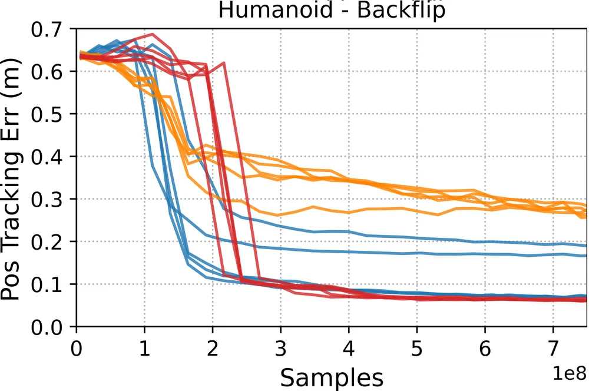
travplan에 주는 의미. 코드째 들이지 않는다. MimicKit은 사람 동작 클립을 평지에서 따라 하는 캐릭터의 틀이고, travplan은 사람 동작 데이터가 없는 스워브 바퀴 로봇이다. 지금 코드째 들일 저장소가 없다는 Controller F.6의 결론이 여기에도 맞는다. 읽고 가져올 조각은 넷이다.
ppo_agent.py의 _build_train_data다.scripts/rl_finetune_planner_d.py). MimicKit의 AWR은 비평가 $V(s)$와 TD(λ) 수익으로 이점을 만들고, 배치 전체에서 표준화한 지수 가중을 20에서 자른다. 강화학습 R.19가 빠진 것으로 꼽은 배운 비평가를 붙인 판의 282줄짜리 본보기다. 이 판이 TP-0066보다 나은지는 가설이고 재지 않았다.TinyPolicy(가중치 1,675개, pure pursuit 회귀 뒤 진화 전략, Controller E.12)의 본학습인 진화 전략은 역전파를 쓰지 않아 LCP 벌점을 손실에 그대로 더할 수 없다. 역전파로 배우는 것은 시작점을 잡는 pure pursuit 회귀(scripts/train_playground_policy.py의 warm_start)뿐이다. 증류로 학습하게 되면(Controller F.6의 3, I.14의 MPPI 교사 DAgger) 증류 손실에 출력 $\mu(o)$를 관측으로 미분한 야코비안의 제곱 노름을 더하는 것이 LCP의 결정적 판이다. 잴 것은 스텝마다의 twist 변화량과 스워브 plant(travplan/robot/plant.py, TP-0034)의 모듈 조향 각 변화량이다. 가설이고 재지 않았다. 이력을 입력에 넣는다면 벌점도 이력까지 걸어야 한다는 표 I(c)의 결과를 함께 옮긴다.newton_engine.py(1,208줄)는 Isaac Sim 없이 Newton의 MuJoCo 솔버로 병렬 환경을 만들고, Isaac Gym·Isaac Lab과 같은 엔진 API 뒤에 둔다. 저자는 Isaac Gym이나 Isaac Lab에서 학습하고 Newton에서 돌려 보는 것을 sim2sim의 예로 든다(이슈 #93). travplan이 지형을 sim/terrain.py 한 곳에서 정의해 운동학 시뮬과 Isaac 내보내기가 나눠 쓰는 것과 같은 생각이고, Planner D 학습 루프를 kit-less Newton으로 옮기는 검토(TP-0042)의 읽을거리다.데스크톱에서 먼저 해 볼 것. 데스크톱(RTX 5080 16 GB, 시뮬레이션 S.2.2)에서 Isaac Gym이 도는지는 확인하지 못했으니 Newton이나 Isaac Lab 엔진부터 쓴다. 비용이 작은 첫 실습은 휴머노이드 회전 발차기를 PPO와 AWR로 seed 여럿씩 돌려, 공개 기록의 1회 비교를 잡음 바닥과 함께 다시 재는 것이다. Playground 휴머노이드의 하체 지연 0.4 s는 가정이다(Controller E.13, TP-0135). MimicKit의 조향 정책(AMP, SMP)에 속도 계단 명령을 넣어 응답 시정수를 재면 근거 하나가 생긴다. G1이 아닌 캐릭터 휴머노이드(목표 속도 0.5–5.0 m/s)라는 한계가 있고, 가설이고 재지 않았다.
한계와 주의.
parc 동작 폴더에는 라이선스 파일이 없다.
AMASS를 옮겨 쓰면 AMASS와 SMPL의 비상업 조건을 진다(I.1). SMP의 LAFAN1 사전은 CC BY-NC-ND 4.0 데이터로 학습했고(I.1), 그 조건이 사전 가중치에 어떻게 미치는지 저장소는 적지 않는다.rl_forge/run.py를 부르지만 실제 경로는 mimickit/run.py다. 안내서 §3.4의 pd_1d 제어 모드는 2025-11-24 커밋에서 빠졌고, 지금 코드에는 pd_explicit가 있다. GMR 변환기 README의 경로(tools/data_format_conversion/)도 실제 경로(tools/gmr_to_mimickit/)와 다르다.PPO 기본값(deepmimic_humanoid_ppo_agent.yaml, ppo_agent.py).
| 부분 | 설정 |
|---|---|
| 표집 | 환경 4,096개 × 반복당 32스텝 = 131,072 표본. 관측 정규화는 처음 1억 표본까지 갱신 |
| 망 | actor와 비평가 각각 MLP 1024·512(ReLU). 행동 분포의 표준편차는 정규화한 행동 공간에서 0.05로 고정 |
| 최적화 | SGD(stochastic gradient descent, 모멘텀 0.9), 학습률 10⁻⁴. 비평가를 먼저 2에폭(미니배치 2 × 환경 수), 다음에 actor를 5에폭(4 × 환경 수) |
| 목적 | γ 0.99, λ 0.95, 자르기 0.2. 이점은 표준화한 뒤 ±4에서 자르고, 행동 한계 벌점 가중은 10 |
DeepMimic 환경(deepmimic_env.py, deepmimic_humanoid_env.yaml). 관측은 뿌리 높이, 뿌리 회전·속도·각속도, 관절 회전·속도, 핵심 몸체(머리, 두 손, 두 발) 위치에 기준 동작의 다음 세 제어 스텝(뿌리 위치·회전, 관절 회전, 핵심 몸체 위치)을 더한 것이다. 원 DeepMimic의 위상 입력은 기본으로 끈다.
보상 척도는 관절 회전 0.25, 관절 속도 0.01, 뿌리 자세 5, 뿌리 속도 1, 핵심 몸체 10이고, 관절마다 오차 가중을 따로 둔다. 원 DeepMimic(회전 2, 속도 0.1, 끝점 40, 질량 중심 10, I.9)과는 항의 구성과 계수가 다르다. ADD 논문(부록 B.2, 표 7)은 같은 가중과 척도를 자세, 관절 속도, 뿌리 속도, 끝점, 질량 중심 항의 값으로 적는다(I.17).
종료는 허용한 몸체(휴머노이드는 두 발) 밖의 지면 접촉(힘 0.1 초과), 그리고 몸체 위치 오차의 최댓값이 1.0 m(Go2 0.5, Pi Plus 0.7)를 넘을 때다. 에피소드는 기준 동작의 무작위 시점에서 시작한다(I.7의 RSI(reference state initialization)).
AMP 판별기(amp_agent.py, amp_humanoid_agent.yaml). 이진 교차 엔트로피 판별기에, 데이터와 정책 표본 양쪽의 기울기 벌점(가중 5)과 출력층 가중치 벌점(0.01)을 둔다. 스타일 보상은 $-2 \log \max(1 - D, 10^{-4})$다. 정책 표본은 20만 개짜리 재생 버퍼에 넣고, 버퍼가 찬 뒤에는 반복마다 1,000개씩 바꾼다. ADD도 같은 장치를 쓰지만 판별기 입력이 차이 벡터이고 기울기 벌점 가중이 2다.
AWR, 논문과 MimicKit.
… 이 토글의 나머지 블록 6개(문단·식·그림)는 대시보드 리서치 탭의 "자세히: MimicKit의 기본 설정, 논문 구현과 다른 점, 공개 학습 기록" 토글에 있다.
이어진 연구. 방법 사이의 계보는 I.15에 있다. README가 권하는 기능형 틀은 NVIDIA의 ProtoMotions이고, PHC·MaskedMimic 계열의 증류가 거기 있다(Planner B.16.1). MimicKit 데이터의 parc 폴더와 이름이 같은 PARC(Xu·Shi·Yin·Peng, SIGGRAPH 2025)도 Planner B.16.1에 카드가 있다.
로봇에 붙인 AMP는 AMP for hardware(Controller F.6, Planner B.16.2)와 Multi-AMP(Planner B.14.4)다. 2026-10-29 현재 열린 PR(pull request)로 FlashSAC 에이전트(#122), MuJoCo 엔진(#110), PhysX WebAssembly 브라우저 데모(#95)가 있다.
I.10 SONIC: 동작 추종을 데이터·모델·계산으로 키운다
I.11 SuperMimic: 학습 world model 하나를 통한 해석적 정책 기울기
I.12 2026년: 범용 추종기 다음에 온 것
SONIC — 모션 캡처 약 700시간에서 거른 611시간, 42M 파라미터, GPU 128장 7일로 범용 전신 추종기를 키우고, 범용 토큰 하나로 원격조종·운동학 Planner·VLA를 받는다(arXiv:2511.07820, Luo·Yuan·Wang·Li·Castañeda(공동 1저자) 외 23명(모두 28명), NVIDIA GEAR, Science Robotics 11(117) eaed4592, 2026, 프로젝트, 코드).
한 줄 요약. 동작 추종은 프레임마다 감독이 있어 키울수록 좋아진다. SONIC은 데이터·모델·계산 세 축을 함께 키워 처음 보는 동작의 성공률을 올렸고, 실물 G1에서 124개 중 123개를 따라 했다.
데이터. 자체 모션 캡처 약 700시간을 GMR과 PyRoki로 G1에 옮기고, 계단·앉기처럼 할 수 없는 동작을 걸러 611시간(50 Hz로 1억 프레임 이상, 학습 클립 317,189개)을 썼다. 대분류 33개, 소분류 8,447개다. 시험은 학습에 없는 소분류 182개의 7,016클립(15시간), 학습에 있던 소분류의 새 테이크 9,395클립(12시간), 그리고 외부 PHUMA 68,326개다. 일부가 BONES-SEED(142,220개, 288시간)로 공개됐다.
구조. 인코더 셋이 같은 토큰 공간으로 들어간다.
보상과 학습. 보상은 BeyondMimic 꼴에 끝점(머리·손목·발목) 위치 항(가중 2.0)과 원치 않는 접촉·떨림·발 가속 벌점을 더했다. 무작위화는 정지 마찰 0.3–1.6, 반발 0–0.5, 질량 중심 오프셋, 뿌리 속도 밀기, 목표 동작 흔들기다. GPU마다 환경 4,096개, 롤아웃 24스텝, PPO 5에폭이다. 어려운 구간은 1초 구간의 실패율로 표집한다.
결과.
운동학 Planner와 배포. 속도·방향·스타일 명령을 임계 감쇠 스프링으로 키프레임으로 바꾸고, 마스크 토큰 채우기로 0.8–2.4초 동작을 만든다. 최대 10 Hz로 다시 계획하고, 노트북에서 5 ms 미만, Jetson Orin에서 약 12 ms다. 42M 정책은 Jetson Orin에서 TensorRT로 한 번에 1–2 ms이고, 정책 50 Hz, 명령 500 Hz, 입력 100 Hz, Planner 10 Hz의 네 루프로 돈다.
버전 주의. arXiv v1·v2는 계산을 9천 GPU 시간으로, v3·v4는 2만 1천 GPU 시간으로 적는다. 2차 자료의 "9천"은 옛 판이다. GPU 종류(L40)는 SONIC 본문에 없고, GR00T-WholeBodyControl 설치 문서가 L40을 권장한다.
한계. 저자가 밝힌 것: 안전과 에너지를 다루지 않는다. 매우 역동적인 동작에서 균형을 잃을 수 있다. 좀비 기어가기 같은 극단적 바닥 동작과 다리 꼬고 앉기처럼 지면 접촉이 긴 처음 보는 동작은 아직 실패한다. SuperMimic의 표(I.11)에서도 공개 체크포인트가 옆구르기 22개와 공중제비 44개를 모두 놓쳤다.
travplan에 주는 의미. SONIC은 느린 운동학 Planner(10 Hz)와 빠른 추종기(50 Hz)로 나눴다. 사용자 명령은 스프링 모델을 지나며 실행할 수 있는 키프레임이 된다. travplan Controller가 하위 지연을 롤아웃에 넣은 것(TP-0150, 휴머노이드는 E.13의 TP-0135)과 같은 문제를 Planner 쪽에서 푼 것이다.
인터페이스의 몫도 컸다. 같은 VLA 위 층이 SONIC 토큰을 행동으로 내면 평균 68 %, SMPL 자세를 내면 27 %였다(과제 셋, 과제당 10–20회, I.13). travplan의 PlanResult(경로 또는 시간 인덱스 궤적) 선택도 같은 종류의 결정이다.
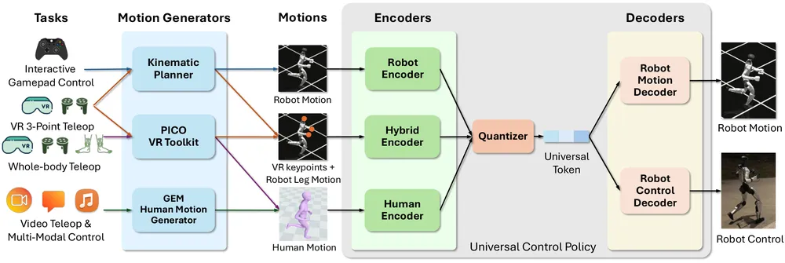
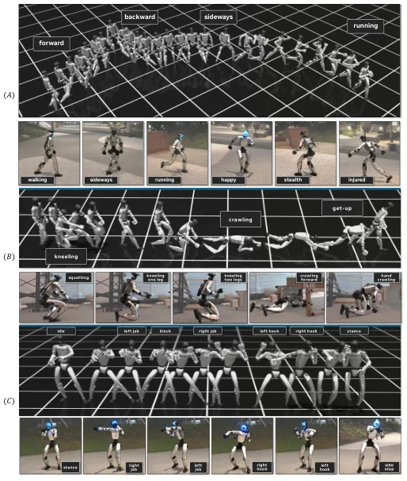
SuperMimic — 모든 동작이 같은 강체 동역학을 공유한다는 점을 써서, 학습 world model 하나를 미분해 정책을 고친다. 자기 벤치마크에서 H100 한 장 3시간에 SONIC 공개 체크포인트의 수익을 넘었다(arXiv:2610.28480, Liao·Shao·Long·Zakka·Horowitz·Abbeel·Sreenath, UC Berkeley, CoRL 2026 구두 발표, 프로젝트, 2026-10-20 공개).
한 줄 요약. PPO는 동작마다 잡음 섞인 롤아웃으로 행동의 결과를 다시 추정한다. SuperMimic은 모든 동작이 공유하는 동역학을 world model 하나로 배우고, 그 안에서 짧게 상상한 롤아웃을 시간 역방향으로 미분해 분산이 작은 기울기를 얻는다.
풀려는 문제. 범용 추종기는 두 길로 만들어 왔다. 동작별 전문가를 증류하거나(BeyondMimic식, 손실이 있다), 정책 하나를 PPO로 클러스터에서 키운다(SONIC, 약 2만 1천 GPU 시간). 저자의 진단은 "동작을 늘리는 것이 곧 계산을 늘리는 것"이 된 이유가 모델 없는 RL이 공유 구조를 모델로 갖지 않기 때문이라는 것이다.
동작 방식. 한 반복은 세 단계다. 시뮬레이터는 MuJoCo Warp이고 한 번도 미분하지 않는다.
world model은 다음 상태, 보상, 잡음 없는 관측, 종료 확률을 낸다. 시뮬레이터의 무작위성(마찰, 관절 영점, 몸통 질량 중심)은 에피소드 문맥 $\xi$로 넣어 모델 자체는 결정적이다. 동역학 망은 MLP (2048, 2048, 2048)이다. 손실의 BCE는 종료 예측의 이진 교차 엔트로피다.
$$ \mathcal L_{WM} = \sum_{j=1}^{8} \left[ \| \hat s_j - s_j \|^2 + (\hat r_j - r_j)^2 + \| \hat o_j - o_j \|^2 + \mathrm{BCE}(\hat d_j, d_j) \right] $$
정책 목적은 상상한 보상의 할인 합에 지평 끝의 가치를 더한 것이다. 종료를 끊지 않고 생존 가중 $\hat c_0 = 1$, $\hat c_{t+1} = \hat c_t (1 - \hat d_{t+1})$로 부드럽게 만들어 미분이 이어진다. $g_H$는 지평 끝 시각의 기준 동작이다.
$$ \hat J(\theta) = \mathbb E\left[ \sum_{t=0}^{H-1} \gamma^t \hat c_t\, \hat r_{t+1} + \gamma^H \hat c_H\, V_\psi(\hat s_H, g_H, \xi) \right], \quad H = 32 $$
가치 함수 $V_\psi$는 상상한 전이만으로 계산한 TD(λ) 수익(λ = 0.95, GAE(generalized advantage estimation)와 같은 λ 가중)에 맞춘다. SHAC(I.11 토글)과 달리 목표망의 지수 이동 평균을 두지 않는다. 정책 기울기는 전역 노름 1.0으로 자른 뒤 원소별 0.1로 다시 자른다. 정책은 동작 인코더(미래 기준 10프레임을 32차원 잠재로)와 공유 디코더(잠재와 최근 관측 10프레임)로 이뤄진다. 보상은 BeyondMimic 꼴에서 자기 충돌 벌점을 빼고 관절 한계 가중을 −10에서 −2로 낮췄다. 자기 충돌 벌점은 확률적 정책이 기준상 가까운 두 몸체를 맞대 행동 잡음을 억누르고 속도 보상을 올리는 편법을 막는 항이다. 상상 롤아웃의 정책은 결정적이라 이 편법에 이득이 없다.
왜 시뮬레이터를 미분하지 않나. 접촉은 매끄럽지 않고 대부분의 시뮬레이터는 미분할 수 없다. 학습 world model은 매끄러운 근사라 어디서나 기울기가 정의된다. 앞으로 굴리는 것도 world model이라, 상상 속 계산이 시뮬레이터보다 10배 넘게 빠르다(아래). 다만 손실은 예측값만 맞추고 야코비안은 맞추지 않는다. 기울기가 맞는지는 논문이 직접 재지 않았고 최종 수익으로만 간접 확인했다(아래 장난감 문제가 이 위험을 보인다). 저자는 8스텝 창으로 맞춘 모델이 그보다 긴 32스텝 상상, 나아가 끝없이 긴 롤아웃에서도 안정하다고 주장한다. 정량 근거는 8스텝 예측 오차다. 그 오차(명목 오차로 정규화한 상태 오차)는 데이터를 1시간에서 264시간으로 늘려도 0.007–0.011에 머물렀다.
결과. BONES-SEED에서 거른 129,514개(264.56시간) 전체로 학습하고 같은 동작으로 평가했다. 실패 판정은 SuperMimic의 종료 조건이다.
| 동작 묶음(개수) | SONIC 공개 체크포인트 | SuperMimic GPU 1장 3시간 | GPU 2장 9.8시간 |
|---|---|---|---|
| 옆구르기 (22) | 22 | 2 | 0 |
| 공중제비 360°·180°·90° (44) | 44 | 1 | 0 |
| 다리 꼬기 (10) | 9 | 0 | 0 |
| 눕기·쉬기·일어나기 (99) | 28 | 8 | 0 |
| 멀리뛰기 (24) | 15 | 0 | 0 |
| 춤 연속 동작 (8) | 8 | 0 | 0 |
| fire-in-the-hole 회전 (20) | 3 | 3 | 0 |
| 그 밖 (129,287) | 50 | 11 | 0 |
| 합계 (129,514) | 179 | 25 | 0 |
표는 원문 부록 표 A.8이다. 프로젝트 페이지는 fire-in-the-hole 회전 행을 "그 밖"에 합쳐 적는다. SONIC v1.1 체크포인트는 239개를 실패했다.
정직하게 읽을 것.
하이퍼파라미터(원문 표 A.5).
| 부분 | 설정 |
|---|---|
| world model | Adam, 학습률 2×10⁻⁴(GPU 2장은 √2배), 갱신마다 2,048창 묶음 10개, 기울기 전역 노름 1.0 |
| 정책 | Adam β = (0.9, 0.95), 갱신마다 상상 롤아웃 4,096개, 전역 노름 1.0 뒤 원소별 0.1, γ = 0.99 |
| 가치 함수 | λ = 0.95, 5에폭 × 미니배치 4개 |
| 데이터 | GPU마다 시뮬레이터 환경 4,096개, 환경마다 버퍼 1,000스텝, 갱신 대 데이터 비 0.4 |
| 일정 | 25만 반복까지 코사인으로 0.03배, 그 뒤 고정, 총 32만 반복 |
관측과 행동(표 A.1). 관절 위치 29(±0.01 rad), 관절 속도 29(±0.5 rad/s), IMU 각속도 3(±0.2), 중력 방향 3(±0.05)에 균일 잡음을 더하고, 직전 행동 29는 그대로 두며, 최근 10프레임을 본다. 행동은 관절 목표 $q_{sp} = \alpha a + q^0$이다. 낮은 PD 이득이라 토크 대리에 가깝다. 종료는 뿌리 높이 오차 0.25 m, 또는 기울기 오차 0.8이다. 기울기 오차는 기준과 로봇의 골반 좌표계에서 본 중력 방향 z 성분의 차라 단위가 없고, 직립 기준으로 약 78°에 해당한다. BeyondMimic과 달리 끝점 종료가 없다. 무작위화는 마찰 U[0.3, 1.2], 관절 영점 ±0.01 rad, 몸통 질량 중심 오프셋이다. BeyondMimic의 뿌리 속도 밀기는 뺐다. 결정적 world model이 상태 불연속을 잡을 수 없기 때문이다.
시작 상태 표집(부록 D.1). 동작을 1초 구간으로 나누고 구간마다 수익 $G_b$를 이동 평균한다. 50 %는 균일, 40 %는 $\mathrm{softmax}_b(-25\, G_b / G_{max})$, 10 %는 과거 가중에 비례해 고른다.
가까운 선행 연구.
… 이 토글의 나머지 블록 1개(문단·식·그림)는 대시보드 리서치 탭의 "자세히: SuperMimic의 하이퍼파라미터, 관측·종료, 가까운 선행 연구" 토글에 있다.
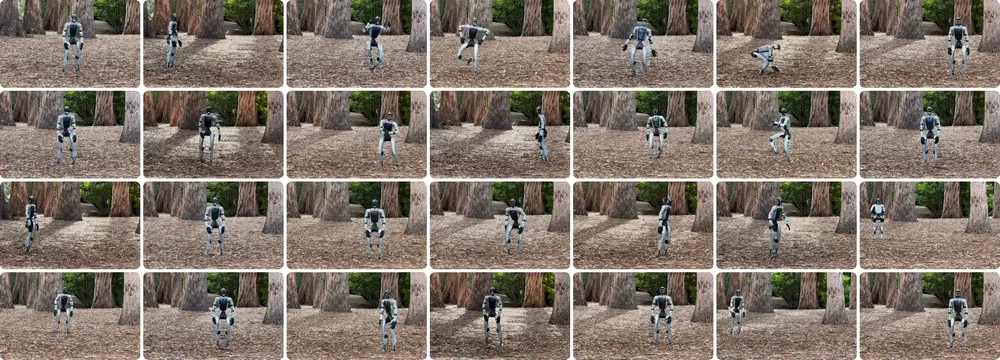
장난감 문제로 본 해석적 기울기. 쿨롱 마찰과 행동 한계가 있는 1차원 질점이 사인 기준을 따르는 과제다. 정책은 선형이고 파라미터는 넷이다(기준 오차·속도·기준 변화에 곱하는 되먹임 이득 셋과 상수항). 시뮬레이터는 미분하지 않는 검은 상자로 두었다.
점수 함수(REINFORCE) 추정(위 식)은 롤아웃 비용 $C_n$과 기준값 $b$의 차이로 로그 확률의 기울기를 가중한다. PPO는 여기에 비평가의 이점과 자르기를 더한 것이고, TinyPolicy의 진화 전략은 같은 생각을 파라미터 공간에서 한 것이다(강화학습 R.3).
해석적 추정(아래 식)은 world model 안에서 상상한 상태 $\hat s_k$를 거쳐 비용 $\ell$을 연쇄 법칙으로 미분한다.
$$ \nabla_\theta J \approx \frac{1}{N} \sum_{n} \left(C_n - b\right) \sum_k \nabla_\theta \log \pi_\theta(u_k^n \mid s_k^n) $$
$$ \nabla_\theta J = \frac{\partial}{\partial \theta} \sum_k \ell\left(\hat s_k(\theta), u_k(\theta)\right) $$
| 측정 | 점수 함수 | 학습 모델을 통한 해석적 기울기 |
|---|---|---|
| (a) 여섯 곡선이 본 최저 비용(4.48)의 1.1배에 닿은 진짜 시뮬레이터 스텝, seed 3개 | 165,120, 170,240, 40만 스텝 안에 못 닿음 | 11,200, 4,800, 7,040 |
| (a) 마지막 비용 | 4.83, 5.03, 5.06 | 4.65, 4.52, 4.49 |
| (b) 되먹임 이득 세 성분의 진짜 기울기와의 코사인, 롤아웃 1,024개(100회 평균, 양수 비율) | 0.41, 72 % | −0.08, 20 % |
| (b) 같은 값, 정확한 식을 미분(마찰의 뜀은 미분 0) | — | −0.99, 0 % |
(a) 학습 곡선. 해석적 기울기는 느슨한 목표에 진짜 시뮬레이터 스텝을 seed마다 15배, 35배 덜 써서 닿았다(나머지 seed는 점수 함수가 40만 스텝 안에 못 닿았다). 목표는 최적값이 아니라 여섯 곡선이 본 최저의 1.1배다. 해석적 쪽은 3만 2천 스텝에서 끊었고, 마지막 비용이 자기 최저보다 높다. 모델 편향이 학습을 멈춘 것이다.
(b) 기울기 방향. 상수항을 빼고 되먹임 이득 세 성분만 쟀다. 네 성분 그대로면 상수항 하나가 코사인을 거의 다 정해(상수항 축만으로 0.98) 해석적 기울기도 0.98로 좋아 보인다. 점수 함수는 퍼짐이 커서 롤아웃 1,024개에서도 평균 0.41이고, 4개에서는 +1 근처와 −1 근처로 거의 반반 갈린다. 점수 함수는 탐색 잡음으로 흐린 목적에 대해서만 편향이 없다. 학습 모델을 통한 기울기는 퍼짐이 작지만 평균이 0 근처(−0.08)라 방향을 모른다. 정확한 식을 미분하면 −0.99로 거꾸로다. 쿨롱 마찰 $0.6\,\mathrm{sign}(v)$의 뜀이 진짜 기울기에는 들어가지만 경로 미분에는 0으로 빠지기 때문이다(Suh 외 2022). 진짜 기울기는 시작점 65,536개, 간격 $10^{-2}$의 중심 차분이다.
(c) 창 길이와 가치 함수. 에피소드 40스텝을 H스텝 창으로 잘라 창마다 미분했다(SHAC식). 창 안의 비용만 미분하면 H = 1–4에서 비용이 6.1–6.2로 근시안이 되고, 창 끝에 가치 함수를 더하면 중앙값이 4.7–5.0으로 준다(seed 3개). 전체를 미분한 H = 40은 4.22다. 가치 함수를 더한 짧은 창은 그 두 배 길이의 가치 함수 없는 창보다 낫거나 비슷했다(H = 8에서 4.43–4.65 대 H = 16의 4.79–4.80). SuperMimic의 "가치 함수가 있는 H = 16이 없는 H = 32와 같다"와 같은 방향이다. 장난감의 가치 함수(3차 다항식)는 편향이 있어 H = 40에 닿지 못했다. (b)와 (c)의 모델은 버퍼가 아니라, 진짜 시뮬레이터에서 (v, u) 2만 개를 균일하게 뽑아 한 번 맞춘 것이다. 모델은 속도 변화만 배우고 위치 적분은 정확히 안다.
장난감이 말하는 것. 해석적 기울기의 이득은 작은 분산이고, 위험은 편향이다. 접촉처럼 동역학이 뛰는 곳에서는 모델의 야코비안이 맞는지가 성패를 정하고, 그것은 예측 오차로는 보이지 않는다. 1차원·파라미터 4개의 장난감이라 SuperMimic의 규모(파라미터 수백만, 데이터 264시간)로 옮겨 말할 수는 없다.
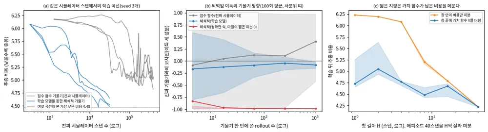
travplan에 주는 의미. 학습 Controller TinyPolicy는 pure pursuit 회귀 뒤 진화 전략(ES)으로 다듬는다(TP-0128). 학습 스크립트는 기울기를 쓰지 않은 이유를 "채점이 가중치의 계단 함수라서"라고 적지만, 실제 return은 대부분 촘촘하다.
스텝마다 진행·cost·시간 항을 더하고, 계단인 것은 치명·넘어짐·도달의 종료 항과 속도·가속 clamp다. 학습 시뮬은 운동학 적분과 지도의 쌍선형 보간이라 식을 알고 미분할 수 있다.
그래서 첫 시험은 world model 없이 이 시뮬을 그대로 BPTT하는 것이다(정확한 운동학 시뮬이 있어 world model을 지금 들일 이유가 없다는 강화학습 R.9의 결론과 같다). world model은 식을 모르는 부분, 곧 스워브 plant의 지연(TP-0150)에만 필요하다.
SuperMimic에서 옮길 것은 종료 항을 생존 가중으로 바꾸는 것과 짧은 지평 끝의 가치 함수다. 장난감 (b)의 경고도 함께 옮긴다. 치명 셀과 TravMap cost의 뜀은 경로 미분에 들어가지 않는다.
TravMap의 grad_x, grad_y는 고도의 기울기이고, 학습 스크립트는 이것으로 pitch·roll을 계산한다. 그래서 넘어짐 판정을 위치로 미분할 재료가 된다. cost의 위치 기울기는 COST 채널의 쌍선형 보간에서 칸마다 나온다.
이 길이 ES보다 나은지는 재 보지 않은 가설이다. MPPI가 비평활 비용을 그대로 다룬다는 장점은 이 길로 가면 잃는다(CLAUDE.md의 Controller 두 갈래).
한 줄로. SONIC 이후의 연구는 일곱 방향으로 갈렸다. 더 키우기, 역동적인 동작을 실물로 옮기기, 데이터를 고르고 재기, 싸게 만들고 옮기기, 지형·접촉을 보게 하기, 힘에 순응하고 안전하게 하기, 실행 시점에 명령을 고치기다. 가장 큰 공백은 지형이다.
arXiv 번호의 앞 네 자리가 대체로 게재 연월이다(2605는 2026-05. 월말에 낸 논문은 다음 달 번호를 받기도 한다). 표는 방향별로 묶었고, 방향 안에서는 게재 순이다. SONIC과 같은 시기(2025-11)의 선행 연구도 방향을 보이려고 함께 넣었다.
| 방향 | 연구 | 무엇이 새로운가 | 대표 수치 |
|---|---|---|---|
| 더 키우기 | HoloMotion-1(arXiv:2605.15336, Horizon Robotics 기술 보고서, 코드 Apache-2.0) | 영상에서 복원한 동작 2,000시간 이상을 주 원천으로 쓰고, 총 400M·활성 약 7M 파라미터의 희소 MoE Transformer로 키움 | 저자가 영역 밖이라 부른 다섯 셋 성공 97.55 %(SONIC 95.58 %, GMT 92.54 %), 핵심점 오차 124.57 mm(SONIC 227.95 mm, 표 6). 그중 TWIST2(PICO VR)와 InertialTeleop(관성 슈트)은 자체 학습 데이터와 같은 종류의 장비로 모았고, TikTokDance는 주 학습 원천처럼 인터넷 영상에서 복원했다(표 4·5). RTX 5090 64장 약 6일 |
| 더 키우기 | Humanoid-GPT(arXiv:2606.03985, CVPR 2026, 코드) | 군집별 PPO 전문가 수백 개를 GPT식 causal Transformer 하나로 DAgger 증류, 리타기팅 20억 프레임(SONIC의 20배) | 80.4M 모델 성공 92.58 %, 약 1만 5천 GPU 시간 |
| 더 키우기 | Scaling BFM(arXiv:2607.15163) | 1억 2백만 프레임, 전역 좌표 추종, 무작위 마스크 대신 고른 제어 모드 8개 | BONES 시험 성공 0.9677(SONIC 0.9239, 이 시험 셋은 SONIC 학습 데이터와 겹칠 수 있다), 새 출처 시험 0.9776(SONIC 0.5937) |
| 역동 동작을 실물로 | ZEST(arXiv:2602.00401, Science Robotics 2026, RAI Institute·Boston Dynamics, 카드는 Planner B.16.4) | 모션 캡처·휴대폰 영상·키프레임 애니메이션에서, 다음 한 스텝 기준만 보는 잔차 추종을 학습(실물에는 동작마다 정책). 접촉 표지·상태 추정기 없이 Atlas·G1·Spot에 올림 | 실물용 정책은 동작 하나에 L4 한 장 약 10시간. 시뮬레이션의 15동작 다중 기술 정책은 옆돌기 관절 오차 0.088 rad(Boston Dynamics 전신 MPC 0.237 rad, 표 2) |
| 역동 동작을 실물로 | OmniXtreme(arXiv:2602.23843, RSS 2026, BIGAI·Unitree 외, 체크포인트 Apache-2.0) | 동작별 PPO 전문가를 DAgger로 flow matching 정책 하나에 증류해 다중 동작 RL의 기울기 간섭을 피하고, 잔차 RL로 모터 토크–속도 한계와 전력 벌점을 더함 | 같은 데이터·용량에서 극한 동작 성공 95.64 %(Any2Track식 MLP 증류 89.22 %, BeyondMimic식 다중 동작 RL 79.45 %, 학습 동작에서 잼, 표 II). 보지 않은 AMASS 1,000개에서는 89.54, 85.95, 85.29 %다. 실물 G1 24개 동작 157회 91.08 %(표 III) |
| 고르고 재기 | LIMMT(arXiv:2606.06953, ICML 2026) | 물리 점수, 임베딩 다양성, 복잡도 가중의 3단계로 데이터를 고름 | AMASS 3 % 미만으로 전체보다 나음. 실물 G1 31/40(전체)에서 34/40(10 %), 잡음 바닥 안일 수 있다 |
| 고르고 재기 | YAHMP(arXiv:2607.19903, Inria) | 같은 데이터·로봇에서 설계 요소를 하나씩 뺀 절제 | 이력 없음 뿌리 위치 오차 +38 %, 교사–학생 −8 % |
| 방향 | 연구 | 무엇이 새로운가 | 대표 수치 |
|---|---|---|---|
| 고르고 재기 | HumanTracker(arXiv:2608.13555, ECCV 2026) | 약 153시간·2만 5천 클립 벤치마크와 학습 선호 지표 HumanScore. Humanoid-GPT와 같은 연구실 | 바닥 접촉 동작 성공 Humanoid-GPT 32.9, SONIC 20.1, GMT·TWIST2 0 %(같은 동작의 HumanScore는 SONIC이 더 높다) |
| 싸게 만들고 옮기기 | TRACE(arXiv:2610.17999) | SONIC을 G1에서 H2로 옮김(운동학 사전, 인코더 증류, LoRA RL) | RTX PRO 6000 한 장 약 8시간(SONIC GPU 시간의 0.1 % 미만), PHUMA 96.08 % |
| 싸게 만들고 옮기기 | SuperMimic(I.11) | 학습 world model을 통한 해석적 기울기 | 자기 벤치마크에서 H100 한 장 3시간에 SONIC 체크포인트의 수익을 넘음 |
| 지형·접촉 | Deep Whole-body Parkour(arXiv:2601.07701, Tsinghua) | 깊이 영상을 보는 동작 추종, 막힘 감지를 단 시작 위치 무작위화, 상대 좌표 보상 | 동작 넷·지형 셋의 작은 규모. 시작 위치를 흩뜨린 시험에서 다이빙 구르기 전역 관절 오차 0.165 m(깊이 없는 BeyondMimic 0.227 m, 표 I). 시작 위치를 고정하면 동작에 따라 엇갈린다(다이빙 구르기 0.147 대 0.137 m, 점프 앉기 0.120 대 0.191 m) |
| 지형·접촉 | PHP(arXiv:2602.15827, RSS 2026, Amazon FAR·UC Berkeley 외, 코드 Apache-2.0) | 리타기팅한 파쿠르 기술을 모션 매칭으로 이어 긴 기준 동작을 만들고, 기술별 높이 지도 교사를 깊이 영상 학생 하나로 증류(DAgger + PPO). 명령은 2차원 속도뿐 | 1 m/s, 76 cm 장애물 시뮬레이션 성공 0.95(속도 추종 RL 0.00, 종단 간 깊이 정책 0.08, 표 I). 같은 조건에서 DAgger만 쓰면 0.03(표 II). 실물 G1이 키의 96 %인 1.25 m 벽을 오름 |
| 지형·접촉 | SceneBot(arXiv:2606.27581) | 링크별 접촉 표지를 조건으로 받는 추종기, 동작에서 장면을 거꾸로 복원 | 지형·물체 뿌리 위치 오차 0.147·0.122 m(SONIC 0.808·0.849) |
| 지형·접촉 | GigaBrain-WBC-0.5(arXiv:2608.18234) | 다음 행동·상태를 예측하는 행동 world model, 접촉 감속으로 지형 자동 표지 | 지형 상호작용 성공 81.3 %(기준선 14.0–18.7 %), 넘어짐 회복 99.3 % |
| 지형·접촉 | PGMT(arXiv:2609.08511) | 추종·회복 사전학습 뒤 "동작 조건 지형 엿보기"로 인식을 주입, 지형이 요구하면 기준에서 벗어남을 허용 | 지형 위 30초 완주 87.81 %(지형을 안 보는 SONIC v1.1 25.09 %, 높이 입력을 0으로 둔 자기 변형 86.53 %), 실물 37 cm 장애물 |
| 지형·접촉 | ViBe(arXiv:2609.09918, USC, 코드 BSD-3-Clause) | 고정한 SONIC에 고정 시각 인코더와 LoRA 어댑터만 RL로 붙여 장면(지형·물체)을 보게 함. 교사–학생 단계가 없다 | 특권 관측 정책 성능의 89.6–95.5 %(걷기·파쿠르·이동 조작·피구), RTX 3090·5090·L40S급 GPU에서 학습 2일 미만 |
| 방향 | 연구 | 무엇이 새로운가 | 대표 수치 |
|---|---|---|---|
| 지형·접촉 | NEXUS(arXiv:2609.39000, 코드 CC BY-NC 4.0, Planner B.16.6) | 평지 동작을 지형 위 동작으로 자동 변환한 짝 데이터(적응 변형 포함 약 1,000시간)로, 운영자는 평지에 서 있고 로봇은 깊이 영상을 보고 계단·경사에 맞춤 | 어려운 지형 성공 51.9 %(지형을 안 보는 SONIC v1.1 31.76 %). 보지 않은 이동 클립 415개 × 8,300회 시행에서 91.07 %(시각 없이 87.77 %, 교사–학생 없이 90.96 %) |
| 지형·접촉 | P-BFM(arXiv:2610.15833, 코드) | 비지도 RL 행동 기반 모델(BFM-Zero 갈래)에 지형 인식을 더함 | 지형 7종 × 10레벨, 보지 않은 동작 994개에서 관절 오차 0.13 rad(같은 연구실 UFO 0.16 rad), 밀기 외란 뒤 추종 회복률 61.4 %(UFO 16.6 %, 표 1) |
| 순응·안전 | GentleHumanoid(arXiv:2511.04679, Stanford) | 힘 상한(5–15 N)을 표집해 정책 입력으로 주는 상체 순응 추종. 범위는 ISO/TS 15066을 근거로 정함 | 실물 G1 손목을 밀어 팔을 옮기는 데 든 최대 힘이 설정 10 N 안팎(강한 외력으로 학습한 기준선 51.14 N, 일반 RL 24.59 N) |
| 순응·안전 | ConstrainedMimic(arXiv:2606.00374, CoRL 2026), CoFiT(arXiv:2610.02341) | 추종기 위 1 kHz 넘는 OSC(operational space control) + CBF(control barrier function) 제약, 필터를 아는 미세 조정 | CoFiT: 필터만 붙인 경우 대비 제약 위반 시간 TWIST2 −91 %, SONIC −21 %(실물 TWIST2 −83 %) |
| 순응·안전 | C-GMT(arXiv:2610.22119, MIT) | 힘에 강하게 다시 학습한 기반 추종기에 고유감각 이력의 잔차 적응기로 순응을 더함 | 60 N 이하 당김에서 기반 추종기 0.867(원래 SONIC 0.820). VLA 상자 과제 60 N 당김 46/50(28/50), 외란 없이 49/50(48/50) |
| 실행 시점 | TTCO(arXiv:2610.14896) | 고정한 추종기에 보낼 명령을 폐루프 시뮬레이션 표본으로 최적화 | 몸체 위치 오차 SONIC 0.615 → 0.127 m, 관절 가속은 늘어남 |
읽는 법. SONIC이 공통 기준선이 됐다. 선두 추종기의 평지 성공률은 학습 분포에 가까운 시험에서 90 % 안팎이지만, 새 출처 동작(SONIC 59 %)과 고동적 동작(HumanTracker 최고 86.9 %)에서는 떨어진다. 고동적 동작을 실물에 올릴 때는 동작별 정책(ZEST)이나 동작별 전문가의 증류(OmniXtreme, PHP)를 쓴다. OmniXtreme에서 전문가 증류는 같은 데이터로 처음부터 학습한 다중 동작 RL(BeyondMimic식)보다 극한 동작에서 16 %p 높았다(95.64 대 79.45 %, 표 II, 학습 동작). 보지 않은 AMASS 1,000개에서는 그 차이가 4 %p(89.54 대 85.29 %)였다. 본문은 보지 않은 동작에서 차이가 커진다고 적었지만, 표의 성공률 차이는 오히려 작다. 차이가 가장 큰 곳은 지형과 접촉이다. HumanTracker의 바닥 접촉 동작에서 가장 나은 추종기도 32.9 %였고, 지형 위 30초 완주는 지형을 보지 않는 SONIC v1.1이 25.09 %, 지형을 보는 PGMT가 87.81 %였다. Athena-WBC(arXiv:2607.04837)는 실험 데이터셋의 사용 허가·데이터 관리 문제로 저자가 철회했다(v3, 2026-08). 그 수치는 인용하지 않는다.
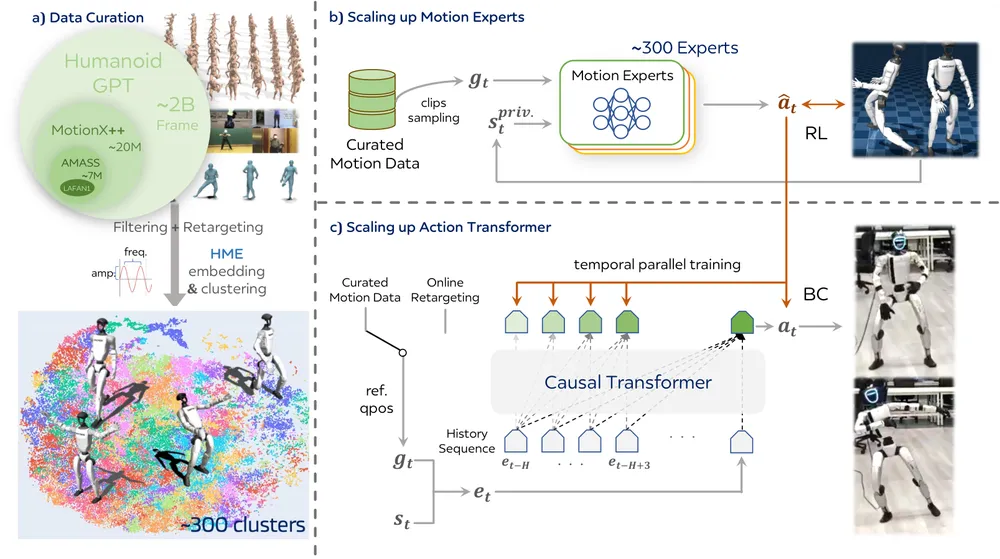
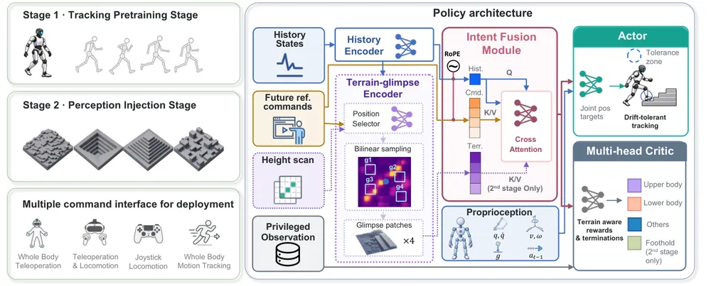
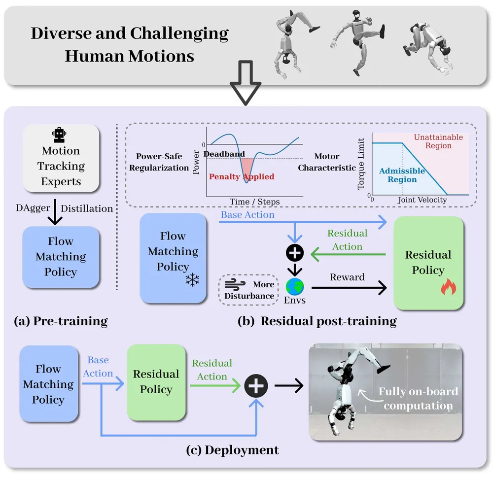
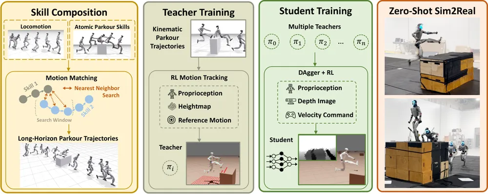
travplan에 주는 의미. 지형이 travplan이 사는 곳이다. PGMT의 "동작 조건 지형 엿보기"와 GRAIL의 11 × 11 높이 지도(Planner B.16.1)는, 다리 로봇을 쓸 때 TravMap을 추종기 입력으로 넣는 방법이 된다. 다만 PGMT의 성적 가운데 지형 엿보기 자체의 몫은 가장 어려운 레벨에서 78.85에서 83.33 %로 4.5 %p다. 나머지는 학습 과정이 만든 것이다. 인식의 몫을 따로 재야 한다는 travplan의 원칙(인식 A.13)과 같은 교훈이다. PHP는 위 층 명령을 2차원 속도로만 두고, 디딜지 오를지 넘을지는 깊이 영상을 보는 정책이 고르게 했다. travplan의 Planner가 경로만 주고 Controller가 지형에 맞춰 국소적으로 피하는 분리와 같은 선택이다. TTCO는 "추종기는 그대로 두고 위 층 명령을 시뮬레이션 표본으로 고친다"는 방법이고, 이것은 travplan MPPI가 하위 정책 위에서 하는 일과 같다(Controller E.13). 관절 가속이 늘어난 대가도 같이 본다.
I.13 추종기 위의 인터페이스: 무엇을 넘기느냐가 성능을 정한다
한 줄로. 범용 추종기 위에는 원격조종, 운동학 Planner, 생성 모델, VLA가 앉는다. 같은 위 층도 추종기에 넘기는 표현(자세, 핵심점, 토큰)에 따라 성공률이 두 배 넘게 갈린다.
| 위 층 | 예 | 추종기에 넘기는 것 | 주기·지연 |
|---|---|---|---|
| 모션 캡처·VR 원격조종 | TWIST(OptiTrack), OmniH2O·CLONE(머리·두 손), SONIC(PICO 전신 87차원·세 점). 학습 이전의 예는 Koenemann 2014(I.3) | 리타기팅한 전신 자세 또는 세 점 | TWIST는 120 Hz 캡처를 50 Hz로. 원격조종 지연을 조건으로 받는 추종기도 있다(arXiv:2609.34233) |
| RGB 원격조종 | H2O, HumanPlus, SONIC(영상 GEM) | 영상에서 추정한 SMPL 자세 | H2O 30 Hz, HumanPlus 25 fps, SONIC 60 fps 이상 |
| 운동학 Planner | SONIC Planner, MotionBricks(실시간 운동학 동작 생성, Planner B.16.1). 원형은 모션 매칭 위에 RL 추종기를 얹은 DReCon(2019, I.7) | 미래 0.8–2.4초의 로봇 동작 | SONIC은 최대 10 Hz, 노트북 5 ms 미만, Jetson Orin 약 12 ms |
| 드문 키프레임 | PLAT(arXiv:2609.25754, 도착 시각을 단 키프레임만 받는 추종기) | 시각 지정 키프레임 | — |
| 생성 모델 + 비용 유도 | BeyondMimic 잠재 diffusion | 상태–잠재 궤적 | 잡음 제거 20단계 약 20 ms(B.16.6) |
| 글 → 동작 생성 | TextOp(arXiv:2602.07439, 코드 MIT). 캐릭터 쪽 대표 예는 diffusion Planner와 추종기를 폐루프로 묶은 CLoSD(arXiv:2410.03441, ICLR 2025) | 글 명령을 받는 잠재 diffusion 생성기가 낸 미래 로봇 동작 | 생성기 6.25 Hz(RTX 4090에서 29.63 ms), 추종기 50 Hz(2.15 ms), 입력에서 로봇 반응까지 0.73 s(표 II) |
| 가린 목표 조건 제어기 | MaskedMimic | 머리·손·글·물체 같은 부분 목표 | — |
| VLA | SONIC + GR00T N1.5(토큰 64 + 손 14차원), LeVERB(잠재 동사), TRACE의 H2 | 범용 토큰 또는 잠재 명령 | VLA는 서버, 추종기는 로봇(인식 A.8의 TANGO) |
| 실행 시점 최적화 | TTCO | 시뮬레이션 표본으로 고친 명령 | — |
표현이 성능을 정한다. SONIC에서 같은 GR00T N1.5 위 층이 범용 토큰을 행동으로 내면 평균 68 %, SMPL 자세를 내면 27 %였다(과제 셋, 과제당 10–20회). LeVERB는 시각–언어 정책이 "잠재 동사"를 내고 RL 전신 제어기가 실행한다. 전체 성공 58.5 %로, 같은 잠재 인터페이스에서 표집을 끈 결정적 변형(7.5 %)의 7.8배다. 이 비교는 인터페이스가 아니라 표집의 몫이다. Beyond Retargeting(arXiv:2610.07891)은 리타기팅을 아예 빼고 동작 기본 단위 코드북으로 원격조종한다. 리타기팅도 위 층과 추종기 사이 인터페이스 선택의 하나라는 뜻이다.
미래 기준 창이 지연을 만든다. HuMiT(arXiv:2610.29903, 2026-10)는 원격조종의 끝에서 끝까지 지연을 영상으로 쟀다. 미래 10프레임을 보는 SONIC은 그 창을 채우는 버퍼만 200 ms라 245 ms였고, 4프레임으로 줄이면 145 ms, 온라인 리타기팅을 하는 TWIST2는 120 ms였다(표 II). 현재 프레임의 뿌리 높이·속도와 핵심점 네 개만 보는 HuMiT는 중앙값 65 ms다. 같은 학습에서 AMASS·BONES-SEED 성공률은 촘촘한 기준과 같았지만 LAFAN1에서는 52.5 대 62.5 %로 낮았다(표 III). 역동적인 동작에는 현재 프레임의 촘촘한 기준(관절각·모든 링크)이 아직 도움이 된다는 뜻이다. 미래 프레임의 몫은 이 절제에서 재지 않았다. OmniClone(arXiv:2603.14327, 코드 MIT)은 원격조종 추종기를 동작 범주별로 쟀다. 낮은 자세의 이동 조작에서 성공 100 %, 관절 위치 오차(MPJPE) 51.3 mm로 GMT(95 %, 180.5 mm)와 TWIST2(65 %, 210.5 mm)보다 나았다. 역동 동작만으로 학습하면 이동 조작 범주가 10–30 %(낮은 자세 10 %)로 떨어졌다. 범주마다 약 20회라 표본이 작다.
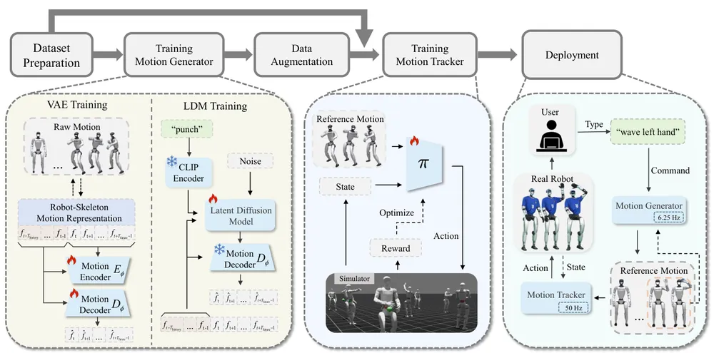
travplan에 주는 의미. travplan은 Planner가 경로나 시간 인덱스 궤적을 넘긴다(PlanResult). 같은 시간 인덱스 궤적도 Controller가 어떤 비용으로 따르느냐에 따라 8/12와 12/12로 갈렸다. MPPI 시간 참조 모드에 진행 항이 없어 멈춘 것이었다(ARCHITECTURE §4).
SONIC의 토큰처럼 위 층과 아래 층을 함께 학습한 잠재 인터페이스는 travplan에서는 Planner D와 학습 Controller를 함께 학습할 때의 선택지다. 지금은 해석 가능한 궤적 인터페이스가 Guidance 폴백과 MPPI 비교를 가능하게 하므로 바꿀 이유가 없다.
I.14 travplan에 주는 것, 실습, 스스로 확인할 질문
한 줄로. travplan이 옮길 것은 휴머노이드 정책이 아니라 절차다. 데이터 품질의 몫을 따로 재는 실험 설계, 어려운 구간 적응 표집, 교사–학생 증류, 그리고 끊지 않는 종료와 짧은 지평 끝의 가치 함수다.
| 모방 쪽 개념 | travplan 대응 | 상태 |
|---|---|---|
| 리타기팅 결함이 추종 실패가 된다(GMR) | 시연 생성 방법만 바꾸고 Controller를 고정해 Planner D를 짝 비교 | 제안. 2층 게이트로 잰다 |
| 실행 못 할 동작 거르기(H2O, ExBody2, PHUMA) | Planner D 시연을 Controller로 다시 굴려 치명·시간 초과 시연을 뺀다 | 제안(B.16.6과 같은 결론) |
| 발 미끄러짐 = 접촉점이 움직임 | 사람 조종 로그·보행자 궤적을 스워브 궤적으로 옮길 때 바퀴 옆 미끄러짐, 조향 한계(TP-0163) | 원격조종 로그를 쓰게 되면 |
| 어려운 구간 적응 표집(BeyondMimic, GMT) | 실패율로 시나리오·레벨·시작 지점을 자동으로 고른다. 손으로 고른 판(TP-0138·0143)은 있다 | 가설 |
| 특권 교사 → 이력 학생(OmniH2O) | Planner D는 이미 Guidance + MPPI 교사의 DAgger로 배운다(TP-0075). TinyPolicy에 이력을 넣으면 MPPI 교사의 DAgger를 먼저 |
일부 있음 |
| 시연다움을 보상으로(AMP 판별기, ADD 오차 벡터) | RL 후학습(TP-0066)의 부드러움 항(0.02) 자리에 판별기 점수를 둔다. ADD식이면 진행 부족분·국소 cost·제어 변화율만 오차 벡터로 모은다. 치명은 고정 벌점과 종료로 남긴다 | 가설. 재지 않았다(I.16, I.17) |
| 한 번 배워 고정해 다시 쓰는 사전(SMP) | 고정한 Planner D DAgger 체크포인트(flow matching)로 SMP식 오차를 재, 부드러움 항과 모방 손실을 함께 대신한다 | 가설. 재지 않았다(I.18) |
| 정책 기울기 벌점으로 매끄럽게(LCP) | TinyPolicy를 MPPI 교사 증류로 학습하게 되면, 증류 손실에 출력의 관측 야코비안 제곱 노름을 더하고 twist 변화량과 스워브 모듈 조향 각 변화량(TP-0034)을 잰다. 지금의 진화 전략 본학습에는 그대로 넣을 수 없다 |
가설. 재지 않았다(I.19) |
| 운동학 Planner + 추종기(SONIC) | Planner(Guidance·Planner D) + Controller(MPPI·NMPC) | 있음 |
| 명령을 스프링으로 실행 가능하게(SONIC) | Controller 롤아웃에 하위 지연(TP-0150, E.13의 TP-0135) | 있음(Controller 쪽) |
| 모방 쪽 개념 | travplan 대응 | 상태 |
|---|---|---|
| 생존 가중과 짧은 지평 끝 가치 함수(SuperMimic) | 학습 시뮬을 그대로 BPTT하고, 종료 항을 생존 가중으로, plant 지연만 학습 모델로 | 가설. I.11 장난감(1차원, 파라미터 4개)에서는 느슨한 목표까지 진짜 시뮬레이터 스텝을 15–35배 덜 썼지만, 마찰의 뜀이 기울기 방향을 틀리게 했다. TinyPolicy(파라미터 1,675개)의 ES와 비교한 것은 아니다 |
| 지형 엿보기(PGMT), 높이 지도 추종(GRAIL) | 다리 로봇을 쓸 때 TravMap을 추종기 입력으로 | 다리 로봇 도입 때 |
| 성공 정의가 숫자를 정한다(I.9) | 성공과 치명 실패를 따로 세고, 혼돈 조건은 짝 비교와 잡음 바닥 | 있음(CLAUDE.md 2층 게이트) |
실습.
PYTHONPATH=. python -m scripts.make_mimic_figures --only retarget을 돌린 뒤 fig_retarget의 로봇 다리를 0.34 + 0.34 m(사람과 같은 비율)로 바꿔 다시 돌린다. B의 디딤 중 발 속도가 얼마가 될지 먼저 예측한다. 확인한 뒤에는 그림 파일을 git checkout으로 되돌리고 커밋하지 않는다.fig_apg의 _sim_step에서 np.sign(v)를 np.tanh(v / 0.05)로 바꿔 마찰의 뜀만 없앤다. (b)의 세 선이 어떻게 바뀌는지 본다. 마찰을 0으로 두면 모델 오차와 뜀이 함께 사라져 둘을 가르지 못한다.requirements.txt, 자산·동작 압축 파일)를 마친 뒤 공개 모델부터 시험한다. 명령은 python mimickit/run.py --arg_file args/deepmimic_humanoid_ppo_args.txt --num_envs 4 --visualize true --mode test --model_file data/models/deepmimic_humanoid_spinkick_model.pt다(I.19). 데스크톱에서 Isaac Gym이 도는지는 확인하지 못했으니 --engine_config data/engines/newton_engine.yaml을 더한다.
다음으로 이 인자 파일과 args/deepmimic_humanoid_awr_args.txt로 회전 발차기를 --rand_seed만 바꿔 여러 번 학습한다. 학습 때는 --visualize false로 그리기를 끈다. 공개 기록의 1회 비교(PPO 272.4, AWR 275.8)가 seed 사이의 퍼짐보다 큰지 본다. NVIDIA GPU가 필요하다(데스크톱).스스로 확인할 질문. 답은 아래 토글에 있다.
… 이 토글의 나머지 블록 1개(문단·식·그림)는 대시보드 리서치 탭의 "답" 토글에 있다.